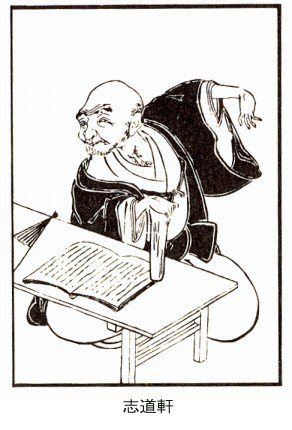

| 江戸の食と娯楽 | |
| 三田村鳶魚 | |
| (2015) | |
目次
江戸の食生活
庶民の食物志
買食いの風――煮売りの発生
茶屋のいろいろ――正食と間食
上方と江戸――江戸と田舎
海魚と川魚――シビ、鮭
鰹――押送舟、紀文の逸話
鰯――銚子と相州
鯉――鯉の吹流し
河豚――品川河豚、河豚の禁令
まぐろ――鮪の鮓の本根
食事の話
古いところは『沙石集』から
朝夕即食事
吉原と牢屋は二食
むらのある夕飯時間
午前十時の夕飯
優遇された赤穂浪士
遅くなる夜食の時間
都合三度の勘定
武士も農夫も
三食ときまった寛政期
様々な昼飯の様子
考うべき燈火の関係
豊富な物資の関係
働く人のための昼扶持
蕎麦と鮨
縄暖簾の食物
毒々しい鉄火巻
最初は饂飩屋
与謝野晶子の珍談
汁の中を游ぐ
鮨屋の方が多い
早鮨の発行
江戸ッ子の食好み
二八蕎麦
天麩羅と鰻の話
天麩羅の名の起り
もっともな斎藤月岑の駁論
天麩羅の食傷が家康の死因
街頭に進出した天麩羅
弁天小僧の台詞にも
慶応以後の天麩羅の世界
蒲焼に関する両説
江戸の方が遅い鰻
鰻屋は天明期から
蒲焼のさめぬ工夫
鰻丼の創始者大久保今助
産地よりも焼き方
鰻に限る江戸前という言葉
金竜山の米饅頭
根本の鶴屋の存続
米饅頭の名義
私娼の異名
娯楽の江戸
江戸の民衆娯楽
辻相撲の禁止
公方様も神田の氏子
祭り衣裳に女房の身売り
引摺茶番の夜討
郊外の花見
吉宗将軍の宿意
葭簀張りの簡易興行
入場料をとらない見世物
寄席は文化から
大道芸と葭簀張り興行
奪われた民衆娯楽
大道芸の妙味情味
秋葉の原の火除地
かっぽれの初坊主
法螺と錫杖の上州左衛門
佐竹の原の新開
筋違の殷賑
道化万歳
講釈の移替り
寄席の盛衰
落語年代記
秀忠将軍の御伽
八町潰しの文車
昼席の御定連
寛政以来の名人
女義太夫と娘新内
婦女の看劇難
竜野周一郎・奥宮健之
最初の落語
虚月爺二郎のモデル
虚月爺二郎＝斎藤文次
精製した嘘譚
大食会の興行
画入りの怪談
文政末の出し物語
茶番の発達した化政
遊女の三ッ子
江戸末の幽霊好み
幽霊の元祖は尾上松緑
幽霊人形師泉目吉
松江侯の化物の間
一つ眼小僧に大若衆
当時の事実怪談種々
京伝の読本
髪切りと女の尻突き
落語の佃祭
芝浜の財布
京の芸子の心中立て
花鳥茶屋
江戸の食生活史――山本博文
買食いの風――煮売りの発生
今度のお話は、江戸時代の庶民の食物です。皆の食物、市街地の食物、という心持で「庶民」という文字を使ってみました。
江戸時代の町家の人達は、その身分の差がいろいろありましたけれども、それには拘らず、奢りに行く、といいまして、毎月一回なり二回なり、家族を連れて料理屋へ行く、という仕癖がありました。これは、旦那株の人でも、半纏を着ている人でも、奢りに行くといえば、必ずこういうことをやったものです。その他にも、自分の家で出来るものばかり食っていないで、料理屋なり何なりについて、食物の供給を受ける。また、それを好む様子があった。これは、相当な台所を持っていないからそういう風が起ったかといいますと、そうではない。町家でも、家によっては、我儘な生活の出来る人でも、やはりそういう傾向がありました。それがまた、一々に料理の沿革というものになってゆくわけであります。
大体、この食物を買って食うということは、旅からきている――旅行によって起ったことなので、本来はめいめいの家で自ら供給しているのですが、旅へ出るとどうしても他の供給を受けるより仕方がない。そこで、路銭・旅入用というものには、必ず貨幣を持って出なければならない。世の中の一般が物々交換であった時代から、貨幣が主な働きをしかけたのは、旅ということがあったためでありまして、それは食物の供給を他に仰ぐことからきています。それは旅ということからいえば必至の事柄で、旅であるから日々のことが変ってゆく。別にたくらまないでも、不断受用していた食物とは違ったものに出っくわすことがある。自分のうちでものを食うのでないということが、珍しい変ったもの、という方にひろがってゆく。それから先は、また善尽し美尽すというふうに発達していったのでありますが、そういうことから考えると、旅の食物ということと、後来の料理屋、その他の食物とは、かかり合いがあるように思われます。
そんな古い話はおいて、近い寛永期になりましても、海道の立場〔街道ぞいの休息所〕のほかは、食物の供給をする場所がなかった。それどころじゃありません。江戸の中でも、享保の半ばまでは、丸の内から浅草観音までの間に、食物屋がなかった。四谷成子辺には、安永頃までなかったそうです。金竜山に五匁料理が出来たのが享保の末で、それがたいそう珍しいことのように思われていましたが、宝暦期にはもうなくなっていました。この五匁料理の最初はどうであったといいますと、明暦の大火災後に、奈良茶飯というものが出来た。豆腐汁・煮染・煮豆といったようなもので、これは奈良の旅籠の仕方を学んだものだそうです。旅ではないけれども、明暦の大火後に、その風をうつしたものが出来た。菜飯の茶屋といって、享保に名高いものが出来たのは、この系統に属するものであります。
元禄十三年の地震火事の後には、焼け場に田楽売りが出ました。一串三文ずつでしたが、何しろ震災後ですから、町人ばかりじゃない、士衆もこれを食べた。その翌年飢饉で皆が困った時、江戸の端々へ煮売り小店が出た。昔の飢饉は物がないので飢饉がくるので、今の飢饉とは違いますから、どうしてもこういうふうになる。この時初めて往来で食物を売るようになったので、屋台店が出るようになったのは、天明五年の飢饉の時からです。こういうことも、やはり自分の家で物を食う都合にゆかぬため、他から食物を仰がなければならぬ事情を生じて、こういうものが発達したのであります。
そこで注意してみなければならぬのは、煮売りということです。煮売りには、行商する者と、辻売りといって人の大勢寄る所へ持ち出して売る者と、場所を動かずに店を構えてやるのと、おおよそ三通りありますが、これが江戸の市街地で食物を供給する最初のものでありました。このうち一番早いのが行商・煮売りで、いつからというよりどころはありませんが、寛文元年十二月二十三日に、煮売りの夜商をしてはならぬという禁令が出ておりますから、この頃既に行商のあったことが察せられる。それ以前どのくらい遡っているかというと、何ともわかりません。寛文十年七月には、午後六時以後の商を禁じておりますから、この頃は店舗のあったことを認めることが出来ます。けれども、この時分の煮売屋なるものは、どういう人々がそれを利用したかといいますと、これはごく低い階級に限られておった。武家は勿論、商家でも手堅いうちでは、テンヤ物といって、他から供給する食物を嫌う風がある。料理屋からものを取ることさえ、嫌う家がありました。後々までも、買食いというのは、ごくいけないことになっております。町家の堅い家では、武家の風を真似て、そうなったのです。後にはそうばかりもゆかなくなりましたが、それでも、大きな町家では、外へ出る時には弁当を持って行く。あるいは、先々へ申し付けておいて、どこどこで昼食するから、といって支度させて置く、というふうになっている。延宝三年の『吉原大雑書』に、いろいろ風儀の悪くなったことを挙げて、
今の女郎は、あさましや、文庫の蓋に花鰹いとあらあらしく手づからかき、小夜更けがたに蕎麦切を待ちかね玉ふ体たらく、焼蛤に立つ烟、真垣の内にみちみちて、鼻持ちならぬ其内に、哥や連歌に引かへて、饂飩、田楽、酒を好み、お茶挽き、お敵のあらざれば、から酒盛のちやわんのみ、かゝる風情を見るからに、思ひかけたる常陸帯、むすびしえんもきれはてゝ、飽かぬ別をし玉ふぞや、たしなみ玉へ。
茶屋のいろいろ――正食と間食
行商や辻売り、あるいは、店を構えているにしても、煮売屋よりもたちまさったのは、茶屋であります。茶屋というものにもいろいろあって、出茶屋や掛茶屋は居つきでない。朝出て晩には引っ込む。これは腰掛茶屋とか、水茶屋とかいわれるやつです。ついでだからここで言っておきますが、引手茶屋というのは、案内するのが本職なので――引手茶屋の名は後に起ったのだけれども、しばらく吉原の話で言いますと、その中に出茶屋でなしに居付になっているのがある。それと、寄合茶屋の化けたのと船宿とがゴッチャになって、今の待合になったのです。寄合茶屋には食物の設備がありませんから、前もって言っておかなければ、御馳走は出来ない。そこで、いつ行っても何か食えるようになっているのを、料理茶屋という。これは料理の支度が出来る茶屋です。その面影が残っているのは、即席料理という言葉で、普通は前もって言っておかなければ料理が出来ぬから、一方にこういう言葉を生じたのであります。
在合料理というのは立場の風で、これは前から言わないでも用が足りる。江戸の町方にあります茶屋及び料理茶屋は、在合料理ではなかったのですが、後には板をもってきて、そのうちから望んでもらうようになった。これは立場風なので、両方がゴチャゴチャになったのです。立場風というのは、海道筋の茶屋の趣向で、その他に一膳飯を売る飯屋というのがあり、芋酒屋なんていうのもある。これは享保以来のものです。居酒屋は宝暦以来、茶漬屋も随分はやったもので、江戸の市外になりますが、安永期に成子の婆々の茶屋というのがあって、これが一番早かったということになっています。江戸の方々に茶漬の店が出来るようになったのは天明以来で、寛政以後、特に盛んになりました。
その他に、まだ弁当屋・仕出し屋・炊き出し、なんていうのがある。弁当屋は前もって命じなければいけないので、これは一食だけの供給をするものです。仕出し屋は、主に御馳走だけこしらえて、入用なところへ運ぶので、これも前もって言わなければ出来ない。炊き出しは、大勢臨時に人が集るような場合、そこへ食物を配給するので、例えば見附などを固めることがある、これは大名衆が代り番こに勤めるのですが、その人数に対して、三度といえば三度、二度といえば二度持って行く。それが炊き出しなので、大概は三度ときまっておりました。それが弁当屋と違う。弁当屋は一遍一遍の立て前ですが、炊き出しは一日分として引き受けるのです。
それからすぐ食べられるものを供給する店――これは酒屋・肴屋・八百屋のような、すぐでなく食べられる物に対していうのですが、それには、鰻屋・蕎麦屋・汁粉屋・団子屋・天ぷら屋・菓子屋・水菓子屋等がある。この中に、間食のためにあるものと、正食のためにあるものとありますが、何れもすぐ食べられるものばかりです。
上方と江戸――江戸と田舎
それに江戸というところは、食物の材料が少ない。京の着倒れ大阪の食倒れ、なんて言いますが、上方の方が材料が豊富だし、料理法も整っていていいものがある。江戸も、洒落本時代になりますと、「口中が鏡だ」なんていうけれども、いくら気取ったってお話にならない。口がよかったにしたところで、材料が悪いのだから駄目です。このいい例には、古いところで、木曾義仲の無塩の話がある。無塩というのは、塩物と塩でないとを区別する話なのを、新しければ、何でも無塩というのだと心得て、むやみに無塩を用いて笑われた話。その義仲から見れば、もっとましな尾張から出ている信長が、時代も大分下っているに拘らず、京都へ上って料理を食ってみた。大変上手な料理人であるというのに、ちっともうまくない。これじゃ仕様がないじゃないか、とひどく不足を言った。料理した方でも、どうも田舎侍は仕方がない、一番上等の料理では口に合うまいから、第二等にしてみたが、それでもまだわからない、と言って嗤ったというのです。それくらい上方は料理方の進んだところで、材料もまた非常に豊富なのだから、とても比較にならぬのであります。
江戸の人は、食物を江戸と田舎とに分ける。そうして砂糖気の余計あるのが江戸風だと思っている。よく地方に行って、むやみに甘ったるいものを食わされて、菓子みたいなものを食わせる、といって憤慨するんですが、その癖塩からいものも食えない。淡い味のものを賞翫するなんていうことは、無論出来ない。それでもだんだん発達して、砂糖のかたまりじゃ困るくらいの程度にはなりましたが、この食物がよくなるということについては、人の出入りの多い少ないの関係があります。江戸へ通う中仙道その他に比べて、東海道の食物が一番いいといわれたのは、大名の往来が一番多かったためです。まして江戸のような大都会になると、常に人出入りが多うございますから、それが発達を促したことは明らかでありますが、だから、江戸が一番うまいものを食っていたなどと思ったら、とんだ間違いです。それについては、料理のこと、間食の発達、その他いろいろ考えてみなければならない問題がありますが、それより前に、材料を一わたり見たい。第一に魚類のことを少しいってみましょう。
海魚と川魚――シビ、鮭
江戸のはじまりのことを見るには、『慶長見聞集』によるのが一番いいと思いますが、これには、「かつを、しびは毎年夏に至り西海より東海へ来る、伊豆、相模、安房の海に釣りあぐる初鰹賞翫也」と書いてある。シビ〔マグロのこと〕は、江戸の早いところでは、かなり賞翫されたもので、それを塩漬にしておいて、信濃や上野・下野というような方面へ輸送する。このシビに湧いた虫がその肉を食って、終にかたまって死ぬと、またもとの肉のようになる、そいつを山国の人は平気で食っている、というようなことも書いてありますが、これは多少悪口もあるでしょう。後来も、江戸ッ子は、田舎の者を、鉢巻しなければ鮪を食った気のしない連中だ、などと嘲りましたが、肉の黒くなっている仙台鮪を食えば、大抵中毒して頭痛がする、それがまた定例のように思われていたのです。江戸近くでは鮪がとれません。遠くからは輸送が容易でないから、遠くで漁獲されるものより、近い所で獲れるものがいい。新鮮ですから好味なのです。この時分は鰹よりシビがいいと言って賞翫したので、今の人は承知しないかもしれないが、そういう情勢にあったものとみえるのです。
『慶長見聞集』は大体慶長の末に書いたものと思われますが、「今より末の世、東海に生魚貝有べからず、遠国より持ち参る塩魚塩貝をこそ喰はめ、され共川魚は昔に変らず、若鮎、初鮭を皆賞翫し給ふ、関東に多し、鮎は玉川、鮭はきぬ川にあり」と書いてある。玉川の鮎は後々までも珍重でありますが、初鮭の方はそうはゆかない。「然るに、初鮭は十年以前迄は冬の末より取りしが、今は秋の始なり、近年初鮭一喉は金五十両卅両のあたひする......是も大海の生魚なきが故也」というのです。慶長年末から十年前というと同九年頃になりますが、その頃に比して、『慶長見聞集』を書く時分には、もうあまり捕れなかったらしい。この『慶長見聞集』で見ると、生魚が近海で捕れなくなったから川魚の方へ転じた、というふうに書いてある。川魚料理というものは、江戸に海魚が少ない、それで自然川魚に満足しなければならない、といえばそのようでもあるが、京都のような山国でも、海魚と川魚との賞翫は、少し模様が違う。江戸の川魚の賞翫は、むしろ贅沢になって、口嗜が出来てきた証拠になるんじゃないかと思う。殊に一般の住民がことごとく川魚に向ったわけではない。後々までも川魚料理というものは、数多い料理の中に儼然としてあったのです。
宝暦七年の『評判竜美野子』を見ますと、
鮭 初の字のつくもの、名月の頃より初舞台
鰹――押送舟、紀文の逸話
それから、江戸の評判物だから鰹を片付けなければなりませんが、初鰹の献上というものは、いつ頃からあったのか。寛永八年三月二十三日に、伊豆の小林十郎左衛門の献上したのが、私の見た記録の中では、一番古いように思う。例の兼好が『徒然草』で、自分の若い時分には、鰹などはあまり食わなかったが、今は相当な人の口にも入るようになった、と言って嘆息していますが、世が下って寛永期になると、立派にこういう記録が残っていて、将軍家に献上したのが知れます。寛永十三年の『可笑記』には、「この頃鰹といふ魚ことの外世間にもてなされ、......是に心づきて当世を伺みるに、鰯、このしろ、剰、ぬか味噌、にんにくまでも、高家大名の御料理なのめならず」といって、食物の下遷するのを冷かしたような調子で書いています。とにかく、寛永期には立派な人達が鰹を召し上るようになったのです。
幕府の末頃に、鰹の御注進ということがありました。これはいつ頃から始まったものかわかりません。旧暦の四月初めで、この時は、値段も一尾二貫五百文くらいしたそうです。鰹の御注進というのは、魚市場へはじめて鰹が着いた時、幕府の方へお届けして、その品物が上納になる。それが済まないうちは、市中に販売することは出来なかった。その次からも上納は致しますが、同時に一般に売るので、値段もだんだん下りまして、一番安い時には、一尾百文というところまで、お買上げの鰹の値が下るのです。天明八年の『評判の俵』に、「鰹の初値が二貫五百」と書いてありますから、二貫五百というのは、この頃からの定めじゃないかと思います。
その点から見ると、其角の『続五元集』に、「初鰹一両迄は買気なり」などとあるのは、景気をみせたまでのものじゃないかと思われる。其角は乗り気になって、『類柑子』『句兄弟』『末若葉』などにも、いろいろ鰹のことを書いておりますが、元禄十年の『水ひらめ』という俳書には、
六浦の押送り舟、夜鰹の来ぬ間は蓼酢にてのさし身も涼し。
秘密献立、指身鰹、夜鷹、からしずなくてはいけず、食て後気遣ひせり。
押送舟というものは夜来るので、享保の『名物かのこ』にも、「新場の夜鰹」〔新場は魚市場〕が名物になっています。団十郎の書いた『老の楽』の寛保二年のところに、江戸名物として、
鮭、鰹、比丘尼、紫、生鰯、大名小路、ねぶか大根
ある時、紀文が末社の重兵衛というものに、今年は初鰹を吉原で食いたい、お前の働きで、江戸に一本も見えないうちに料理して食わせるようにしろ、と言い付けた。重兵衛は委細承知して、肴問屋に残らず話しまして、前金を打って初めての鰹の荷を全部買い占めた。それから使いを出しましたので、紀文が大勢連れて吉原へやって来ると、たった一本の鰹を料理して出した。大勢に一本だから、たちまちに皆食ってしまった。お皿をながめていても仕方がないから、もっとないかと催促するけれども、重兵衛は出さない。紀文ももどかしく思って、何故後を出さぬかと言うと、重兵衛は庭にある大半切〔底の浅い桶〕の蓋を二つ三つ取って見せて、鰹はこんなにありますが、初鰹は珍しいところが賞翫です、この鰹はあとで皆にやってしまいます、と言った。それが紀文にはばかに嬉しくて、当座の褒美だと言って、重兵衛に五十両くれた、という話が残っています。こういう話から考えても、当時はまだ初鰹の御注進なるものがなかったことがわかります。
鰹は舟で来るばかりでなく、陸上からも来ました。其角の句に、水陸両方の輸送を詠んだのがありますから、ついでに挙げておきましょう。「帆をおろす舟は鰹か磯がくれ」、これは水上です。「鰹荷の跡は巳の日の道者かな」、これは馬で来る方です。
天明六年の『無駄砂子』、これは『江戸砂子』のもじりで、鰹のことを「松魚ヶ浦」として、名所古跡のようにいろいろ書いてある、なかなか洒落たものです。
○初荷の商人帆かけて走る風景よし。
（これは押送りの来る景気をいったものでしょう）
○兼好がいましめを用ひず、多くのあたひを出して、みえに喰ふほうぐわんの古跡。
みえばかりひとしく建て万代に今ぞ栄えんかまくらの海
（みえに食うということに力が入っている。見え坊が高いのを構わずに鰹を買って食うのは、川柳にいくらもある手ですが、その時分にはこんなのがよくあったとみえる）
○此毒魚に見入られ、折ふしかの淵に衣類をしづめ、其難をのがるゝよし、おそろしき淵也。
評に曰、其毒魚は、ふか鮫にあらず、酔覚に後悔すといふ。
○あら煮の御関所見ゆる。
（アラを煮て食ったのでしょう。鰹は煮てはうまくないものですが）
○差見の松あり、俎橋忠弥、此所にのぼり雲気を考へたる所なり。
（鰹の刺身も上方人は賞翫しません。刺身の妙味は肉の薄いところにあるのだが、鰹ではそうは行かない）
○古瀬村きじやき藤太が旧跡なり。
（フルセというのは初鰹じゃない、秋鰹になってからです。これで鰹の料理の様子も多少わかると思います）
高い物の親玉、初松魚、五両してもかまわぬ。
けれども、嘉永の初めにはどうかすると、一尾三両くらいすることがあった。それは一時のことで、五六年の頃になっては、一分二朱か二分までくらいのものだったといいますから、何とした訳か知れませんが、飛び離れた値段のこともあったのです。『五月雨草紙』などをみると、やはり嘉永以後のことが書いてありますが、「目の下一尺四五寸百疋」というから一分です。それから後、二百五十文くらいであったそうですが、どうも一分というのが、天井相場だったように思われる。安永二年の『小児養育気質』にも、「鰹の走りを百疋で調へ」とあるので、まず安永この方、初鰹は一尾一分、それからだんだん値が下ったものとみてよかろうと思います。
鰹を売って歩く人間については、『塵塚談』の中に、「我等十四歳の比迄は、魚売は忙しさうに早脚に往来せり、松魚売抔は侠客の形気にて、魚を截事抔は指置、価を下直〔安価〕につくれば、首計はうらぬの、わたしは売りたけれども魚がいやだと云ふ等、雑言を吐きて出て行きたり」と書いてあります。「我等十四歳」というのは寛政元年ですが、それが化政期になっては、そういうふうもなく、買い手に悪口してゆくなんていうこともなくなった。それでも、中っ腹〔怒りをふくむこと〕というやつがついていなけりゃ、鰹売りでないように思って、唄の文句にも中っ腹を振り回していますから、他のものよりは元気がよかったものでしょう。
鰯――銚子と相州
それから鰯ですが、鰯を献上した記録は、私のみたところでは、明暦元年十月十日に、宇和島の伊達遠江守から松平伊豆守をもって献上した、これが一番早いようです。あるいは、もっと早いのがあるかもしれません。鰯は銚子で多く取れるのですが、あそこが著名な場所になったのは享保六年のことで、その時は、八月二日から十五六日までの間に、新金すなわち新らしい貨幣で二万両程捕れた、というから大変なものです。銚子は田畑のない所であるに拘らず、この鰯のために一万石ほどの取箇のある場所になっていた。場所も銚子ですから、押送りで早く持って来ることが出来る。享保二年の「物揃」に、
先いそぐもの、はやりいしやと鮮いわし売
今年払底な物ナマイワシと御老中
鯉――鯉の吹流し
その次は鯉です。百本杭の鯉釣というものがあった。両国橋の東の袂から、少し上へ寄ったところに乱杭が打ってあって、よく古い下駄なんぞが浮いていたことをおぼえている。だから、穢い下駄を穿いていると、百本杭に浮いているような下駄だ、などと言ったものです。ここにいつでも釣師がおりまして、鯉を釣るのだということでした。私は釣ったのを見たことはありませんが、時々は釣れるんでしょう。これが東京中で一番いい鯉で、ここで捕れたのは、大変高かったのです。
古いところで見ますと、『江戸名所記』に、「此川の鯉は名物にて、其風味すべて淀鯉にまされば、此川ばたに売とかや」と書いてある。「此川」というのは、浅草川のことです。『紫の一本』は天和に書いたものですが、「駒形堂の鯉を高砂屋の味噌にして吸物にし」とあり、「浅草の川の面の船遊びこひになりつゝ身も躍るなり」という狂歌も出ております。其角にも、「鯉の義は山吹の瀬やしらぬ分」というのがあって、旨原の書入に、「綾瀬ノ辺、御留川ナリ、山吹ノ鯉トテ名物ナリ、川守ニ少ク金子ヲアタヘ、魚ヲカフナリ」と書いてある。紫鯉といって、ここの名物だったのです。
寛保の『江戸往来』には「浅草鯉」とあり、享和の『東わらは』には「荒川鯉」とあり、どっちみち、あの川筋の名になっております。又「向島に洗ひ鯉」ともありますが、『街談文々集要』の文化六年のところに、「洗鯉のわさび醤油」とありますから、鯉こくばかりじゃない、生でも食ったのです。ここに「わさび醤油」とあるので、この時分刺身に醤油を使っていることがわかる。醤油で食うのは、文化からどのくらい溯れるか、あまり遠くはないんじゃないかと思う。刺身醤油というものが出て来たのはいつ頃か、これはわかりません。刺身を醤油で食うということは、よほど考えなければならぬことで、酢で食うのとは大分違う、それだけ発達したわけです。
鯉の話でおもしろいのは、鯉の吹流しというものが、文化頃まで上方になかった、江戸限りのものだったのです。紫鯉というものは、口の端が少し青いのですが、江戸ッ子が紫鯉を自慢にすることが、おのずから鯉の吹流しに現れて、あの吹流しを見ると、口の横に小さく藍が塗ってある。鯉の吹流しが上方になかったということは、これまであまり誰も言っておらぬように思う。「江戸ッ子は皐月の鯉の吹流し口先ばかり腹綿はなし」なんていうことも、えらい自慢のわけなので、ちょっとみると、自分で貶したようだけれども、それがべらぼうに気持がよかったのです。
河豚――品川河豚、河豚の禁令
それから河豚――まだ鮎だのいろいろなものがありますが、河豚を先へ申します。宝永七年の『俗枕草紙』に、「三浦三崎の虎鰒一盃五百しても是を調へ、主従四人、霜先の薬喰」とあるのをみると、食べて温まるわけだったのでしょう。五百というと、銭五百文、四貫相場にして金一両で八つしか買えません。かなり高いものです。河豚の古く物に見えたのは、延宝の『吉原下職原』に、「風俗も品川ふぐの横飛なり」と書いてある。これは潮際河豚のことなのですが、ムクムク太っているのを、品川河豚のようなザマだといったのです。宝永版の『傾城太々神楽』の中には、「ふぐくふて命を失ふたる侍の跡はたゝぬ」と書いてありますが、これはそういう危険なものを食うのは不覚者だ、と言って戒めたのでしょう。実際は、どこの藩にもそういう法令はない、頓死して相続人のない場合、無論その家は潰れますが、特に河豚を食って死んだから、どうということはないようです。士は万全を心がけなければならぬ、うっかり死ぬわけにはゆかない、生きるについても同様です。河豚を食って死ぬような不覚をしてはならぬ、と戒めたものと思われます。
河豚に関する法令を少し捜してみましたが、私が気がついたのは、安永八年七月に、「時節をも相考、性合は勿論、新古の儀は篤と相改可致売買候」というのがある。だから売買を差し止めたのではない、この後にもこういう法令はしばしば出ていますが、売るのを止めたのは一つもありません。売買はしていたようです。早いところでは、元禄期のことを書いた『吉原徒然草』に、新場で売買していたことが見え、そこから吉原へも河豚を持ち込んで売っていたらしい。一般としては、宝暦期のものには沢山ありますが、その二つ三つを挙げてみますと、
ナンノ鰒が毒であらふぞ、観音の市で煮売まで喰ふたが、遂にあたつたことがない。（『当風辻談義』）
鰒汁ぎらいなかたいおやぢ（『返答下手談義』）
平賀源内の書いた『根無草』に、「ふぐやふぐやと大道を売歩行」とあり、「河豚なきときは、外の魚をふぐもどきと名を付けて喰ふ」とあるのを見れば、振売りもしていたらしい。『名産諸色往来』にも、「品川鰒」を挙げてあります。『評判竜美野子』には、
河豚、今時は世間が通者じみて、女や若衆迄が、大喰ひをして、いやはや興も色もさめはてる、廿年以前迄は身を持た物は喰ワなんだ。
中川釜の釣針にかゝり、腹を立、頬をふくらかして、おたふくのおどけ、
宝暦以前にあっては、河豚と※（魚へんに祭）は武家では食わなかった。河豚が十二文、※が二三文くらいのものであったが、文化年中になると、両方とも士衆が食うようになった、食い手が多くなったから、河豚のハシリは、二百文、三百文するようになり、庶民の口へ入らぬようになった、※の方は、今でも武士は食わないが、酢につければ、結構だといって食っていると、『塵塚談』の著者は書いております。※いう名が「此の城」と聞えるから、士は忌んで食わなかったのです。河豚も皆が食わぬ食わぬといっているけれども、鮓のオボロは大概これなので、存外知らぬ間に食わされているのです。
河豚については、俳諧の季題の古いところを吟味したら、おもしろかろうと思います。文化六年の見立料理に、「ふぐの吸物」というのがあります。上方でいうチリなるものは、江戸にはなかった。大概河豚汁であったようです。
まぐろ――鮪の鮓の本根
その次は鮪、これは其角も『類柑子』に、「かんてらに片身かゞやく真黒かな」という句があり、『焦尾琴』には、「西の方まぐろなからん関の月」なんていうのもある。
『江府風俗志』には、「延享の初頃は、さつまいも、かぼちや、まぐろは、甚下品にて、町人も表店住の者は、食する事を恥る体也」とありますが、京伝の書いた『古契三娼』（天明七年刊）には、「鮪のさしみ」と書いてあります。ところで、御愛嬌なのは、鮪はもと遠海で捕れたものなのですが、どういう潮流の加減か、近海で大変沢山捕れた、文化の七、八両年は、冬になって、伊豆・相模方面で、一日一万尾の鮪が捕れたということです。沢山捕れたから安くもなり、安いから広がりもしたんでしょう。自然と鮪の位置が変って来た。『飛鳥川』に、
昔はまぐろを食たるを、人に物語するにも、耳に寄つて、窃に咄たるに、今は歴々の御料理に出るもおかし。
天保三年の二三月頃に捕れたのは、また大変なもので、中鮪の二尺五寸から三尺くらいのものが、河岸相場で二百文、立売りは片身百文、小さいやつだと八十文、二十四文買えば、二三人前の分量はあった。文化の大漁の時にも、仕方がないから肥料にしたので、今度も無論そうしたけれども、しきれぬほど沢山ある。弱ってしまった。何とか早く消化する法を考えなければいかぬ、ということになって、その時分に思いついたのが、一番いいところを択って鮓にするということなのです。鮪の鮓はこの時はじめて出来た。私の祖父は文政生まれでしたが、鮪の鮓が出来た時分に、評判だからやってみたが、どうもいけない、元来鮓というやつは、酢の利いたものを乗っけるのだが、鮪ではそれが出来ない、鮪に酢を利かせようとして、酢に浸けたら肉が変色する、真白くなるだけで、肌がザラザラになって、見たところもキタナクなる、是非あの儘で酢の気のないところでいく、その頃は醤油をつけて鮓を食うことを知らないから、前からある鮓のつもりでやるといけない、いくらもあって安いものだし、見た目も綺麗だから、ひょっとやってみるが、どうもあれには困った、と言っておりました。鮓という物は酢味がなければならぬのに、鮪に限ってそれがない。あれば変則のものだからです。
これから先は悪口になりますが、もともと始末に困って、処理の一方法として案出した鮪の鮓なのに、鮪でなければ鮓でないように思っている連中がある。あれは蜜豆をお菓子だと思っているのと同じことだ。いわんや鉄火巻なんていうものに至っては、お話にならない。海苔巻だと思って食ってみると、中から赤いのが出て来る、まるで猫の食いものが化けたようなものだ。これはほかの鮓と食べ比べてみれば、すぐわかることです。鮓を漬けるといいますが、あれは実際漬けるので、簡単な一夜鮓でも、上から圧しをかけて、一日たって酸化したところを食べるのです。上等な料理には、白い刺身はあるが、赤い刺身はない。鮪の位置は、これだけでもわかりましょう。延宝二年の『吉原失墜』にも、
ばいた、ふんばり、皆うかれ女の名也、所によつて替べし、上方にてはつい転び、惣嫁、惣右衛門、大坂にて坊まで、本庄にて毛饅頭、去る者の曰く、越後にては鮪さくといふ、鮪とは下々の喰ひ料なる故にいふ。
古いところは『沙石集』から
今日は、我々が三度ずつ飯を食うようになった話を申上げようと思います。このことは、前に「庶民の食物志」の中で申したことがありますから、多少重複するところもあろうと思いますが、そこを飛ばすと話がわからなくなる。前にお読みになったお方は、これを御用捨の上でお聞きを願います。
飯の度数のことについて、喜多村※庭（※は竹かんむりに均）は、無住禅師の『沙石集』に、
昔は寺々只一食にて、朝食一度しけり、次第に器量弱くして、非時と名けて日中に食し、後には山も奈良も三度食す、夕ベのをば、事と山にはいへり、未申の時ばかり非時して、法師原、坂本へ下りぬれば、夕方寄合て事と名けて、我々世事して食す。
慶長活字の笑話本『きのふはけふの物語』などを見ますと、慶長期の食事の模様がわかる。
三井寺の法印、雨中の御つれづれにとて、二度物おもふと云題を出し、是にて一首づゝよみ給へとて、二人のちごに仰せければ、
大ちご
春は花秋はもみぢをちらさじととしに二度ものおもふなり
小ちご
あさめしと又夕めしにはづれじと日々に二たび物をこそおもへ
ところで、『武家物語』には、北条氏康の言葉として、「凡人間は高きも下きも一日に両度づゝの食なれば」と書いてある。又『肥陽軍記』には、「あさげ夕げの烟立て月も光をうしなへる」という文句があります。『武功雑記』には、「人の食物は、とかく朝暮二合五勺宛可然と、滝川左近将監積り定候由」とある。朝夕二合五勺ずつですから、一日五合の勘定なので、後々まで、男の扶持は一日五合ときまっておった。それは滝川一益からはじまったというのですが、これは武田信玄からだとも言い、豊太閤からだとも言われております。多分戦国武士のきまりだったのでしょう。
朝夕即食事
御伽草子の『物草太郎』の中には、「毎日三合飯を二どくはせ、酒を一どのますべし」とある。それから『甲斐国志』の中には、慶長七年の掟書として、次のようなのが挙げてあります。
一、催促の人もらひの事、此方申付候ごとく、なけわけ大こん計にて、一日に二度ヅヽたるべき事。
『慶長見聞集』などを見ましても、「一合の食物を朝五勺晩五勺、是を丸じて、ごきあなより此暗き地獄へなげ入る」と書いてある。これは牢屋の話なので、牢屋に入っている人間にも、やはり朝夕二度与えていたことがわかります。
伊達政宗のことを書きました『命期集』には、「御膳抔も、朝夕の外、御菓子の類にても、昼程抔被召上例無之候」と書いてある。塚原卜伝の『ト伝百首』にも、
武士は妄に食をせぬぞよき、日に二度ならで好ばしすな、
春日局のことを書いた『麟祥院清話』には、御譜代餅と言って、餅を搗いて配る話が書いてある。その中に、「貴賤上下共に、二時の飯は腹のふくるゝを期として命をつなぐ......御次、御扈従以下坊主まで、昼夜勤労するに、何とて男たち堪忍なるべき、夫々にくばらば、辛労慰問と成て、以ての外御為なり」とあります。二度の食事では、食事と食事の間も長く、殊に夕飯の後から御引けまでの間が難儀であろう、御譜代餅は余計な物のようであるが、空腹でも働かなければならない昼夜勤めの者に与えて、凌ぎに喰べさせるようにすれば、決して無駄なことはないと言うのです。これは二食から三食に移らなければならなくなる、必至の様子を見せているように思われます。
寛文二年に書いた『為人鈔』には、「気さかんに、脾胃も尋常の人は一日に二度、心に足ほど食して、間々に物をくはぬやうに、腹中をしつけたるがよきなり」と書いてある。一日に二度、心に足るほど食って、間には物を食わせぬ癖をつけておくのがいいというのです。これらで見ましても、昔の人は一遍に二合五勺食うことが出来たのでしょう。度々ものを食うことは、用事をする妨げにもなる。しかし、戦国時代の軍書・戦記などを見ますと、随分不時にものを食っております。あの時分は、朝懸・夜討・陣替というようなことが頻繁にありますから、朝晩のきまった食事だけではいけない。食事が乱れたのは、一つは戦争のためであるように見えます。戦国時代の兵士は、日に幾度飯を食うものかわかりませんが、いよいよ戦争がはじまってからは、ものを食う暇もない、間食せずに済ます仕癖をつける必要があったでしょう。ただ戦争がないようになっても、朝晩きまった食事で済まさなければならぬ習わしをそのままに、戦国から平和になったところで、二度の食事は因襲していたらしい様子が見えます。
寛永期あたりのことを、後から振り返って見た『落穂集』には、「世間無異安堵成る時の朝夕とても料理数寄、食ごのみを仕る義も無之也」と書いてあります。これは、「朝夕」と書いて、食事の意味になっている。「庶民の食物志」の時にも申しましたが、『鎌倉三代記』の中で、時姫が、「朝夕もすゝまず」という、あれも食事のことです。後々まで、朝夕と言っただけで、済ましてもおりましたし、通用してもおった。朝夕二度食う癖がついておったから、それでそういうふうになったんじゃないかと思います。
吉原と牢屋は二食
川越の旧家『榎本弥左衛門覚書』は、延宝八年に書いたものですから、もうすっかり泰平の世の中になりきっておりますが、その中に、「総て子供育てやう、我等教への通り食六分にくはせ、一切の菓子は不及申、二度の飯より外に、何にてもくはせ申間敷候」と書いてあります。西鶴の書きました『好色一代男』には、「二度の食物」とあり、『好色一代女』の方には、「二度の食は手前にて振舞ふなり」とある。『西鶴織留』には、「朝夕の食事とて、飯櫃にくるまをしかけて」ということがありますし、『日本永代蔵』にはまた、「朝夕の鴨鱠杉焼のいたり料理が胸につかへて」と書いてあります。絶対に三度食わぬこともなかったようですが、この時分のところは、大体二度となっている。
正徳年間の『野傾旅葛籠』にも、「二度の食物の外むざとしたる物を喰はず」とあり、元文元年の『諸商人世帯気質』には、「我は二度の飯に鱠残魚添へて喰ふ」とあって、三度とは書いてない。この二度の食ということが、きまりになっておりましたから、その古風が伝わって、吉原と牢屋は後々まで二食でありました。そこで宝永五年版の『風流呉竹男』には、「二度の食もよし原でうまい物くい」と書いてある。宝暦二年の『世間母親容気』にも、「太夫は痞持じや、中らぬ様と古米の二度の飯」とあり、慶紀逸の『武玉川』には、「請て見たれば昼飯も喰ふ」というのがあります。これは、女郎を請出して家へ連れて来たら、朝晩のほかに昼飯も食うようになった、というのです。馬琴の手紙の中にも、「よし原にても妓院は二食のよし、なじみの客あれば、その人と共に三たびたうべ候事もあれど、さなきはなべて二食のよし聞及候」と書いたのがある。馬琴の時代までそうだったのですから、決して遊女虐待だの何だのというわけじゃない、永い間の癖なのです。
牢屋の方の例も少し挙げますと、『板倉政要』の中に、「存命之間は二時之食物定有之上者、籠奉行無油断可申付候」とあり、『獄秘録』にも、「御奉行様から出牢証文くる迄は、日に二本のもすそふめしを喰て神妙にして居ろ」と書いてある。京山の『蜘蛛の糸巻』には、「長州侯先例により入牢足軽へ三度の食を給ひしとぞ」と書いてありますが、これは特別な先例だから、わざわざ断ったのです。二遍が常態になっているから、牢屋の話の時には、三遍の方を特に断らなければならぬ。前の『武玉川』の句にしても、世間は三度食うが、吉原は二食である、女郎をやめて素人になれば、三度飯を食うようになる、というのが覘いどころなのであります。
むらのある夕飯時間
それでは、二食であった時代は、どういう時間に食ったかと言いますと、午前の八時と午後の二時です。後には、夕食と言って、午後五時に食うようになっておりますが、以前は大分早かった。岡崎君のこしらえた『米食史年表』などを見ますと、寛平頃の食事は一日二回で、巳の時すなわち午前十時と、申の時すなわち午後四時ということになっている。戦国時代の二食とは、大分時間が違うようです。これは大いに考えてみなければならぬことなので、『戯言養気集』にも、「昼のころ自重箱を持出し、夜食を一つ申さうとて、ひらいたをみれば餅なり」ということが書いてある。昼の頃昼飯を食わないから、夜食に取っておいたものを食おうという話であります。
『寛永録』には、「正保二年八月十一日、正盛宅へ御成、夕御膳被召上、酉ノ中刻還御」とありますが、これは家光が堀田正盛のところへ行かれた時のことなので、夕飯を召し上ってから、酉の中刻に還られる。酉の中刻というと、今の午後七時頃になります。又堀部金丸の遺書の中には、「殿様夕御膳被召上未中刻時伝奏屋敷え御引越被遊候」と書いてある。この殿様というのは、申すまでもない、浅野内匠頭長矩のことで、吉良と間違いを起した時の話です。夕御飯を召し上ってから伝奏屋敷へ移ったので、未の中刻というのは午後三時頃ですから、夕方の食事は午後二時頃になるわけでしょう。正保二年の御成の時は五時頃だというし、これは二時頃だとすると、夕飯の時間というものは、大変むらだったように思われます。『後見草』などを見ますと、明暦年間に、亀岡石見が領主の岡部美濃守を招待した時のことを書いて、桑山主水殿は、朝茶の湯で、六ッ半時（午前七時）にお出でになった、それから能が七番あって、夕御飯は七ッ時（午後五時）に済んだ、といっている。朝茶の湯の後では会席が出たでしょうが、それから午後五時までの間に、昼飯というものは出していないのです。『備前老人物語』などを見ますと、「暮の茶の湯ことあり、会席をつねよりは早めに食し、......畢寛、燭の出ぬ前に道具などみて仕廻がよきとの心もち也」と書いてあります。
それですから、『諸分店颪』には、「七ッ過であらふ、......夕食いづる」と書いてある。これも午後五時です。『牢獄秘録』にも、「朝五ッ時（午前八時）夕七ッ時（午後五時）」とありますし、『享保集成』には、「寄合の儀、朝飯過より夕飯時迄、夕飯後より暮時迄、夜に入候ては、蝋燭物入も懸り候間、夜に入り候はゞ、翌日右刻限寄合可申候」と書いてある。夜になると、蝋燭その他物入りがあるから、夜になったら、翌日に回した方がいい、というのです。日の暮れぬうちに夕飯を食べたことは、これで判ると思います。
寛永元年の『心中大鑑』には、「朝食過て四ッまへから夕めし前までは遊びどく」と書いてあります。四ツ前というと午前十時、夕飯前は、前に申しました通り、午後四時ないし五時頃です。元文元年の『諸商人世帯気質』などを見ますと、「世間の夕飯時を心がけ、八ッ時分より売に出、暮前に帰りて、夕飯を灯して喰ふて仕舞」とある。これは行商人の話ですが、八ッ時というのは午後二時です。夕飯時に物売りをしようと思うので、自分はそれをしまってから飯を食うことになる。夕飯の遅くなる一般の状態は、自分の職業や勝手につけて、伸びたり縮んだりするのであります。
午前十時の夕飯
朝夕の二食は動かぬとしても、その時間には大分異同がある。『北条早雲廿一条』などを見ると、大変食事が早くなっております。七ッに貝を吹いて食事というのですが、七ッといえば午前四時頃です。早雲は創業の主で武張っておりましたから、年中いくさの心がけだったのでしょう。泰平の世の中に、一般の人が四時に朝飯を食うことはありません。ただし禅宗坊主の寄り合っている僧堂などでは、そんなことをやっているかと思います。
『志士清談』には、秀忠のことを書いて、「御膳を早く進めて辰鼓の前に畢る」とありますが、辰鼓というのは午前八時です。朝飯がだんだん遅くなるのは、職業の関係ばかりでなく、時代が戦国離れしてゆくにつれて、そうなるところもあるようです。
酒井讃岐守忠勝、あの人のことを書いたものには、「五時朝御膳......八時表に御出、夕御膳召上られ......」とあります。朝飯が午前八時、夕飯が午後二時のわけですが、これから考えると、前の秀忠の話が丁度おっついてくる。世の中が泰平になるにつれて、朝飯は八時がおおよそのきまりになったのでしょう。朝飯・夕飯という名称に取付いて時間を考えないと、なかなかわからぬことになってまいります。
柳営に勤める御番衆のことを、狂歌にこしらえたものがありますが、それには、「請取の御番は五ッ夕はんは四ッ時下馬で太鼓聞頃」となっている。朝飯は午前八時だから普通だけれども、夕飯の午前十時というのは大変早い。ちょっと聞くとおかしいようですが、『廿三夜待』などにも、「昼飯」と書いて「オユフゴゼン」と訓ましてある。旧幕の営中の言い慣しでは、夕飯というのが昼飯のことで、夜食のことは御夜詰といっておった。朝飯前という言葉がありますが、五時に起きて八時に朝飯を食うとすれば、大分時間がある。その間に用をするので、造作もないことを、朝飯前というようになったのです。
もう一つ『慶長見聞集』を見ますと、晩飯の振舞に、客を案内して、八ッ時分（午後二時）に来てくれといったところ、一人は時刻正しく来たが、一人は七ッ下り（午後四時）に来たので、燈をつけて膳を出した、ということが書いてあります。慶長年間でも、人に御馳走する場合、晩飯は午後二時であったとみえる。しかし、午前八時から午後二時までとしても、その間の時間は大分ある。長い間ものを食わずにいるのは大変ですから、どうしてもここに動きを生じてくる。すなわち三食ということになってゆくのであります。
優遇された赤穂浪士
『忍城戦記』は天正十八年のことを書いたものですが、その中に、「籠城女童毎日三個度煮飯所々持運」とある。籠城した者が三度食ったとみえますが、あるいは、籠城しているから時をきめて食べたのかも知れません。秀吉は二度のほかに夜食を食っております。泰平になったばかりの時代には、誰も彼も、一般に時刻をきめて、腹の減らぬように飯を食うということは、まだそういう癖がついていないから、うまくゆかなかったらしい。
赤穂浪士が吉良を討ってから、諸大名の内へ預けられた。長府の毛利さんの『赤穂浪人御預記』というものを見ますと、次のように書いてある。
一、料理朝夕二汁五菜。
一、昼茶菓子一度出る、蒸菓子水菓子干菓子の間也。
一、挽茶煎茶望次第出之。
一、夜食一汁三菜、或は粥或は奈良茶。
昼の内御預人は料理三度、夜食一度二汁五菜。
夜食、毎夜のごとく別て厚味にて出之。
けれども、まだ本当に固ったわけではありませんから、『青大録』などを見ると、尼崎城主であった青山大膳亮幸利は、在城の間、朝食と夜食だけ召し上っておられた、と書いてある。この人は貞享元年に六十九でなくなっております。ですから、まれには四食のこともあったでしょうが、大体において、貞享・元禄頃は、夜食を入れて三食になった、とみてよかろうかと思う。赤穂浪士を預った大名は、皆御預人を大事にして丁重に扱ったようですから、三度のほかに特別な心づけをしたのかも知れません。
寛文八年の『為人鈔』には、「飲食を節にし、房事を慎み、夜食昼寝を禁じ、食後の行楽や馬を自路に乗てよし」とありますから、寛文期には、まだ夜食は当然食うものだという習慣がなかったらしい。貞享・元禄となれば、いよいよ泰平気分で、戦国気質は抜けてまいりますから、夜食を入れて三遍というのが、常態になったようです。
西鶴の書いた『織留』（元禄七年刊）の中に、「亭主の留守には夜食好みして」とある。亭主が出かけて、おかみさんが留守番している時に、何かこしらえて食うというのです。やはり西鶴の『永代蔵』にも、「宵から今まで各々咄し玉へば、最早夜食の出べき所なり」とあります。宵から今まで話しているのだから、もう夜食が出そうなものだという。夜食は当然出るものになっていたんでしょう。だから『立身大福帳』（元禄十六年）には、「はらのへりがはやいとて、三度より外はくわれず」と書いてある。この時分には、夜食とも三度食う習慣がついておったと思われます。
遅くなる夜食の時間
正徳五年の『世間子息気質』には、「朝食、昼食、夜食、時々に据ゆる膳に向ふて、苦い顔して一口も喰はず」とある。これで朝昼夜という食事になってきていることがわかります。貞享以来、食事は三度にはなりましたが、朝昼夕というのと、朝夕と夜食とでは、時間も違えば称えも違っております。
正徳三年の『商人職人懐日記』などを見ますと、「夏も中食の沙汰なく、夕飯を急がせ、夜食を後段とよびて、見世さすと其まゝに勝手ばやに取まはしよし」と書いてある。これは堺の町人のことを書いたものですが、同じ夜食にしても、時間が大変早い。夜にならぬうちに食ってしまうらしい。その代り昼飯を食わないのです。
そうかと思うと、『子息気質』の別のところには、「朝御膳、夕御膳、お夜食ともに微塵もあがらず」というふうに書いてある。夜食というものは一体どんな時間かといいますと、『文会雑記』に、春台が夜の長い時は、五ッ時（午後八時）に夜食を食べ、又酒も少しずつ飲む、と書いてある。享保期に出た『和漢遊女容気』には、「ねよとの鐘もなりて、奥台所は夜食時分」とある。これは午後十時頃です。宝暦期の『当時珍説要秘録』には、酒井左衛門尉から堀田相模守（老中）へ夜食を進上するのに、七ッ半頃から持ち出して、西丸下へ運んだとある。七ッ半というと午後五時ですから、八時頃に夜食を食べたものじゃないかと思う。宵の夜食という言葉もあるので、何分か早いのもあれば、遅いのもあったらしい。早いので八時頃、遅いので十時頃ではなかったかと考えられる。十時頃に食ったことは、『俗語問屋場始末』に、「扨々いまだ夜長にて漸四つの時計を打ます、夜食の茶めしも今やうやう拵る音」とあるので明らかであります。
そこでおもしろいのは、「夜食のかたまり」という言葉です。私の見たのでは、寛文版の『吉原袖鑑』にあるのが一番古いようですが、京伝の『指面草』には、「天と地の転寝に、夜食のかたまりて万物を産蔵せしより」と書いてある。もっと新しいところでは、『仮名文章娘節用』に、「アノ夜喰のかたまりが出来たといふのか」ともあります。これは妊娠したことなので、夜食がだんだん遅くなって、夜遅くまで起きていてものを食うところから、こういう転意を生じたのではないかと思うのです。元来、夜食は食わんでもいいものだったのが、後には必ず食うものになり、その時間もだんだん遅くなってまいりました。
都合三度の勘定
そういうふうで、飯を三度食うようになりましたが、昼飯のことはどうも書いてあるものが少ない。『さへづり草』などは、慶長・元和・寛永の頃までは二食で、明暦前後から三食になった、といっておりますけれども、別にそうきまったわけではない。二食の人もあれば三食の人もある。また同じ人にしても、二食の日もあれば三食の日もあるので、一般の習慣になっていたわけでもないのです。
大田南畝と屋代弘賢との問答を書いた『畝問池答』の中に、食事のことが書いてあります。食事というものは、上御一人より下万民に至るまで、一日二食である。その証拠は、天子の大床子の御膳というものは、内膳司が差し出すのであるが、それは巳時（午前十時）と申時（午後四時）の二度である、と『寛平御遺誡』に見えている。後醍醐天皇の『日中行事』には、朝午刻、夕申刻と見えている。この外に朝餉の御膳というものがあって、これは女房衆から差し出すので、結局三度召し上られることになる。この朝餉は御内々のことで、表向は二度ということになっていますけれども、やはり三度召し上っておいでになったことがわかります。こういう方からみますと、昔は二食であったということも、そのまま受け取れぬことになるようです。『源氏物語』の頃は三度であったと思われるし、建暦の御代には一度になすったこともあるが、この時は、御供御と申して、乳母どもから差し上げるものがある。一度になった場合は、他の御供御を二度差し上げることになっていたと見えます。朝廷でも、朝と夕と夜と、三度召し上られたもののようであります。
徳川家の方をみると、朝夕は汁がつき、菜も沢山あるが、御三度目は汁もつかず、菜の数も少ない。夜長の時分には御四度目を召し上ることがあるが、これはなおさら略したものである。吉宗は御三度目を召し上らなかったということですが、御四度目は召し上ったらしいから、三食はなすったものと思われる。今でも田舎では、節供には二度（朝の五時と夕方の七時）食うところがある。屋代弘賢が児玉郡の方へ行って見てきた風俗によると、常は三食だけれども、日の永い時には小昼飯を食べる、夜の長い時は夜長というものを食べる。朝夕の二食はきまっているけれども、他はその時々によって違う。日の永い時は夜が短いし、夜の長い時は日が短いから、結局四度食うことにはならぬのです。
種彦が『用捨箱』に、無住の『雑談集』を引いて考証しているのをみますと、昔の寺は朝食一度である、非時〔僧の午後の食事〕は日中に食うべきものであるのを、未申といいますから、午後二時から午後四時までの間にしている、それから夕方に食うのを「事」という、事始というのは、二月八日から日が永くなるので三度食う、十二月からは日が短くなるので、八日限りに二度とする、それを事納というのだ、日の長短によって食事の度数が変化する、二度にも三度にもなることがあった、といっております。
武士も農夫も
それよりはもう少し新しいもので、正徳六年版の『老人養草』という本がありますが、それにはこんなことが書いてある。日本では、いつ頃からか一度の食の分量を二合五勺と定めてあるが、無病で健やかな者はそれでいいだろう。武人は朝が一合五勺、これを二椀ときめて食う。日の永い時は午飯を食う。これは朝飯の半分でよろしい。夕飯は朝飯より消化しにくいものだから、朝飯の三分の一でよかろう。夜食は夜の長い時ばかりのものである。午飯は三月朔日から八月晦日まででやめる。夜食は九月五日からはじめて二月晦日にやめる。武人というものは、短夜でもうかうか寝ていられるものでない。腹が減っていると、小便が度々出るし、元気も乏しくなってくる。殊に書物などを読む者は、夜遅くまで起きているから、午後八時頃に、粥のようなものを少々食ったらよかろう。あまり多く食ってはいけない。一日に三度の食事のほかは、ものを食わぬ方がいい、というのです。
要するに、三度の食事というものは、日の長短とか、めいめいの仕事の様子とか、そういうものを考え合せてみなければなりません。その食事の名称を数えてみると、朝食・午飯・夕飯・夜食・夜長と五つある。三時の食と申しますのは、朝・昼・夕あるいは夜でありまして、四つあるうちの三度、これでどうやら三度の食事に引きつけてくるわけなのです。
貞享四年版の『籠耳』などには、「大工、屋根葺手伝、すべての職人、冬の短日といへども、きはめて昼食をくふ」とあり、又「中食くはぬ武家」とも書いてあります。武家は昼飯は食わぬけれども、その代り夜食を食いますから、やはり三度になっているわけです。『松雲公夜話』などは元禄の話で、二度しか食事がないようにみえますが、これは御膳が出ないだけで、召し上るのは二度ではない、三度のようです。天文十八年にすでに、武士は三度食事をしているので、御膳は朝夕しか出ていないでも、実際は三度であったろうと思われます。
武士ばかりではありません、農夫なども三食しておった。直江山城守の『四季農誡』は、慶長年中に書いたものですが、やはり三食になっております。これは、『老人養草』のように、日の長短ばかりでなく、仕事の多い少ないによっても違っているので、四月のところに、「女房、娘は、三食のめしをこしらへ、頭にあかき手巾をかぶり、田の辺へ持行、老若共によごれたる男の前へ食をすゑべし」と書いてある。また五月のところには、「昼食には坐頭のあたま程なる食をすゑならべて喰ふべし、男はさる事ながら、女房の腹には過たるやうに見え候間、女房の食には少かてに菜の葉を入度候」ともある。農繁期には三度食っていたことが、これでわかります。大工や左官なども、昼飯を食って三度になる。彼等は終日の働きで仕事が多いから、それで三遍食ったので、仕事のない時は、三遍食わぬと思います。
三食ときまった寛政期
芸州の記録を見ますと、享保元年のところに、こんなことが書いてある。
供日傭の認め家来並に遣す、一日賃黒米一升五合、夜も屋敷に置候はゞ、外に米五合増、昼夜骨折有之節は、家来並昼食夜食可為給事。
柳沢吉保のことを書いた『柳沢秘蔵雑実記』には、「朝は一汁三菜、夕御膳は一汁五菜、御夜食は一汁三菜、朝夕共に随分軽き品被召上候」とあります。朝夕の御料理は軽いもので、夜食にいい御料理が出たとみえるのです。
寛延二年二月に二条のお城の御番をつとめておった米津越中守の組に、加藤兵部という者がありました。ひまの余り、御小屋で同僚と大食競争をやって、その晩死んでしまった。どんなものを食ったかといいますと、朝食が赤飯三盃、汁子餅四十切、酒を茶碗に七盃、夕飯が親椀に五盃、夜食には大きな焼飯を三十五、最後の一つを半分食い残して気絶した、というのです。こういう大食競争などをする時でも、やはり三度の食時に食うことになっていたらしいことは、これでわかります。
身附あたりの面番所に勤めておる者は、幕末まで四度食事をしておった。五ッ、九ッ、夕七ッ、夜食の四度であります。これは『民間省要』などを見ますと、国所によって民間の食事は一様でないが、夏から秋までは農繁期だから、四度食ったということが書いてある。朝食・昼食・小昼食・夕食の四度で、この小昼食というのは、東京でいうお八ッのことで、明治になってもありました。見附の面番所だけが四度食うわけではないのです。
十方庵の『遊歴雑記』に、三河の習俗のことが書いてありますが、それによると、百姓は日の氷い時は七度ずつ食う、茶の子・朝飯・昼境・昼飯・夕境・夕飯・夜食というふうになっている、一般の人達は、野良で稼ぐわけではないが、日に五度ずつ食っておった、とあります。しかし農村などは格別のもので、それも農繁期だけの話ですから、一般の例にはならない。都会の者が一般に三度ときめたのは、寛政頃と思われます。
『寛保延享江府風俗志』の中に、「今は南京の茶碗にあし打抔にて朝夕の食事になり、夜食は夫々器物を取替用ゆる也」とある。この「今」というのは寛政期のことです。食時によって器具を取り替えるということは、柳営などもそうでありまして、朝昼は木具すなわちお椀で、夜になると、洒落れ食器、瀬戸物でお上りになった。瀬戸物で飯を食うのは、夜食に限られている。そのはじまりが寛政期で、この頃から三食というものがきまったように考えられるのです。
様々な昼飯の様子
昼飯のことは、「虫養」といったこともある。中食と書いたのもあり、昼食と書いたのもある。弁当というのは昼弁当のことで、あれは膳の上で食えぬ場合の用意に持って行くので、戦国時代には、腰兵粮といっておりました。それから昼扶持、扶持を貰うのには、特別に昼扶持を与えられた例があります。朝昼夕という三度の食事も、随分古くから行われたらしいので、前に引いた『籠耳』の中に、「昼食くふ人によつて其名目たがひあり、侍は中食といひ、町人は昼食といひ、寺かたに点心といひ、御所方にて女中のことばに御供御といひ、道中はたご屋にてひる息といひ」と書いてある。享保版の『千本松』という前句附の本を見ますと、「能日和かな日和かな」というのに対して、「手を持て引ずり上る昼食時」というのがある。オコゴは御供御の訛で、『籠耳』にある御所言葉から転じたものだろうと思います。
そういうわけで、貞享になる前から、昼飯というものは皆食っておった。けれども、それは三食として数えられてはおりません。臨時のものという気味で、昼飯を食っておったようです。宝永三年版の『世の是沙汰』にも、「朝の糧、昼夕の烟たへだへに三年過ぎ行く」などといって、貧乏していたことを書いておる次第でありますが、元和頃の昔話を書いた例の『おあん物語』などを見ますと、「昼飯などいうことは夢にもないこと、夜に入り夜食ということもなかった、しかし兄が鉄砲打に参られたその時、朝菜飯を炊いて昼めしにもたれた」と書いてあります。猟に出る時は家にいる時と違うから、昼飯を持って行くことがあったとみえる。しかし、普通家にいる時は、昼飯も夜飯もなかったのです。
そこで『飛花落葉』の中には、天和二年六月の似たもの揃として、「昼過の腹と対馬守殿が似たぞや、そりやなぜに、次第にへるはさて」というのがある。それはそうでしょう、朝飯が午前八時で、夕飯が午後五時としますと、その間が十時間ありますから、よほど余計食わなければ、昼過には腹が減ってくる。この間に昼飯が入ってくるので、昼飯を食うということが、一つの事柄に考えられていたのです。だから、其角の『若葉合』の跋を見ると、「延宝二十歌仙は芭蕉翁の花也、岩翁士はしかも其ひとり、元禄の今に昼食を捨ず」と書いてある。この「昼飯を捨ず」というのは、勇者とか、健闘家とかいう心持で、多く働く人という意味に解していたらしいのです。
別に大して働きませんでも、旅などに出ると、歩くことが続くから昼飯を食う。元禄十五年版の『沖津白浪』に、つづらの昼飯を入れて伊勢参宮をする、ということがあります。旅先だから昼飯を持って行くので、宿屋では朝飯や夕飯は出しますが、昼飯は出しません。「昼途飯を食べよと人の招くらん」という嵐雪の句があって、「途飯」を「トバ」と訓ましてありますが、旅行の時はどうしても腹が減るから、何か食わなければならぬ。けれども、昼の食物は何だか食事のほかで、間食のような心持がある。『籠耳』に「寺がたに点心」とあるのも、その辺からきているのでしょう。
天和三年の『新二百韻』という俳書に、
釣に来て竹を刋門守もしらず
昼食ほどく薄かた陰
考うべき燈火の関係
そこで、昼飯にはどんなものを食ったか、「中食に切麦、程なく夕飯夜食」と『傾城色三味線』に書いてある。虫養という言葉がある通り、ほんのお凌ぎなのです。『二休咄』などを見ると、「さて昼めしはいかがいたさん、二休曰、十五文もりもついへ、とかくこりめしにしくはない」などとある。「十五文もり」というのは、盛切りのことで、後の言葉にすれば、一膳飯のことであります。『丹波与作待夜の小室節』の中に盛切りの話がありますから、ごついでに御覧下さい。
『熊谷女編笠』には、「大坂中の町社は諸商人の昼食所」と書いてあります。行商人などは、そういう社へ行って、昼食をしたものとみえる。これは元禄末の話ですから、隠れて食うようなこともなし、また行商人のことですから、体裁ぶるようなこともなかったのでしょう。
享保になりますと、昼の御膳という言葉が出てまいります。前には御膳はなかったのだけれども、立派に、昼の御膳を差し上げる、と書いてある。『廿日草』などにも、「左近将監中食相済」などと書いてあります。
夕飯の時間も、慶長期は午後二時頃でしたが、寛永期には四時頃になっている。夕飯の時間がそんなふうに動いていることは、僅かに前に挙げた例だけでもよくわかりますが、それはどういうわけかというと、昼飯を正午に食いますから、二時だったものは四時になる、四時だったものは五時六時になる、というふうに、だんだん下ってくる。行き着くところまで行けば、朝昼夕ということにきまるのですが、その道中はどうしてもぐらつくのであります。
それから、戦争の時は別ですが、めいめいが自分の家にいて無事に暮すようになりますと、自分の仕事の都合で食事をする。日の永い短いということもありますが、その外に気をつけてみなければならぬのは、燈のことです。都会生活のことを考えるについては、この燈のことも一度申し上げなければならぬと思っておりますが、油火・蝋燭火などということに関しても、いろいろなお話がある。殊に、江戸は油というものについては、大変な問題があったので、油の供給によって、夜遅くまで働くことが出来る。同時にまた、夜遅くまで遊んでいることも出来る。油の供給と都会生活とは、なかなか絡み合いがあるので、夜遅く食事をするようになったということも、やはり油の関係があるのです。
しかるに、寛政頃になりますと、家居する者は一般に三度食事をする、ということに落ち着いてまいりました。皆が三度食事をするようになったということは、江戸という都会が物資に不自由しなくなった太平の恩沢であります。二度の食事が三度になり、それも最初は朝夕夜であったのが、朝昼夕と動いていったことについても、考えてみなければならぬので、三食に決着するようになったのは、近世生活、すなわち貨幣経済の世の中になってからのことであります。
豊富な物資の関係
貨幣経済の世の中になりますと、労働するにしても、楽しんで遊ぶにしても、夜を更すのが何よりのことなので、またそれがなければ、三食の方のきまりもつきません。貴賤上下おしなべて同じ回数の食事をするということは、よほど特徴のある都会生活だったのです。それでもまだ、間食で、日の永い時、短い時を調節してまいることもありましたが、とにかく、大体において三食の決定をみましたことは、たしかに意味の深いことといわなければならぬ。
これは申すまでもなく、いろいろな条項を皆具えなければならぬので、同じ三食でありましても、昼飯と夕飯と名称が変り、時間が変ってきたようなことも、大いにお考えを願わなければなりません。二食標準の時代には、一回の食事の分量が多かったものが、三度になれば、一回の分量は少なくなる。江戸ッ子と称する一種の人間どもは、小屋が軽くなければいけないから、少しずつ度々食う。沢山食うやつがあると、ひどく悪く言ったものです。
その江戸ッ子なるものは、どういう人達であるかといいますと、いずれも労働を職とする手合である。それが江戸の末になりますと、間食がいかにも盛んになってきました。明治になってからでも、車夫などというものは、駆け出すのに都合がいいようにというところから、栄養になって嵩の少ない物を食う。これは賃銀の問題もありますが、三食にきまりながら、一方にはこういう変化もあったのです。
江戸の生活を吟味してゆくに当って、別に考えなければならぬことは、饗宴の式膳は昼に限られておりまして、夜になれば、略服に着替え、膳部も略す例であったことです。宴会が長くなれば夜分になることもありますが、その時は、後段といって膳部を略すことになっておりました。律僧などは、日中の食事しか致しません。その律宗の風を受けました禅寺などでも、朝は粥座、昼は点心、夜は薬石といって膳につく。これは戒律の方の関係もあるのでしょうが、とにかくそんなふうで、朝の膳を正しいものとしております。しかるに、現代――必ずしも現代ばかりではないが、夜御馳走する習俗になってきた。あれは西洋から来た習俗で、向うは終日労働する風の土地だから、自然そういうことになったのだ、といっている人もありますが、一概にそうとばかりもいわれないようです。現に柳沢などは、夜食に御馳走を食っている。つまり、物資が豊かになったから、夜遅くまでやれるので、いくら柳沢でも、物資がなければそんなことは出来ますまい。それに、昔からみれば夜が明るいということも、自然に人を宵っ張りにさせる。物に不足がないという贅沢の意味もある。遂に、夜礼服を着て正しい膳に向う、というのが常態になりましたが、それがいいことか悪いことかといえば、いいことだとは申し難いのです。
働く人のための昼扶持
それから昼扶持の話、家康公が胝惣八郎の工場を御覧になって、昼扶持をやらなければいかん、と言われた話は、この前にも申したおぼえですが、とにかく昼飯を食えば元気が出る、勢いがいい。そこで西鶴も、『好色三代男』の中に、「昼食のいきほひに云々」と書いております。これは前の「昼過の腹」を逆にしたところで、成程昼扶持の必要があったのでしょう。『古本太閤記』などを見ましても、百姓は秋になると、一日の食扶持が玄米六合で、働きのある日は昼食を増す、冬はいい米を四合、仕事のある時は中食二合を増す、と書いてあります。また、領地のある士は、辰（午前八時）、申（午後四時）の二度に食事をする、ともあります。
元和期でも昼扶持を出しているようです。これはよく働く人のために起った事柄なので、念のためにこの時間を申し上げますと、『西鶴置土産』に、「こゝにおひるが御坐る、九ッをうつたらばきこしめせ」と書いてある。正午になったらお上りなさい、というのです。法律としては、『御当家令条』の万治二年八月のところに、「弁当つかひ被申候刻限、九ッ半打初、七ッ仕舞可被申候」とあります。九ッ半というのは今の午後一時です、午後一時を打ったら食いはじめて、午後四時より遅くなってはならぬというのであります。
浄瑠璃の『壇浦兜軍記』にも、「はや九つか、普請場の拍子木かちかち昼休み、槌も匠斧もしづまれば、ムヽウふしん小屋の昼食時分な」とある。昼飯は正午に食うということになっていたらしい。昼飯の起りは、余計働く人達に給与する意味からきているので、これを半扶持と申しました。半扶持を貰うと、一人扶持五合の定めのほかに、二合五勺を増し、日々七合五勺ずつの給与になるのです。
縄暖簾の食物
牛鍋よりほかにうまいものはないように心得ている人がある。一体鍋へじかに箸を突っ込んで食べるなどというのは、下司な話で、お話にならない。鍋などというものは、以下物といって、武家でも町人でも、主人の前へは出さないはずのものである。蛤鍋なども、ヤタといって、縄暖簾の中で、片足を持ち上げて、醤油樽の上へ渡した板に腰掛けて食うもので、旦那とか殿様とかいう人は知らないものなのである。その穴をゆく牛鍋なんぞを喜んで、これよりうまいものがない、と思うようでは、食物の話はとても出来ない。
それからまた、鮪の鮨をむやみにありがたがって、それを食わなけりゃ、江戸っ子でないように思っている。一夜鮨というものさえ、あまり上等な食物でないのに、鮨でありながら酢の気のないものを食うというのは、不合理な話である。
毒々しい鉄火巻
この鮪の鮨というものは、天保三年二三月に、江戸の近海で鮪が非常に沢山取れたことがある。小さなやつは一本二百文くらいだったが、使い途がないので、肥料にしたりした。その時如才ないやつがあって、身を殺いで鮪の鮨をこしらえたところ、何しろ値段は安いし、刺身を食う心持からいうと、安くもあるし、見たところもいいので、みんなが食ったもので、もとはといえば、一番安いものだったからである。
しかるに、近年はテッカ巻などといって、鮪のどっさりついているほど気がきいているように、いわゆる江戸通は心得ている。天保の時、鮪のばか安かったからはじまったなんてことは、御存じがない。鮨は醤油をつけて食うべきものかどうか、そんなことすら知らないのである。
鮨どころか、蕎麦の食い方だって知らない。どんなのが馬方蕎麦で、どんなのがいい蕎麦か、そんなこともわきまえていない。あのツユのだぶだぶあるやつが馬方なんで、江戸汁といって、鹹いやつにちょっと先だけつけて、スルスルと食う。もっとも、スルスルと食おうと思ったところで、近頃の蕎麦は団子みたいだから、食いきらなければ食えないような始末である。それでも、蕎麦さえ食えば江戸ッ子らしい顔をしている。
最初は饂飩屋
蕎麦は元来甲州から江戸へ入って来たものだというが、随分古くからあったに相違ない。値段は、古いところでは、蒸蕎麦で一杯六七文くらいだとある。蕎麦を売り始めたのは享保の中頃からで、それまでは、蕎麦屋とはいわず、上方と同じように、饂飩屋だったが、宝暦あたりから蕎麦屋というようになったのである。蕎麦を、饂飩を入れる桶へ入れて持って来たものだが、後には、膳までも箱へ入れて持って来るようになり、中身の代金よりも、入れ物の方が三四十倍もするような蕎麦屋道具を使うようになったのは、延享・宝暦期かららしい。
与謝野晶子の珍談
今日でも蕎麦を蒸籠へ入れて持って来る。モリといえば、蒸籠へ盛ってあるにきまっている。冷たい蕎麦を蒸籠へ入れて持って来るのもおかしな話であるが、これは蒸蕎麦の形が残っているのである。与謝野晶子さんがその昔、国から出たてに、それを知らないから、あの上へ汁をぶっかけてしまって、困ったという珍談がある。
一体蕎麦は皿盛りにするのが丁寧なので、丼にするのが略した方だそうだ。皿盛りの風は、天保期まで残っていた。それから、少し前までは大平〔平たい大きな椀〕に盛ってきたものである。古いところは、蒸蕎麦は蒸籠に盛るし、さもないのは、饂飩桶へ入れてくる。それが大平盛りになり、皿盛りになり、丼となって、また、蒸さない蕎麦をも、見てくれのいいように、蒸籠へ盛るということにもなったものらしい。「ぶっかけ」というのが、今日の「かけ」であるが、この「ぶっかけ」という言葉は、明和の頃から使われている。
汁の中を游ぐ
「もり」ということになると、どうしてもツユが入る。ツユがだぶだぶとあって、中身もどっさりあるのを、馬方蕎麦という。甘汁で蕎麦を泳ぐようにして喰えば、馬方蕎麦と同じようになるから、そうして食うやつを大変罵って、あいつは馬方蕎麦が似合う、というようなことを言ったものである。それはどうだといえば、あんまりツユが多くっては、蕎麦の匂いを消してしまう。蕎麦の匂いを味わうには、どうしても「もり」でなければならない。「かけ」も「かけ」、種物を好んで食うなんぞに至っては、蕎麦食いとしては相手になれぬ話である。それから、蕎麦粉は、「引抜」といって色が純白になったのは、寛政元年の秋からで、それまでは、蕎麦というものは、少し黄褐色を帯びたものと思っていたのである。
鮨屋の方が多い
江戸では、どの町にも、鮨屋が一二軒、蕎麦屋はその半分くらいの割合であった、ということを書いたものがある。今日ではそうでもないが、江戸時代には、蕎麦屋の倍数くらい鮨屋があったものらしい。鮨は元日早々から売りに来たもので、これは江戸ッ子の間食に最も便利なものだった。
安宅の松の鮨などは非常に高い。両国の与兵衛も高い。一つ三匁も五匁もする高い鮨があったのだから、江戸ッ子には食えなかった。小鰭の鮨などは早くから賞翫されていたし、堺町の金高鮨、それから弘化になって、十軒店の篠田鮨、これは油揚の鮨で、「お稲荷さん」というやつだが、これがなかなか売れたし、最もあわれなのが、天保七八年後に出来た焼鮨というやつで、これは随分難品で、鰯の腹へおからを詰めて焼いたものであった。
早鮨の発行
一体鮨というものは、宝暦頃まで、料理屋へ誂えてこしらえさせるので、振売りはなかった按排であるが、宝暦の頃に、和州の下市から釣瓶鮨が出店を出して、それから一遍に早鮨になったらしい。それまでは、数日漬けた古鮨だったのである。
鮨が盛んになったのは、往来の屋台店で食物を売るようになってからのことで、これは天明の飢饉から始まったのだが、それがだんだんに、油揚から焼肴・餅菓子・唐菓子・一夜鮨というふうに、屋台店の種類が殖えてきて、それがために、鮨の立食いが始まったのである。
江戸ッ子の食好み
余談だが、今日では、江戸ッ子なるものを余程いいもののように思っている人があるが、あの三尺帯の姿、やぞうをこしらえている様子などは、あんまりいいものではない。彼等はいずれも労働をする身体であり、殊に鳶の者などになると、小屋が軽くないといけないといって、うんと物を食うことはない。鳶の者でなくっても、大工にしろ、左官にしろ、あるいは棒手振にしても、駕籠舁にしてみても、不相当に身体を烈しく使うものだから、うんと食っては仕事が出来ない。明治になっても、車夫は度々に食う、一度に食っては動けないといった。そうして食選みをする、身体が続かないといって、銭を惜しまずに栄養価の多いものを食う。たびたびに食うのだから、彼等はいずれも小食であって、一度の飲食の量が極めて少ないから、従って、三度のきまった食事だけでは、腹が減って堪えられぬ。
大飯食いは田舎者だとして、彼等は軽蔑していた。田舎の人も、三食のほかにものを食う。十分食っても、まだ腹が減るのであるが、田舎者の労働とは違った労働をしている彼等は、元来が一人前ほどの食事をしていないので、是非間食しなければならなかった。この間食のために、江戸のある食物類は大変進歩したのである。
二八蕎麦という名称については争議がある。それが久しく決着しない。この頃の労働問題とは違って、別に悪化もしない代りに、調停者も出てこなかったので、江戸から持ち越したままに経過する。その間に、二八蕎麦という名称さえ忘れられてしまう有様。従って、その争議された名称の解釈なども、全く無用に帰した。けれども、我等には、この争議が雲煙の眼を過ぎるようには思われなかった。まずその一埒を顧みましょう。
慶応元年と自序に記された『俗事百工起原』という写本に、
二八といへるは、そばの事にて、二八は九々の数、二八十六と云へることゝ、売人も買ふ人も思へども、左にあらず、二八は蕎麦の品柄を云ひしものなり、二八とは、蕎麦粉八合にて、つなぎに饂飩粉二合入りしを顕はして書しものなりと、松岡子、予（著者宮川政運）に語りぬ、二六も同じ。
世上に二八そばとて、価十六文の事と解するは誤りにて、二八は、蕎麦粉八分、麦粉二分を以て調和し、多く麺を雑へざるを表せしなり、後に諸物価直下げの命ありし時、其価を十五文に下し、店頭に三五と標したるは、誤りの更に誤るなり。
かゝれば、そばをも、うどん桶に入たり、二八そばといふこと、此時始なるべし。
仕出したは即坐麦めし二八そばみその賃づき茶のほうし売
安永八年版の『物沢楼詩集』に、「分手相贈二百口、窃減二八寄蕎家」というのは、十六文のけておいて蕎麦屋へ寄る。二八が銭の数なのは、これでも知れる。『明寛秘録』寛政三年三月のところに、
けんどん蕎麦一膳十六文を売来候所十四文、是まで十二文売は十文に相成、依之二八を二七といたし、二六を二五に看板出し替へ申候。
九月に入ると、江戸中、二七そば如元に相成。
蜀山人の文化六年に書いた『玉川砂利』の中の蕎麦の記にも、
大江戸のいにしへ、元禄より上つかたは、見頓蕎麦は浅草にのみありて、むしそばの価七文なりときゝしが、今は本町一丁目駿河町にもまぢかくありて、御膳百文、二八、二六、船きり、らん切、いも切、卓袱、大名けんどんはいさしらず、うば玉の夜そば、風鈴に至るまで、何れかみうとのたねにあらざる。
そもそも二八というのが原名で、一八にしろ、二六にしろ、それらがいずれも、比較上新しいには相違ないものの、それが蕎麦切の原料比率によったものだとする証拠を出さない限り、代価に関する称呼だというのを誤解にしてしまうわけにはゆくまい。まして、代価を称呼したものとみるべき証拠が多いのだから。
寛延四年の友蕎子〔『蕎麦全書』の筆者〕の記によれば、正直蕎麦というのが原料を標示した称呼なのが知れる。
浅草馬道伊勢屋正直そば、多くは小麦の粉を入れず、正直にして小麦を交へざるとの意なり、其元は芝宇田川町正直屋より出たり、此正直そばも、通例は正直そばとて余り宜敷からず、真正直とて念を入れたるは至極よろし。
先年、芝宇田川町に正直屋と云ふあり、少しも交りなしに、そばばかり正直に製したる名なり、正直そば正直そばとて大きにもてはやせり、廿余年前のことなり。
天麩羅の名の起り
今日はまた食物の話を申し上げます。こういうふうにして、時々一色なり二色なり食物のことをお話してゆきたいと思う。
第一は天麩羅です。天麩羅については、山東京山の『蜘蛛の糸巻』の中に説があって、大概あれで済ましている。だから御存じの方も多いだろうと思いますが、それによると、天麩羅という名の名付親は、兄貴の京伝だということになっているのです。その時はいつであるかというと、『蜘蛛の糸巻』は弘化三年に書かれたもので、それから六十年前というのですから、天明七年くらいになります。大坂から駆落して来た利介という者が、大坂にはつけあげという物がある、江戸で胡麻揚といって辻売りをしているが、まだ魚肉の揚物は見当らない、あれは大変うまいから、魚の胡麻揚をこしらえてみようかと思う、しかし、魚の胡麻揚では語路が悪くて妙でないから、何とか名をつけて貰いたい、といった。すると、京伝がすぐに天麩羅と書いて見せた。利介は何だか意味がわからない、どういうことか、といって聞いたところ、お前は天竺浪人で、ぶらりと江戸へ来て売りはじめるから、テンプラである、麩は小麦で作るものだし、羅はウスモノという字だから、小麦粉の羅をかけたことになる、という説明であった。なるほど、そうですか、といって、利介もようやく納得して、行燈を持ってきて、これに天麩羅と書いて下さい、といった。京伝が京山に命じて書かせたのを、屋台店の角へ引っ掛けて売りはじめた。それが天麩羅の名の起りだというのです。
これは誰でも知っている話で、よくいろいろなものに引かれてもおりますが、この解釈は実に不思議千万なもので、真面目に相手になれるものではない。ただ信頼出来るのは、天麩羅の辻売りをはじめたのが、おおよそこの頃だった、ということだけです。それをはじめたのは利介かどうかわりませんが、時代は大きにそうかも知れぬと思う。大坂ではつけあげ、江戸では胡麻揚とありますが、つけあげというのは今でもある。つまり薩摩揚のことで、薩摩でこしらえておりますのは、魚肉を摺って、心に蘿蔔や牛蒡を入れて、固めて揚げるので、ただの天麩羅ではない。その揚げ方もチリチリに揚げるので、東京の薩摩揚とは大分違っております。もっと後になりましても、大坂風と称して、つけあげというものをこしらえておりましたが、いずれにしても、天麩羅とは話が違う。大坂でつけあげ、江戸で胡麻揚ということも、請け取りにくいと思います。
もっともな斎藤月岑の駁論
ところで、京山の書いた天麩羅の説については、『江戸名所図会』をこしらえた斎藤月岑が駁論を提出しております。それによると、京山の言うことは間違いで、天麩羅という名は、天明年間に始ったのではない、安永十年正月の豊竹座の『昔唄今物語』という浄瑠璃に、この言葉が出ている、だから安永以前にもうあったのだ、というのです。私は前から、京山が兄貴を担いで書いた説が、変だと思っていたところだから、月岑の言う丸本が見たいと思って、十年ばかり方々捜してみたけれども、なかなかない。ようやく去年になって、御徒町の吉田の店で手に入れることが出来た。これはありがたい、どこにあるかと思って読んでみると、第三段目の雲助の悪がお客に文句をつけてゆすろうとするところに、
此辺でも人の知つた生揚の権と云男じや、コリヤ天麩羅よ、我に怪我さした養生代に、奴殿は切とやい。
それから気をつけていますと、寛文四年の『料理物語』には、
〔ふののつぺいとう〕は、ふを油にてあげ、大きにきり鴨の料理の如くいたしてよし。
一、テンフラリノシヤウ
コセウノコ、ニツケイノコ、チヤウシノコ、シヤウガ、ヒトモジ、ニンニク、コレモ、コマカニキザミ、トリヲツクリテナベニアラヲ入、此六イロヲイリテ、トソヲイレ、マタイリ、ソノウへ、クチナシ水モテソメテ、ソレニ、ダシヲイレ、ナマタリサシ、マタサカシヲサシ、ハンタイ候テ、ヨク候。
天麩羅の食傷が家康の死因
安永十年に天麩羅という言葉があることは、今申した通りですが、それより前に何かありゃしないかと気をつけていると、ありました。『慶長日記』の元和二年正月二十一日のところに、茶屋四郎次郎が京都から駿府の家康のところへ帰って来て、いろいろ京の話をした。この頃京都で珍しい料理がはやって、互いに饗応し合っている、それはどんな料理かというと、鯛を胡麻の油で揚げて、蒜というから韮みたいなものでしょう、それを摺りかけて食う、大変はやってもいるし、食べても珍味である、ということを申し上げた。そこへ丁度大鯛と甘鯛を献上した者があった。そうすると家康が、あんな英雄でも、年を取ると食気にはまるとみえて、早速それを揚げさせて、不断よりも沢山食べた。ところが、四時間ばかりたつと腹痛を起して、それがもとで、とうとうなくなってしまった。これを『武徳編年集成』の方で見ますと、柏の油でよく揚げて、それをまた熬る、その上に薤を摺り掛けて食べるのが非常にうまい、と書いてある。同じ茶屋四郎次郎の話を書いたのですが、『慶長日記』の方は胡麻の油、『武徳編年集成』の方は柏の油で、少し違っておりますけれども、魚肉を揚げて食うということに変りはない。これが元和の頃に京都ではやっておった。テンプラという名はどこにもありませんが、物はまがう方もないテンプラです。ただ『武徳編年集成』の方が調理法が少し委しいので、一遍油を潜らしたやつを熬るとある。これは『慶長日記』には書いてない。今日も、蕎麦屋の天麩羅というものは天麩羅でないようなことを、天麩羅食いが言いますが、あれは、油をごく少なくして、鍋を引き立てて、一遍揚げたやつを、いつまでもジュウジュウいわせている。そうすると、からりっと、コチコチに揚がるのです。今日の普通の天麩羅はコチコチじゃない。もう少しふっくりしている。豆腐の生揚の心持に揚る。コチコチに揚げた方は、フライみたいなものが出来上る。どうもこの時分の天麩羅なるものは、コチコチの方だったらしく思われるのです。
街頭に進出した天麩羅
とにかく、そういうようなわけで、家康は天麩羅と心中された形になった。そのためかどうか知りませんが、諸大名の方にも、あまり天麩羅を食った話がない。一時大変に流行したという京都でも、全然絶えたわけではありますまいが、前のようにはやらなくなった。少なくとも、私の見た範囲では、元和二年以後、当分切れるのです。それが再び現れた時には、一般民衆の食物になった。この筋道はどういうものであるか、一向わかりません。
天麩羅が程経て江戸に来た時は、辻売りの食物――立食いのものになっております。今日では立食いの饗応なんていうものがあって、しかるべき人達もやっているのだから、あまり悪くも言えませんが、昔は少しましな人になると、立食いは決してやらなかった。天麩羅が江戸に現れた時、天麩羅という名は、あったか、なかったか知りませんが、立食いの食物になっていたことはたしかである。江戸で食物の屋台店を往来へ出すようになったのは、天明五年からのことで、その時には天麩羅ばかりじゃない、いろいろなものがそうなったのですが、天麩羅も正にこの時をもって街頭に進出したのです。京都で歴々の人々が珍しい食物として饗応し合った頃からみると、丁度百六十何年という隔りがある。前には、相当な食物、前将軍の家康でさえ珍しがったものが、今度は立食いの代物に下落した。この間の経過がわかればおもしろいのですが、私はまだそういう資料にぶつかりません。
『続飛鳥川』という随筆を見ますと、寛延から文化までの流行を挙げた中に、つけあげがあります。喜多村※庭（※は竹かんむりに均）は、寛政の末に、日本橋の屋台店の吉兵衛という者が、いい天麩羅をこしらえて大変売れた、それ以来、一般の天麩羅屋の模様が変ってよくなった、と言っている。このよくなったというのは、種がよくなったのです。それから、いろいろ手許にあるものを掻き回してみると、文化六年に鯉丈の書いた『旧観帖』の中に、両国広小路の天麩羅の屋台店の様子が書いてあります。振鷺亭の『叶福助縁起』は文化二年のものですが、あれにも両国広小路の屋台店のことがあって、田舎者に「天麩羅とかんばんのうつてあるが、油揚のやうな匂ひがし申す」と言わせている。田舎の人は、文化頃になっても、まだ天麩羅を知らなかったことは、これでわかります。
弁天小僧の台詞にも
嘉永五年の『江戸五高昇薫』という一枚摺を見ますと、「天ぷらやたい」として、
並木※（○の中に「上」）、人形町※（○の中に「玉」）、尾張町しのぶ庵、横山町※（○の中に「新」）、一ッ目立花や
又しても辻さき※※鍋（前の※は魚へんに檀のつくり、後の※は魚へんに於）天ぷらそばにあなごかばやき
文久元年に江戸の庶民の食物を書き集めた『江戸久居計』というものに、
田所町広野屋
という店が挙げてある。これには図が入っていまして、大体は屋台店の立食いですけれども、横の方には、中へ入って、ちょっと腰掛けて食えるようにもなっている。辻売りから店づくってくる順序としては、大抵のものがこうなっているようです。
文久二年の大津絵で、夜店の立食いを挙げた中に、
天ぷらのあげ立は、コリヤ何だ、直はいくら、蛤むきみに貝柱、あなごにこはだにするめいか、坐がしらは海老であろ。
この間河竹君〔河竹繁俊〕から、『白浪五人男』の中に不審のところがあるから、と言って聞いてこられた。例の弁天小僧の出るやつで、文久二年の弥生狂言ですが、あの台詞の中に、「ヲヽ油といやァ一丁目で天ぷらそば喰ッて来たから」ということがある。天麩羅を食って来たから、口がよく回るということなのですが、その前のところに、南京油云々ということもあるから、この頃は南京油で天麩羅を揚げたのでしょう。南京油というのは何だというと、近頃なら珍しくないオリーブ油というやつです。江戸も文久期になりますと、胡麻油や柏の油ばかりでなしに、大分ハイカラになって、オリーブ油の天麩羅なんぞがあったとみえる。この一丁目というのは猿若町のことです。
慶応以後の天麩羅の世界
慶応元年の『花長者』というものを見ますと、
猿若町天ぷらかつぎ売
とありますから、天麩羅を担いで売って歩いたとみえる。天麩羅の担ぎ売りということは、あまり人が言っていないように思う。それから、
山下岡村テンプラ料理
とありますが、これは屋台ではない。今日で申す天麩羅屋の形を成したものです。慶応元年まで、天麩羅屋――料理屋めかしい店のなかったことは、これで証明し得るようです。もう一つ、
通塩町※（○の中に「新」）てんぷら
というのも挙げてありますが、これも前の腰掛けて食べる程度より、幾分ましなものであったろうと考えられる。いずれにせよ、この時分まで、料理屋然たる天麩羅屋はなかったとみて差支ありません。また、天麩羅そのものからいっても、この時分から、コチコチしたやつでなく、ふっくりしたものになってきたんじゃないかと思う。
御座敷天麩羅なんていうものも、古いものではありません。下谷御成道、今の五軒町の西側に、梅月という天麩羅屋があって、評判でありましたが、これは庭もあり、大分料理屋然たるものになっておりました。梅月が評判だった明治十二三年頃には、こういう店が東京にまだ二三軒もあったでしょう。それまではほとんど立食いに限られていたものが、少し体裁作った人でも食いに行くようになった。梅月のおかみというのが、芸者上りか女郎上りで、大変別嬪だったという評判でしたが、私は子供だったから、その方は全く記憶にありません。
その時分より少し前からかも知れませんが、天麩羅茶漬というものがあった。行燈に「天ぷら御茶漬」と書いてある。梅月は料理屋然としていましたから、行燈なんぞはなかったおぼえです。私もこの天麩羅茶漬に連れて行かれたことがあって、上ってとっつきの座敷に通された記憶はあるが、肝腎の天麩羅茶漬はどんなだったか、まるでおぼえていない。そこで武内桂舟さんに逢った時――あの人は今年七十八で、私よりは大分兄貴だから、そのことを聞いて見た。そうしたら、やはり老人、知っていました。あれは焼塩をちょっと載せて、上から湯を注いで茶漬るんだ、ということです。ちょっとオツなものだそうですが、自分でやってみたわけじゃないから、保証は出来ません。
そんなふうで、天麩羅の世界というものは、まず慶応以来とみた方がいいのですが、ついでに言っておきたいのは、上方でいう飛竜頭、江戸の雁もどきというやつです。森島中良は『紅毛雑話』の中で、あれはポルトガル語で、ポルトガル人の食う物だ、と言っている。享保四年に出た西川求林斎の『長崎夜話』には、南蛮菓子として、コンペイトウ・ヒリョウズが挙げてある。テンプラ先生も、気をつけて見ていたら、先祖はポルトガルか何かかも知れない。どうか諸君の方でもお調べを願います。
一体、日本の揚物については、寛文という年代がひどく利いています。それは、黄檗の寺院が急に出来て、黄檗料理なるものが一般におぼえられる端緒をなしたので、あの中には随分いろいろな揚物がある。長崎だけは、それ以前からもありましたろうが、一般の揚物を考える場合には、黄檗坊主の影響を閑却するわけにはゆかぬと思います。
蒲焼に関する両説
それから鰻です。これも蒲焼というものについては、大体議論が決着した形になっている。その一つは斎藤彦麿が『傍廂』に書いた説、もう一つは山東京伝が『骨董集』に書いた説で、大抵なものはこれで済している。果して本当に済んでいるかどうかは、更に吟味してみなければわかりませんが、とにかく、この両説が代表的なもののようです。
彦麿の説によると、蒲焼の起りは鰻の口から尾まで竹串を通して、それを塩焼にしたので、今の魚田のようなものである、形が蒲の穂に似ているからこの名が起った、しかるに、今は背から割いて、横に串に刺したのだから、鎧の袖には似ているけれども、蒲の穂には関係はない、名義を取り失ったようなものであるが、食っては旨いから、相変らずの評判になっている、今の形で蒲焼の名を得たのではない、というのですが、鰻の歴史は大分古いもので、『万葉集』にも、家持か何かの歌がある。あの時分にはどうして食いましたか、万葉学者もそんなことは何も言わないから、一向わかりません。
京伝の説は、そういう形状の話でない。焼いたところが紅黒くて、樺の皮に似ているから樺焼だ、という説が諸書に見えているが、これは不稽の説〔でたらめ〕である、藤原明衡の書いた『新猿楽記』に、「香疾大根」という言葉がある。これは、香しい匂いが早く鼻の孔に入るからの謂であろう、鰻を焼く時の香は格別のものだから、そこから来た名称らしく思われる、畢寛「樺」の字を当てるから、樺の皮などという説を生ずるので、「はおり」に「羽織」という字を当てるために、いろいろな説が出たのと同じである、というのです。『新猿楽記』は、『骨董集』を書いた文化十年から逆算して、七百五六十年前の著書になるわけですから、少々御穿鑿過ぎるようだが、先ずこの両説で一応片づいたことになっているのです。
江戸の方が遅い鰻
そういう手遠い話はしばらくおいて、手近なところを少し調べてみますと、『松の葉』の中に、「朱雀かへり」という端唄があります。その文句に、「松ばら通のかばやきはめすまいか」とあるのですが、この時分の京都でも、あまりいいところでは売っていない。昔なつかし朱雀の小道、なんていう唄もあるが、どこかといえば寂しい場所で、江戸なら大音寺前といったところじゃないかと思う。
『風俗文選』を見ると、許六が「飲食色欲箴」の中で、「かばやきの匂ひ、風流にはあらねど、うまき匂ひとやいはむ」と言っている。俳諧の方にはいろいろ用例がありましょうが、私の見た範囲では、延宝七年の『江戸蛇之鮓』にある。
かば焼や花待老の薬喰 一明
というのが一番古いようです。元禄の句にも、
かば焼の匂ひに暑き涼かな 貝寿
河原
薫花※の匂ひ隔て夕涼み 散木
（※は魚へんに檀のつくり）
などというのがある。河原というのは四条河原でしょう。四条河原の夕涼みに、蒲焼の香がしていたなんていうことも、これでわかる。
近松の『国性爺合戦』、あれは正徳五年十一月の新作ですが、あの中に「鰻を割より易い事」という文句がある。「山椒醤油蒲焼で」ともあるので、タレというものの様子がちょっと窺われる。けれども、これらは皆江戸の話じゃありません。江戸のものとしては、元禄版の『江戸鹿子』にもない。『江戸砂子』の正編は享保十七年版ですが、それにもない。享保二十年の『続江戸砂子』に至って、はじめて、
深川鰻、大なるは稀也、中小の内小多し、甚好味也。
池ノ端鰻、不忍の池にてとるにあらず、千住、尾久の辺よりもて来るよし、すぐれて大きく佳味也。
寛延四年版の『新増江戸鹿子』になりますと、大抵は同じことですが、少し委しくなっている。
深川鰻、名産也、八幡門前の町にて多く売る。
池の端、不忍池にて採るにあらず、千住、尾久の辺より取来る也、但し深川の佳味に及ばずと云。
※庭はこれに付け加えて、鰻を焼いて売る家は、昔は江戸の郭内になかった、と言っております。ついでだからここで言っておきますが、江戸の御府内という場合には、市外も含まれている。江戸御町中という場合には、江戸市だけに限られる。江戸四里四方とか、五里四方とかいうのは、江戸まわりの御鷹場までつっ込んで言ったので、江戸御町中なるものは、二里四方くらいしかありません。後にはだんだん町が殖えてきましたが、八百八町というのは、八百万神と同じく概数で、一つ二つと勘定したわけではない。はじめの頃はいくらあったかおぼえませんが、江戸の末には、千三百幾町という数になっていたはずです。郭内というと、御町中よりもっと狭いので、外堀のある線から内ということになります。その中には鰻屋がなかったというのでしょう。
また、※庭は、この頃（寛延）には江戸前鰻という名は言わなかった、深川には安永頃いちょう屋というのが名高かった、『耳嚢』に、浜町河岸に大黒屋という鰻屋の名物があると書いてあるが、それは天明の初め頃の話だろうと思う、これらが御府内における鰻屋のはじめであろう、とも言っております。御府内というと市外もつっくるめての話ですが、鰻屋は天明頃にはじめて出来たものらしいのです。
鰻屋は天明期から
もっとも、その前から辻売りの方は盛んであったようです。宝暦に出た『江戸土産』には、両国川の船で蒲焼を売っている画があったおぼえです。宝暦十三年の『風流志道軒伝』にも、「厭離江戸前大樺焼」と書いてある。大の字が使ってあるところをみると、大きいやつが歓迎されてきたものらしい。前にあった池之端鰻、千住・尾久方面で取れるやつです。私などは大きな鰻の方が好きで、本当の鰻食いから笑われるのですが、年を取ると小串は堅くて困る、中串でもいけない、自然大串ということになるので、味はどちらかといえば小さい方がいいわけでしょう。
風来山人の書いた『根無草』には、「今日の祝は蜆では済されぬ、かばやきでも買ふとの事」と書いてある。代価が書いてないからわかりませんが、雇人の請判か何かのお礼のところで、蜆汁では済まされぬ、蒲焼にしようというのですから、そう高いものではなかったろうと思います。
安永六年の『富貴地座位』には、料理の部に、
江戸前鰻 やげん堀 深川
ということがあり、魚類のところにも、
江戸前鰻
と殊更に断ってある。やげん堀というのは、あそこの新地が賑やかになった時分なんでしょう。
狂詩の『本町文酔』（天明五年）の中にも、「異香仏店蒲焼前」という句がある。この仏店というのは山下で、今では上野の停車場の中になってしまいましたが、この鰻屋はなかなか名高いものでありました。天明期になりますと、どこよりも仏店の鰻屋の名が通っていたくらいで、これも大きい方の鰻だったようです。
天明七年に広告ばかり集めた『七十五日』の中には、
※御樺焼 尾張町すゝき
（※は魚へんに檀のつくり）
というのがある。これは相当な鰻屋であったらしい。『七十五日』には、このほかにも、江戸大樺焼として、牛込赤城前木村屋、同所裏門前神田屋、その他数軒を挙げておりますが、場所はあまりいいところではない。こういう具合で、天明期に鰻屋が出来ていたことは明らかでありますが、一方辻売りもまた盛んで、一串十八文見当のものだったそうです。
同じく天明期に出来た『江戸大自慢』には、鰻屋の図が画いてあります。例の「江戸前 大かはやき」という行燈をつけて、簾が立てかけてある。中へ入ると腰掛けるようになっていて、一方に鰻を焼くところがある。そういう体裁ですから、上り込んで悠然とぱくつくわけにはゆかない。ここに少し書入れがあります。
江戸とかんばんいだすはおかしけれど、うまきは風味よく、当地の名物なり、もつともさかなも江戸まへといふはよし、うみ川までもしぜんとよく、うまいものはたくさんなり。
評 たんとあがれ おせわだの
文化三年の『東贐』には、
鰻驪は池の端の中町に穴うなぎといふ名品あり、宜しき品也。
蒲焼のさめぬ工夫
天保四年の『世のすがた』には、こんなことが書いてある。
うなぎ蒲焼は、天明のはじめ、上野山下仏店にて、大和屋といへるもの、初て売出す。
それから『世のすがた』に書いてあるのでおもしろいことは、
其頃は飯を此方より持参せしと聞、近来はいつ方も飯をそへて売り、又茶碗もりなどといふもあり。
というのです。以前は飯をこちらから持って行ったのが、この頃――というのは天保期です――どこでも飯を添えて出す。茶碗もりくらいは添えて出すようになった。後々までも、鰻屋ではあまり料理をしない。せいぜい肝吸物くらいのところで撃退される。仕方がないから、鰻を二人前取って酒を飲む。勿論喰い切れないから、折ぶらというようなことをよくやったものです。しかるに、今日は芸者を連れて鰻屋へ行く、なんていうタワケがあるんだから、やりきれない。
『世のすがた』にはもう一つ、こんなことも書いてある。
又先へ価を出し、請取書付を取、其切手を進物にすることあり、その商人も、兼て請取書付を板行して代を書入て出す、其切手を進物に用ゆ、至極心入の仕方なれども、いかゞなる贈物なり、初は町家計り用ひしが、此程は武家にても用ゆる人ありと聞。
ここでもう一度前の『東贐』を持ち出してみますと、大きな話が一つ出てくる。
凡そうなぎは、手前にても焼きては宜からず、鰻驪屋のやきたるが賞観也、重箱へ豆ふのからを煎りて、醤油うすあんばいにている也、殊の外あつきを尊む也、此重箱を持たせてやりて、鰻驪のかばやきを此れへ入れ、からにて包ませて取寄れば、甚宜しき也。
さめた鰻の食い方については、先年服部普白君から伝授を受けたことがあります。服部君は又、中車から聞いたのだそうですが、こいつは豆腐を鍋に入れて、その上へぶら下げて帰った鰻を並べる、そうしてよく煮ると、膏が抜けて豆腐に沁み込んで程よくなる、その代りタレも抜けてしまうから、あとでタレを余計つけなければいけない、という。そこで私も実験してみましたが、なるほど具合がいいですね。その辺の多少怪しい蒲焼でも、この中車先生を煩わしてやると、存外食えるようです。
鰻丼の創始者大久保今助
余計な話になりましたが、文化年中の江戸に、大久保今助という騒動男がありました。この今助についても随分いろいろな話があるのですが、それは端折って本題に入ると、この男は堺町の芝居の金主をしておった。非常に鰻が好きなんだけれども、芝居の金方ですから、忙しくって鰻を食いに行けないことがある。鰻は食いたいが、取り寄せたのでは焼きざましになってしまう。だんだん考えた結果、大きな丼へ熱い飯を入れて持たせてやって、その中に串ごと入れたやつを持って来て食う、ということを発明したのです。
大久保今助はおもしろい男で、この一度の分を百文ときめておいた。それが文化期の話ですから、慶応期になりますと、なかなか百文では食えない。どうしても、二百文、三百文しましたろう。鰻丼を食うやつというものは、鰻屋の方には喜ばれないので、明治になってからでも、和田平とか、神田川とか、大黒屋とか、少しましな店になると、鰻丼のお客は二階へ上げませんでした。下の焼いている傍のところで食わした。恐しい軽蔑したものです。無論普通の蒲焼より、魚も悪かったようです。
この今助の取寄せ方がうまいというので、こいつがまず芝居町にひろがった。葺屋町の裏屋で鰻飯を売り出したやつがあり、一丼六十四文であったということですが、これは今助のやったようではない。それより安くして売り出したのじゃないかと思う。鰻丼が行われるようになったのは、今助が起源ということになります。
天保四年の『今様流行物語』を見ると、「一寸昼時分にも鰻百疋」ということがある。百疋といえば一分です。この頃は鰻も高くなっておりますが、流行を追う方の人だから、筋のいい鰻でなければいけないので、そのせいもあるかも知れない。とにかく一遍に一分の鰻を言い付ける。まさか一人で食うわけでもありますまいが、そういう形勢でありました。
また、天保八年の『宇加連奇人伝』には、「忍ヶ岡に名も高き、浅野の見せの賑は、花の江戸前、江戸ッ子の濁らぬ気性池の面」ということがある。この浅野というのは、広重の「江戸料亭尽」という錦絵にもあったおぼえですが、『宇加連奇人伝』はひどくこの店を賞めている。この時分には、池之端鰻なるものが幅を利かしていたことも、これでわかります。
文久二年の大津絵には、夜店の立食いを挙げた中に、「鰻の安売ゆで玉子」と書いてある。今日でも野天で売っていますが、いつになっても、鰻の安いやつは辻売りをしているわけなのです。
それから鰌、骨抜き鰌は、文政の初めに本所大川端石原町の鰻屋で始めたと伝えられているが、骨抜きの鰌鍋を柳川ということは、横山町新道に柳川という鰌店があって、そこがはやってから柳川という名になったらしい。鰌汁は葺屋町川岸の堺屋で天保頃から始め、鯨汁もその頃から出来たものだが、いずれも一杯十六文というので売り始めたのである。
産地よりも焼き方
鰻屋は化政期が一番盛んで、それからまず江戸いっぱいと見ていいでしょう。明治になってからは、鰻屋が鰻ばかり売っていないし、いい筋もなくなってきましたから、自然様子が変ってきた。深川はあの居回りで捕れる鰻があって、これが最初から評判でありました。その次が神田川、これは御承知の通り、和泉橋通りから御茶ノ水あたりまでで、有名な神田川という店がありますが、その他にも鰻屋が大分ある。実際はどこで捕れるかわかりませんが、あそこで捕れるという触込みになっている。それと押し並んだのが池之端で、その次が御蔵前、これは吾妻橋を引きかけて、あの辺はお蔵の米がこぼれるから、鰻が旨いという、実際はいくら捕れるものでもないが、それを売物にしていたのです。
大低、鰻屋のあるところは、近所で鰻が捕れることになっている。それをまた売物にしたのですが、江戸の鰻というものは、まずこの四つの筋目になっておった。その中には本当に捕れるのもある。神田川でも、日に三本や五本は捕れたでしょう。御蔵前はもう少し捕れたかも知れない。一日に一人や二人のお客の分くらいはあるから、全く嘘でもない。食通はそこを吟味して、どこの鰻がどうだというようなことを、研究していたかも知れませんが、それについては、十方庵の『十方庵遊歴雑記』におもしろいことが書いてある。
この『遊歴雑記』なるものは、小日向水道町にいた本願寺坊さんの書いたもので、閑人でもあり、いろいろなことも知っている老僧です。本願寺坊さんだから、鰻の話をするのには都合がいいわけだ。実は私も、鰻に関しては、岡村金太郎君から講釈を聞かされて、大いに感服仕ったことがある。岡村君の説によると、鰻なんていうものは、焼き方一つで、養殖鰻だって同じことだ、本当によく調理すれば、よほどの食通だってわかりはしない、君達ならいつでも騙してやる、というので、私も頭を掻いたのですが、この十方庵先生も、岡村君と同じようなことを言っているのです。
十方庵が、文政八年の夏、越ヶ谷へ行った時、そこの豪家で鰻の御馳走になった。それが風味もよく、焼き加減も上等で、こんなのは江戸にもない、有名な大和屋・深川屋・大和田・福本・鈴木などという店は、いい魚を使うという評判だけれども、今食べ比べてみて、格別越ヶ谷のより旨いとも思われぬ、これは江戸前というものか、色の青みのある筋とでもいうのか、と言って聞いてみた。すると越ヶ谷の豪家の主人が言うのに、これはこの川筋で捕れた鰻で、江戸の方言で申せば、旅鰻と申すものである、鰻がいいわけではないが、焼き方はいささか自慢なのです、はじめに白焼きにして、魚が少し太ってきた時、重箱のようなものに入れて重しをかけ、蓋をしてよく蒸します、それから、タマリ三合に味醂一合、白砂糖二十匁ばかりを合せてよく煮立て、冷したタレの中に鰻を浸して焼く、弱い火で長く炙っていると、膏気が抜けてしまう、強い火で一時に焼き上げるようにすれば、いい具合に出来て、皆さんの珍重なさる江戸前の鰻と同じようになります、ということでありました。これは岡村君と同意見で、なるほどそんなものかと思います。
鰻に限る江戸前という言葉
江戸前と旅鰻ということについては、平賀源内の『里のをだ巻評』の中にも、「江戸前うなぎと旅うなぎ程旨味違はず」ということが書いてありますから、大分前から言ったものとみえます。それでは江戸前というのはどういうことかといいますと、これは江戸城の前面という意味なので、大川より西手、お城からは東手に当るのです。この江戸前という言葉が、宝暦以来鰻のために繰り返されている。江戸前という言葉は、鰻によって出来たのかと思われるぐらいであります。
その前は海魚のことであったのが、宝暦以後は川魚のことになった。鰻にしても海魚にしても、江戸前なるものがそう沢山あるはずはないのですが、しきりにこの言葉が用いられている。嘉永版の『近郷道中膝栗毛』、これは弥次喜多の孫か何かに当る人が、旅行が大好きで、ちょっとの暇でも旅に出るというのですが、この先生がこんなことを言っている。
千住でも板橋でも旅でさへあればいゝはネ、鰻とは大違ひだ。
焉馬（烏亭焉馬。江戸後期の戯作者）の書いた「江戸前大樺焼報条」というチラシがありますが、それにも、
みなかみ清き大川に、江戸前の魚なりといふもの......
宝暦四年の前句附にも、「うなついてゐるうなついてゐる」というのに、「江戸前を鵜は呑かねてぎつくぎく」と付けているのがある。これは鰻と言わずに「江戸前」だけで用を足している一例であります。
文化十四年の『京江戸自慢くらべ』は、題名の通り、江戸と京とで自慢をするのが対になっているのですが、その中に、
日本に江戸前鰻類はなし
たくさんに喰源五郎鮒
この江戸前と言っただけで、鰻のことになる証拠には、田舎者が不審したのに答える話がある。
江戸前とやらいふ幟のあるとこへ、こりやあにを売るとこだと、わしやよくよく覗いて見たら、おなぎのことを、お江戸じやア江戸前といふのかへ、そふさ、※（魚へんに檀のつくり）は江戸の前でとつたのがいゝから、それで江戸前といひやす。
なお、『羽沢随筆』を見ますと、寛政・享和の交には、江戸回りは勿論、江戸市中にも鰻屋は少なかった。それが天保の初めになると、一町に二三軒あるところはあっても、一町にないところはない、と書いてあります。鰻屋の番付も出来ております。
「金竜山まで同道しやう、もどりがひもじか米饅頭」という、古い口遊が伝わっているが、寛文年中の流行物を列挙した口遊にも、「さん谷へ通ふは、駄賃馬、八文盛りの、けんどんや、浅草町は、よねまんぢう」とあるので、米饅頭が寛文からあったとは誰も言っている。この流行物の口遊は、「あゝ奥州のはて迄も、くわんぶんくわんぶんと、たのしめり」と結んであるから、寛文期の戯作だと知れる。更に何年の作であろうかと吟味すると、「琉球人の、取沙汰に、唐人下るが、合点か」ともあるので、琉球国王の使者の来たのを考えると、寛文十一年七月に来ている。そうして、唐人というのは蘭人を指したので、それは例年二三月の内に登城した。この口遊が作られたのは、大略寛文十一年の下半と思われる。米饅頭の創製は必ずその以前であろうが、流行物らしく扱われるのは、無論この頃である。そうして、新しいものが持て囃されるのでみれば、創製と何程の隔りもない時であったろう。我等が寡聞のためかも知れないが、この口遊よりも古いものに、米饅頭という名をみない。
山東京伝は、「或説に、江戸の名物米饅頭の根元は、浅草聖天金竜山麓鶴屋なり、慶安の比、此家の娘におよねといへるあり、此女始めてこれを製す、およねがまんぢうといへり、此説うたがはし」といっている。娘の名が饅頭へ移ったというのも、慶安に創製されたというのも、到底請け取れた話ではない。米饅頭という名称については、京伝・種彦に名按がある。慶安の創製説には、京伝も種彦も相手にならなかった。明暦に吉原が移されて後は、三谷通いの船も待乳山の麓に着き、聖天の堂の辺にも茶屋が出来、「そっちでうて手拍子」などと、嫖客が賑わいもしたものの、慶安には、江戸の繁昌は、駒形堂と観音以外に及ばなかった。「まつち山ゆうこえ行ば庵崎の隅田川原に独かもねん」とか、「誰にかは宿りをとはん待乳山夕越行ばあふ人もなし」とかいう古い歌の有様が偲ばれたろう。金竜山本竜院というよりも、待乳山というよりも、今日は聖天山の方が知れ易い。既に聖天町とも言っている。そこは古からの奥州街道でもあったが、石浜の城に千葉守胤がいた時でも、大抵は知れたもの、まして石浜落去の跡は、前に引いた二首の歌を思い合せる体裁であったろうから、米饅頭などを待乳山で売っているはずがない。
根本の鶴屋の存続
種彦は『用捨箱』の中へ、寛文版の『いとなみ六法』にある米饅頭の担売りの画と、天和に描いた米饅頭の露店の図とを掲げ、京伝も延宝六年版の師宣の絵本から、米饅頭の露店の図を出している。天秤棒で担って行売りしたとすれば、必ず創製者鶴屋から受け売りをするときめるわけにもゆくまい。創製者はあるにしても、誰だか知れず、面々にこしらえて売ったかも知れぬ。鶴屋は場所がよいので名高くなったから、根本とか元祖とか言いもし、言われもするようになるかも知れない。何の証左があるのでもない以上、創製者を決定することは出来まい。種彦は、露店図について、江戸八景の余り古くない折本に、待乳山の暮雪を描いたところに、聖天の表門、石坂へ登ろうとする左角に、米饅頭の店がある、この店は昔からここにあって、往来へ持ち出しても売ったのであろう、と言っている。京伝の採録した露店の図にも、金竜山という扁額を懸けた鳥居の前に店が出ている。種彦の説明は、この図にも適用されると思う。けれども、京伝は、『紫の一本』の「聖天町にてよねまんぢうを商ふ根本は、鶴屋といふ菓子屋也」というのを引いて、天和になって一軒の店舗を構えたのであろう、と言い、延宝までも露店であったことを主張した。
我等は、金竜山の米饅頭は、鶴屋が最初であったろうと思う。勿論行売りのは除外しての話だ。ところで、京伝の引用した『紫の一本』は、正徳本と同一であるが、和学講談所本には、「よねまんぢうをあきなふ根本は、伊勢鶴屋、ふもと鶴屋とて、鳥居の両方に立」とある。これでは根本が二軒になる。文勢からいっても、正徳本の方がよろしいに極っているが、とにかく金竜山の米饅頭屋は、一軒ではなく、二軒になったことはたしかだ。京伝は、『江戸鹿子』（貞享四年版）の名物より「米饅頭屋、浅草金竜山ふもとや、同所鶴屋」とあるを引き、待乳山の条より「此麓屋、伊勢屋の饅頭は、名物なりとて、よねまんぢうといふ」とあるをひいた。これは『江戸惣鹿子』（元禄三年版）と同文である。貞享・元禄には、金竜山の米饅頭屋が二軒になった。それで『紫の一本』の本文も改竄されたのであろう。しかし、『買物重宝記』（元禄五年版）には、「米饅頭浅草金竜山ふもと鶴屋」と、ただ一軒だけ挙げてある。これは故意に名の通った店を挙げたのかも知れぬ。両店共に、金竜山麓と頭書するので、麓鶴屋・麓伊勢屋と紛らわしく呼ばれたろう。また、鶴屋に対して、殊更に新店が伊勢鶴屋と言ったかも知れない。それらが鶴屋の方が老舗であることの証拠にもなろう。そのまた鶴屋が麓屋と改めたのは、中村座が向い鶴の紋を銀杏の葉に換えた時、すなわち、五代将軍綱吉の女で紀州の綱教卿に嫁したお姫様の名に憚ったのであろう。多分元禄中頃だと思われる。『用捨箱』は、『洞房語園』（元文三年版）の「金竜山松井何某は、麓屋の元祖たり、中頃甘きを捨て、酒に戯れ、頭祖も漢に乗とられ、漢又浅草餅の時世となるも残念、今はむかしよねまんぢうも枯薄、一麿」を引いて、麓屋が元文三年には絶えていた証拠にした。八十九歳の老人が文化七年に書いた『飛鳥川』という随筆に、「金竜山の門前に米饅頭あり、名物也、我等が幼少の時までは有たるやうに覚ゆる」と言うから、享保の末まではあったらしい。近藤清春の描いた『江戸名所百人一首』には、米饅頭の店がある。西村重長の『絵本江戸土産』（宝暦三年版）には、聖天山の景はあっても、米饅頭の店はない。『名物鹿子』は享保十八年の板行であるから、米饅頭の句が出ている。
米饅頭の名義
待乳山の米饅頭店は享保末になくなったと、まず一方は片付けて、さて米饅頭というのはどうした名なのであろう。京伝は、米をよねというから米饅頭はこめの饅頭ということで、よねという女がこしらえ始めたからの名ではない、常の饅頭は小麦の粉でつくるに対して呼び別けたのである、といった。米でこしらえれば、真白に光沢も好く綺麗な饅頭が出来たろう。『紫の一本』に、「根本はふもとつる屋がうみつらん米まんぢうは玉子なりけり」と、鶴の子に見立てたのも道理である。種彦は、遊女をよねという、よね饅頭は女郎饅頭という意味ではないか、何故といえば、野郎餅というのもある、禿焼というのもある、米饅頭といえば、当時女郎饅頭という意味に聞かれたので、野郎餅・禿焼が出来たのであろう、と言った。新しいものではあるが、『廓中一覧』（享保三年版）には、「女郎饅頭、瓢箪橋（俗言う新町橋）西詰に小店を構売、世俗新町のよねまんぢうといふ、寛文の比より売来るといふ」と、たしかに女郎饅頭と書いてある。廓に近いからかも知れないが、種彦の説はここに活きている。遊女をよねというについては、張文成の『遊仙窟』の賭宿を、ヨネヲノリモノニスと訓読して、夜寝の義をなしたというのを先頭に、衆説紛々だが、物にならないのが多い。『新吉原つねつね草』（元禄二年版）の「よね、遊女の替名也、よたれそつねと書て、上と下とにて、よねとよむ、中にたれそつと文字四つ有、しゞをはさむといふ心にて、かく付たると也」というのも洒落らしい。この種類の言葉は、おもしろい洒落からもってくることも珍しくないから、しじはさみ〔しじとは床の一種〕の説も濫に放棄されぬ。『傾城風流杉盃』には、「けいせいを米といふのは、ふみこむほどおもしろふ成るといふ心」と釈し、『心中二枚絵草紙』にも、「田地売つても買ふ故に、それでお山をよねと云ふ、今講釈が聞へたと堅い軽口」と解いたのと、同類だとも思われるが、採用する気にもなれない。国学先生の側で、賀茂真淵が、イネは荒稲、コメは和稲、ヨネは籾ずりして精げたのをいうか、と言い、谷川士清が、ヨシネ（善稲）の略ヨネだ、と言ったなどは、よろしく敬意を表しておくべきものと思う。ここで我等に妄想がある。『諸国遊里好色由来揃』に、「此詞京にきかず、江戸にはやれり」とある。よねという言葉は、大坂から起ったようにも思われる。今日では、江戸から東京へ掛けて、百年も以前から用いず、京、大坂には、依然遣われている。新しいものではあるが、『双蝶々曲輪日記』に、「嫁は小芋を月代へ、子種たのみのよねだんご、月の数ほど持出る」、このよね団子は米だんごで、米の粉でこしらえたのに相違ない。米饅頭の米と全く同一である。千石通しは、貞享三年に江戸大門通の釘屋嘉兵衛の創意で、それから精米方法が整ったと聞いたが、明暦の火事を書いた『武蔵鐙』に、「北国の下部の米つき歌とかや、柴垣といふ事、世にはやりて」とあるから、その頃、玄米を食う者が大分減じたはずだ。『竹橋余筆』に掲げた寛文二年正月の「東之丸御定扶持」の条に、
上白以上三石九斗六升
此黒米五石六斗五升七合一勺、但三合べり、
中白以上八石四斗
此黒米十石五斗、但二合べり、
歌仙、色白くきめこまやかに成ほどしほらし。
金山、六根残る所なくうつくし、これをや水晶のすりくずとや申侍らん。
初花、まる顔にて色白し。
かつら、色白くして殊の外うつくし。
くろうつ、色白く尋常にしてしほらしきかたち也。
「青見事黄色結構赤厳し白きは花車に黒くみだれり」、元禄期に、花車といえば婉美の意味に、盛んにつかわれたが、白を褒めた言葉なのである。この歌は、武家故実の家に伝わったものだという。かく白い女の喜ばれる時に、黄色に黒味さえある小麦粉の饅頭に対して、純白に光沢の好い米の粉の綺麗な饅頭が売り出された。いかにも、種彦の説の如く、女郎饅頭の意で命名されたろう。遊女は時の好みに従って集められた美人なのであるから、実に時代の好尚を代表するものであった。女郎饅頭という意味での米饅頭は、いよいよ意義があると思う。
私娼の異名
関東では、地方によって、今日も米饅頭を私娼の異名に呼ぶところがある。最初から女郎饅頭の意味であったためかは知らぬが、米饅頭という言葉は、早く食物と私娼と両方を意味するように遣われた。種彦が引証した中でも、『酒餅論』（寛文版）の「光る源氏のまんぢうは、あんのある大将にて、我もちぐちにせいろうあげ、かたきおそしと待給ふ金竜山にはあらねども、もどりがひもじか米饅頭」、または『国町沙汰』（延宝二年写本）の「塩瀬のまんぢう篠粽、金竜山の千代がせしよね饅頭」、または『元の杢あみ物語』（延宝八年版）の「まつち山、此山を金竜山とまうすよし、我都にて聞およぶ、よね饅頭の根元なり、いざたちよりてしやうぐわんせん」などは、『好色五人女』の「銭八十と松葉屋のかるたと、浅草のよねまんぢう五つと、世に是よりほしき物はない」と共に、確かに食品に違いもなく、『伊勢町元享間記』の享保二年二月の条には、「五百八十文、よねまんぢう八十」と明らかに代価まで書いてもある。『好色旅枕』（元禄八年版）の「江戸もむかしは、八幡のちや屋のよね衆、浅草のよねまんぢうも、いまはすべて品川千住へ、物ずきな人はゆかんすとさ」、及び、種彦の引いた『五ヶ津余情男』（元禄十五年版）の吉原の話のところで、「米饅頭すつきり買きりにして」というのは、決して食品の饅頭ではない。この例から考えると、寛文のはやり物の中の浅草町の米饅頭も、一概に金竜山で売っているものとのみも言われない。遊女にも私娼にも、米饅頭という異名が呼ばれていたのでみれば、大分思按しなければなるまい。よねということが、遊女のみならず、茶屋のよね衆とも言って、売色の女にも用いられたのみか、饅頭ということも、ある意味で女をいう言葉である。『吉原失墜』（延宝二年版）に、私娼を列挙して「本所にてけまんぢう」といい、三座の家狂言の猿若にも、「ムヽよねとは女郎の事か、アイ、成程是で船まんぢうのいはれが知れた」という。後者は、米饅頭が廓の遊女であるから、船中の遊女が船饅頭だと合点したのである。この用例は、古いところのみでなく、江戸の末までに及んだ。安政に流行した伊名勢節にも、
当時品々流行しな流行しな、着物はごほん手、味噌こしか、帯ふなこしで諸事いなせごと、ばら緒つゝかけに、はけのさき、たぼなら丸がほ中ぜい、ふとりがすきならハツハはぶたいまんぢうおつゝけな。
本所のが毛饅頭、浅草のが米饅頭、それが私娼の異名だとすれば、寛文期の浅草に私娼がいなければならぬ。おったから仮用されるようにもなったのである。吉原町から江戸町奉行に対して、私娼の検挙を請求した古書類に、各その所在地が書いてある中に、寛文八年四月七日と十五日と両度に二人ずつ、新寺町で取り押えたとあり、延宝二年十月二十五日、観音地内知楽院門前に売女らしいものがいると報じ、元禄十五年五月二十七日付で十八箇所を列挙した中に、浅草観音門前之内広小路町とあり、同十六年二月十八日も浅草広小路とある。新寺町は今の南北松山町のことで、知楽院は、『江戸雀』（延宝五年版）で見れば、「東中町横町一丁有て左に道有、猶西へ行に、左茶や、右高塀入込に千楽院」とあるから、ほぼ現在の伝法院の位置であろう。浅草寺門前の広小路は、『増補江戸咄』に、「並木の茶屋町打過て雷門へつく、門前の左右は広小路なり」というのがそれである。『紫の一本』に、
「並木の茶屋へ入りたるに、左右の幕の内より、やすみややすみやと呼ぶこゑに付て見入たるに、年のよはひは二八〔十六〕ばかりを先として、光りかゞやく玉かづらかと見ゆるもあり、たが袖ふれしかと、なつかしき梅が枝頃の年もあり、藤の一葉のうらめしく、わかなと見ゆるよはひには、我魂もいつしかに、飛ぶ火の野辺の春の雪、消え消えとなる計りなり、伊達染小袖、はゞ広帯、尻のとがりに引かけて、ぜひをやり戸を押明けて、お客おそしと待たるを見るに、心もうかれつゝ、ばつたりと手を団扇屋の、お久米おせきがなりふりに、千度百度こりもなく、よせてはくだく浪屋の花、荒磯風に漕ぎかぬる、かいやと聞くもなつかしや、桔梗屋、海老や、三文字や、松に巣かくる鶴屋には、君と我との契りさへ、おせん様と聞くからに、万々年の齢をも、深川野辺のお杉様、目元のしほはほろほろと、こぼれかゝる梅が香に、匂ひまされる丁子屋や、ひしやが脇を東へ、竹町にこそ出にける」
並木の茶屋の模様が想見される。同じものに、二十間道を見物した記事もある。二十間道というのは今の伝法院の横手をいうので、その文には、茶屋の名を列記し、よね衆の名を細叙し、茶屋の二階の酒宴の様を言った末に、「飲む程に、とつさになつて寝ころべば、思ふお敵とうなづきて、襖の陰で埒がない」と結んである。これが浅草町の米饅頭なのだ。一体浅草寺の二十三坊は皆山伏であって、三社の別当常音坊の支配を受けていた。それが、寛永期に寺内へ東照宮を祀った時、知楽院忠尊が一山のことを承ることになった。山伏等は僧侶と立ち並んで肩身が狭いように思い、妻子を退けて各々僧侶になり、知楽院に属したが、特にその妻子等を追い出すのも不愍だというので、居所だけ別けて、なお山内に置くことにした。それが例になって、浅草寺の山内に女人が住むようになり、私娼までもおることになったのである。その後の経過は、浅草私娼沿革という、相応な歴史が書けるほどある。食品の米饅頭は享保の末に絶えても、食品でない方の浅草町の米饅頭は、その名を替えて、天和・享保・寛政・天保の大掃蕩にも亡びず、江戸を跨いで、明治・大正の御代まで残っている。
江戸時代の私娼については、既刊『お江戸の話』に述べておいた。
江戸時代の民衆娯楽といえば、当時の言葉で「悪所」と呼ばれた、かの遊女町と芝居町とが、その最も大きい場所であったろう。
この二つの場所は、享保二十年八月から、法令によって武士階級と引き放され、爾来、新吉原と葺屋町・堺町、それから転じた猿若町も、もっぱら民衆のものになったらしいが、嫖客の数からみても、娼家の方は、ほとんど一般を受け入れたといえようけれども、劇場の方は、早く切落しさえ消滅して、追込みとか一幕見とかいった局限のために、全面積からみて、何程までを資本階級に壟断されたか、民衆娯楽といえば、武士階級を除いても、資本階級とか知識階級とかに掠奪されるものではいけない、誰でもの要求に応じられるのでなくては満足されぬ。ここからいうと、檜舞台の三座（中村・市村・森田）よりも、寺社境内の仮小屋やナデデコ芝居の方が、遥かに一般の娯楽に効力がある。我等は、今悪所といわれた遊女町・芝居町以外に、誰彼なしに享受される江戸の娯楽を思うに当って、いわゆる悪所がその場所を持っていたことが考えられる。それは、民衆娯楽の機関よりも娯楽の場所の方が、喫緊な研究を必要とするからであるが、何故か、娯楽機関とか設備とかに注意する人はあっても、場所について考慮することは少ない。
辻相撲の禁止
江戸で辻相撲の禁ぜられたのは、寛文期であるから、二百五十年前である。この禁止の理由は他にもあろうが、大都会の往来の頻繁な路面だけに、免れぬ法度であったろう。盆の懸け踊りの絶えたのも、法令のほかに交通上の関係が力強く思われる。それでも、江戸の末期まで、子供等のする追羽子・凧揚げのみならず、童稚の遊戯は、大道で何の差支えもなく行われた。それだけでなく、今日も僅かに残っているカッポレや大神楽などの路上技芸は、大道芸人と呼ばれて、その種類も多かった。大道芸人が消滅したほかに、江戸以来の年中行事でもあり、市民を最も狂喜させた山王・神田の両大祭も消沈してしまった。祭礼ほど元気の好い大きな娯楽はないのである。それが路面の繁劇と電線のために、全く喪失したのは怨めしい。
何故にお祭りに元気がなくなったろう。お祭りが慎重な神事として行われただけでは、決して民衆に娯楽を与えるはずがない。山王・神田の両大祭のみならず、お祭りは今日も所々にあって、年毎に怠りなく行われているものの、一向に騒がない静かなものだ。江戸でお祭りが花々しく景気だってきたのは、綱吉将軍が、神田の祭礼も山王同様に、御上覧なさるようになってからである。
山車も屋台も丸の内へ引き込み、将軍や御台所が吹上の馬見所へ出て、それを見物する。享保の倹約政治で世間が引き締り、お祭りも衰えなければならなかったが、それも弛んで、また寛政の改革を必要とするほどになり、また弛んで、文化・文政の世の中になっては、すでに民間の財力がますます増大してきてもいるのだから、お祭りの景況もだんだん凄じくなったところへ、家斉将軍の晩年には、神田明神御雇祭ということが始まった。これは、大奥から内命で町奉行が町年寄に達し、祭礼区域のある町が踊屋台の趣向幾種か立案して、その内の御意に入ったのを採択する。無論その経費は下付されるのである。
公方様も神田の氏子
山王祭は山の手気分であるが、神田祭は下町気分、殊に江戸ッ子を振り回したものだ。家斉将軍は神田橋内の一橋家で生れられたから、明神の氏子だという口実によって、大奥女中の物数寄が祭礼に蝕み出したのであるが、それを江戸ッ子等は、公方様も俺達と同じ神田の氏子で、お祭りにも参加されるのだと、大いにその平民振りを嬉しがり、急にお祭りの気勢を揚げた。山車の数は、山王が四十五本、神田が三十六本あった。それに付随する踊屋台の数々、祭りの年番に当った町では、特に奮発して、費用を惜しまず、種々の趣向を立てる。また、付け祭りといって、近隣から参加する町も、競争で派手に計画する。祭礼区域の町々では、桟敷を列ねて、山車や屋台や「ねり物」という行列の通過を見物する。文政元年六月の山王祭から別に景気づいたが、同三年の年番が日本橋通り一二丁目であって、二箇町の入用は四千八百両であった。その評判は江戸中に鳴り響いた。山王・神田の祭礼は、隔年に行われるのであったが、同四年九月の神田祭の年番は、横山町、御用祭は豊島町（御雇祭を引き受けたので、御役とも御用祭ともいったのである）であった。前年の山王祭の年番が凄じい評判であったから、それに負けるなと力瘤を入れて、この後は、両大祭の氏子、町々喧嘩腰で祭礼費用を増してゆく。
祭り衣裳に女房の身売り
我等の祖父の話に、天保の頃、須田町に懇意な大工の棟梁があった、その娘を神田祭の踊屋台へ出したが、その費用のために、祭りの済んだ翌日、その娘を吉原へ売ったけれども、まだ足りない、女房も宿場女郎に売った、それでも足りないで、九月になると本人も夜逃げをしてしまった、何でも三百両も掛ったのであろうと聞いた。現に、小石川の富坂上にいる古本屋田中作次郎という七十余の老人の若い時分、祭りに出る着物をこしらえる費用のために、女房を吉原へ売って、当日は思う存分に着飾り、朝早くからねり回ったその夕刻、この装を見せたいというので、売った女房を買いにいったそうである。
一日の祭礼のために娘や女房を遊女にした話は、山の手にはなく、神田に限ったことであろう。それほどに熱狂したのも、神事として祭礼が行われるほかに、祭りということが一般の最大娯楽であって、祭りへ出るということ、すなわち、山車や屋台へ付いて祭礼行列に参加するのは、何程の愉快であったかしれないのである。しかし、格別に熱狂した連中を除外して、ただ祭礼に興じるには、ほとんど費用の必要がなかった。各町の祭礼費用は、何百両掛っても、主として地主が支出し、その幾分を借地人に割り当てるのだから、地面も家屋も持たない居住民は、何の負担もない。その上に、地主等から酒肴や赤飯を出すのを、呑んで喰って、一日なり二日なり騒いで遊べば好いのであった。それに弊害がないでもなかったが、祭礼の時には、いわゆる無産階級を酔飽させて、おもしろく騒がせたところに妙味がある。またこの機会に、平素強欲吝嗇な商家へ、神輿を担ぎ込んで困らせるなどということもあった。
祭りの景気が衰えたのは、山車が挽き出せず、踊屋台や地走りその他のねり物が、電線・電車に遮られて廃絶した上に、祭礼費用の負担が有産階級以外に及んだことも、また考えなければならぬ。
近来、山車や屋台が出せないで、神輿を町毎にこしらえるようになった。神輿を担ぎ回るだけは、とにかくに今日の大道でも往けないことはないからである。昔大坂では、天満祭に、段尻のほかに、檜皮葺の船を台傘・たて傘、さては幔幕で装い、舳先へ人形を飾って漕ぎ回ったというが、山車の代用に花電車でもあるまい。浅草の三社、深川の八幡、品川の天王の祭礼には、神輿を川や海の中へ舁き込んだこともあるのだから、昔の大坂流に、東京でも祭り船を考案してみたい。
引摺茶番の夜討
大坂では、祭礼の山鉾のねり物の間へ、元文頃から俄を出したが、江戸では、吉原の幇間がするばかりで、祭礼には一向流行せず、それと類似した茶番が盛んであった。俄は屋外屋内を嫌わないが、茶番は屋内でのみ演ぜられ、景物を出すことがその特色であった。この茶番は劇場の楽屋で発生したものだという。いかにも、芝居を離れて素人に移った最初、宝暦頃のものは役者臭くない。本来無理にも舞台気分のないように勉めたものらしくみえる。しかるに、豊後節やら義太夫節やらの流行の後に、民間で三絃の玩ばれることが夥しく、果は下方まで堪能な素人が殖えてきて、劇場の大繁昌ともなれば、芝居狂の役者気取りも輩出するようになった。役者臭くなく舞台気分のないはずの茶番も、素人がやることになったのみならず、時世だけに、俳優がやらなければ、第一に当人等が承知しない。立茶番も口上茶番も、一切万事がお芝居でゆく。宝暦には茶番に興じる作家もなかったが、明和以降は、烏亭焉馬・桜川杜芳・山東京伝・桜川慈悲成・柳亭種彦等が、茶番の世界にその天稟の奇才をほしいままにした。
茶番が江戸の民衆娯楽の有力者になれたのは、明和以降のことで、両国連・小田原町連・吉原連・深川連・浅草連・下谷連・神田連・芝連・山の手連などと、各方面から多数の人を集め、自分も楽しみ、見物をも楽しませて、久しく江戸の感興を持続するのであった。滝亭鯉丈も斯界の巨擘であったが、『八笑人』『和合人』を出して滑稽物の別天地を開いた。かれは全く茶番小説というべきものである。『明月余情』の跋に、「廓中に物あり、首は茶番、尾は祭礼、足手は踊の如くにて、啼声芝居に似たるものは何也々々、是則俄」とあるが、明和の吉原の俄も、芝居の茶番でなく、上方の俄でなかった。その後になって、文化・文政の茶番は、また風味が違ってきた。『八笑人』の飛鳥山、花見の場所へ仇討を持ち込んだ趣向は、かつぎ茶番というのを拡大したので、茶番の特徴である景物を忘れ、野外では演じない例にもはずれている。茶番の歴史も随分珍妙なものであるが、滑稽なことにおかしくない説明を加えるでもなかろう。しかし、茶番の興味は既に局限されなくなった。到底ある席上だけでは狭くてならぬ。
『八笑人』も『和合人』も茶番小説で、作者の空想虚構には違いもないが、かつて井上頼圀翁は、モデルのあったことを話され、そのうちの四五人を知っておられるとも聞いた。従って、飛鳥山の仇討なども、あの儘を直に事実とはみられないが、かつぎ茶番の趣向をある機会に持ち出したこともあったろう。
押掛茶番、一名を引摺茶番というのを、文政三年十月二十四日に二軒までも持ち込んだと、三馬の『茶番早合点』に書いている。その押掛茶番を河竹黙阿弥の宅へ持ち込んだ話が、河竹繁俊氏の『河竹黙阿弥』の中に書いてある。これが正しく引摺茶番であった。茶番趣味の海嘯ともいうべきものなのだ。今日では、江戸の娯楽も大概は忘れられ、特に引摺茶番などは、名称を知っている人さえ少ないから、ここへ本文を持ち出して、昔の趣向を見せることにしましょう。
文久三年十一月のことであった、市村座で『忠臣蔵』を出して、その大切に『歳市廓討入』という富本の狂言浄瑠璃を黙阿弥が書いた、これはモロモロとよく言う口癖のある高間鈴成が、隅屋（茶屋）にいた所を大工連が引き出し、先つ頃酒のために恥しめられた敵を取り、目出度引揚げるといった趣向のものである、モロ直が隅部屋から引き出されて討たれるのを、世話で利かした黙阿弥お手の物で、評判もよかった、これを見た三題噺の連中は、黙っていられなくなって、輪に輪をかけて趣向を凝したのである。
十二月の十七日の夕方に、贔負よりとして、近辺の炭屋から桜炭を二十俵ばかり持ち込んで、物置の前へ積み上げて帰った、一体誰からだろうと不審を打っていると、夜中にどんどん門をたたき、太鼓を鳴らし呼子の笛を吹き立てて、「開けよ開けよ」と叫ぶ者があり、門を開けると、どやどやと踏み込んだのは、由良之助に力弥と見せた高野氏父子を先頭にした三題噺の連中であった、続く面々も、皆雁木と見ゆる模様の紺袢天、腹掛股引という扮装で、手に手に玩具の槍・弓・矢などを持って押し掛けたのである、腰にした合印の札を炭俵へ突き差し、入口から紙の雪を蒔きながら、家内へ押し上り、洒落沢山の連判状を読み上げた、それぞれ義士の討入りによそえた渡りぜりふもあった、結局は、黙阿弥を師直に見立てて、料理屋の隅屋へ引き立てるというのであった、黙阿弥の方では抜目なく、早速一箱の蜜柑を振舞い、引き立てられて隅屋に伴われ、徹宵の宴を張った。
郊外の花見
花見にしても、呑んで喰って弾いて踊るだけでなく、相応な趣向を立て、段取りを付ける。仮装にしても、茶番趣味が付いて回る。嵐雪に「手習の師を車座や花の児」という句はあっても、お揃いで手習い子供が出掛けるようになったのは、寛政からのこと、吉原町の女群や音曲の師匠が弟子を綺麗事で連れ出したのは、化政期からである。
花見が、咲き誇った桜のほかに、粧飾された女の美しさを添えても、まだまだ、茶番趣味が発揮されなければ、賑しさもおもしろさも少ない。江戸の花見は幕府の運命とは正反対であった。江戸の桜では、上野の花が早く知られている。そうして、一番盛観でもあったが、寛永寺には宮様がお出でになるので、境内では三味線が禁ぜられ、山同心が巡回してもいた。夕暮には人を払いもしたから、花見小袖をさえこしらえて、一年一度の行楽に集う市民も、実は多数の窮屈を感じなければならない。吉宗将軍が飛鳥山へ桜を植え、中野の桃園をこしらえられた用意は、郊外で心置きなく市民を楽しませたところにある。殊に飛鳥山は、元文三年三月に御用地になり、桜樹を植え込んで、すぐに金輪寺へ付与され、山の下へ水茶屋五十四箇所、楊弓場三箇所、音無川の土手へ水茶屋九箇所が許された。
上野・浅草の桜と共に、飛鳥山も新しく市民遊観のために設備され、それと同様に、寺院に付属したことも注意される。飛鳥山は江戸での公園なのだが、それを何故に寺院に付属したろう。神社仏閣の壮麗な建造物は、江戸の好い粧飾であった。名所古跡の少ない土地だけに、名所記で瞥見しても、他の地方より寺社が重要な位置を占めていたのが知れよう。幕府の寺社応用は実に敬服すべきもので、応用されても、寺社の威信を傷つけることはなかった。江戸唯一の公園たる飛鳥山について、誰が管理したか、何程の経費を支出したか、金輪寺に万事を処理させたから、幕府も市民も経費を出さずと済んだ。維新後に、市中の寺社の境内を盛んに縮小したから、今日では子供の遊び場に困っている。昔々大道が閑々としていた時でも、寺社の境内という小公園は、別段の経費を要せず、処々に存在していた。小公園は数多く足近くにあるのが好い。大公園は遠くてもよろしい。花に酔い春に浮かれて、平生の労苦を忘れる。飛鳥山の桜などは、一日掛りどころか、実は二三日前から仕度して押し出すのであった。
吉宗将軍の宿意
吉宗将軍は、神田の柳原に豚を放養した時代に、桜の公園を飛鳥山にこしらえて、電車も自動車もない昔に、テクテクと北郊の果てまで歩行させた。当時の江戸市民は、いまだ途中の野趣を感賞する程に、都会気分になっていたとは思われぬ。けれども、寛政・享和の際に、隅田や小金井の春色を喜んで、競い立って花見に出掛ける。この時は、誰も彼も市街生活に倦み、田舎珍しい心地になっていたからでもあるが、茶番趣味は大分膨脹してきた。そのかわり、厳めしい長脇差の喧嘩買いなどいう物騒な人物は、話にも出なくなった。花見衣装だけでは誰も満足しない。洒落を通り越して、何か御趣向がありそうなものという時になった。仮装変装は珍しげもない、百眼や棕櫚の鬘は行く先きで売っている。花見の趣向を探せば、随分滑稽なのがありそうだが、今日のように、一年一度の娯楽にも、頭から警察官の眼玉が光っては、神経衰弱の人間だらけになるよりほかに仕方はない。しかし、幕府だって放任の中に放任でないところがあった。何をしても大目に見ようとするには、自然、出来事の少ない場所、すなわち遠い郊外の方が始末が好い。吉宗将軍が元文に飛鳥山を選んだのも、考えがあったのだ。それは野放しにして我儘勝手に遊ばせようとする下心なのである。
幕府はいつでも局限主義を持っていた。江戸の公娼にしても、一廓に集め、市街から引き放した上に、溝渠を周囲に掘らせた。新吉原のごときは、水田渺々たる周囲であっても、前例によって溝渠を穿たなければならなかったのである。厳重に場所を限定するが、その場所では特に自由にする。放任区域とでもいうべきものをこしらえるのであった。花見の場所が遠い郊外に延びていったのは、幾多の理由のあることにもせよ、幕府が市民の娯楽のために、花見の群集に対して、大いに寛仮しようとする宿意に適合した事柄なのである。
葭簀張りの簡易興行
江戸の末まであった両国の広小路、上野の広小路は、見世物で賑った。その他火除地（これは防火のために設けた広い空地なのだが、いろいろ変遷があって、時々新設されてはやがて消滅する）や寺社の境内で種々の興行があった。その中で両国は、広小路と向両国と双方で、盛んに興行した。この場所も火除地なのである。一体は空地でなければならない区域なのだ。両国のみならず、火除地の興行は、必ず小屋掛けでなければならぬ。常設の建物で興行したのは、中村・市村・森田の歌舞伎三座、肥前・土佐の浄瑠璃二座及び市ヶ谷八幡・芝神明・湯島天神の宮地三座だけであった。浅草寺境内の興行物もすべて小屋掛けのみであったが、新門辰五郎の手で、文久の頃から半永久的な建物になったのが、今日の常設に到達する端緒なのである。故に常設の見世物小屋は古いものではない。
小屋掛けといっても、軽業とか曲馬とかいう類の興行物には、高小屋と称するやや規模の大きいのもあった。大規模の小屋掛けは、回向院の相撲が一番凄じい。それでも、上部を藁莚、下部を駄板で囲って、桟敷は丸太と駄板とを縄で結び付けたものであった。大概な見世物小屋は、板囲いでない、桟敷などあるのもない。竹沢藤治の曲独楽が大評判であった時分には、板囲いの小屋で桟敷もあったが、そうした興行物は甚だ少かった。
入場料をとらない見世物
見世物のためには、興行地域を与えなかった。小屋掛けを条件として興行させたのは、いつでも取り払うぞ、という意味を持っているのだ。葭簀囲いで、縁台を並べるまでのものに過ぎない小屋であるから、夕暮には並べた縁台を片隅へ積み上げて、囲った葭簀も巻いて取り除けてしまう。跡には丸太の柱が立っているばかりだ。晴天だけの興行で、雨が降れば休場するのは、角力のみでなく、一般見世物が皆御同様なのであった。下足を付けないだけでなく、木戸がないのもあって、入場料を取らないのが多かった。入場料を取らない代りに、演技中に見物人の間を銭貰いに回る。見物人は、随意に、寛永銭なり文久銭なりをやるので、それに何程という極りもない。この種の興行物は、午前十時頃から夕景まで演技していた。木戸銭を取るのは切りがあって、見物を追い出したけれども、入場料のない方は、全く見物が勝手に出入りしたのである。入場料のない興行は、講釈・祭文・新内などであった。興行地域を限らないから、便宜に開場させるのに都合が好い。小屋掛けなのだから設備費が少ないので、入場料を取るにしても取らないにしても、見物の負担が軽い。改めて見物に出かけようと準備するまでもなく、時間の余裕を考える必要もない、勝手次第に、見るなり聞くなりしてくればよろしいのだ。町家の丁稚小僧が何よりの道草になったこの簡易興行は、直ちに民衆の自由な娯楽だったと思う。
両国の広小路は、将軍が鷹狩に出掛ける時に乗船されるので、橋を挟んでお上り場が二箇所あって、鷹御成の当日は、すべての小屋は綺麗に取り払われる。取り払うといっても、小屋掛けなのだから、前日中に柱にしてある丸太までも抜いて、跡へ箒目を付けるのに、あまり骨も折れぬ。今日も小屋掛けを条件として、公園のみならず、空地へ、この簡易興行を許可して、僅かに残った大道芸を復活してみたい。カッポレや大神楽は寄席の高座の芸でない。新内も浪花節も、五つ紋や袴を脱ぎ棄てて江戸に帰れ、どこでやっても芸は芸だ。
寄席は文化から
江戸の市井に茶番気分が横溢し、素人芝居をさえ誘発した時世に、落語が喜ばれるのはいうまでもない。江戸で一番古い池之端の吹貫という寄席の出来たのも、文化の中頃であった。寄席が成立すれば、落語も職業になる。文化の末には、江戸中の寄席も数が七十五軒になり、文政になっては、百二十五軒になったという。この寄席へは、落語は勿論、講談・影絵・義太夫・豊後・新内・手品と種々な演技が集った。中にも義太夫は、人形芝居が凋落したために、寛政頃から座敷芸になってしまい、やがて女義太夫が出るようになった。この女義太夫が寄席の出来た頃から、そろそろと頭を擡げ、文政には中本〔滑稽本・人情本〕の好材料になるほどな景気を見せ、女義の番付も年々に出版され、天保十二年十一月二十七日には、娘義太夫三百六人が検挙される騒ぎにもなって、遂に禁止になり、寄席の数も七十六軒に減じたという。してみると、女義の勢力の凄じかったのが思いやられる。引き続いて水野越前守の改革で、寄席の演技を講談と落語に限定し、その数も十五軒に減少させた。けれども、それは真に一時のことで、たちまち二百余軒になった。一体寄席の演技は、いずれも座敷芸なのであるから、百人前後を収容する建物ならば、寄席として大規模なのであった。文化以前に、まだ寄席というものがなかった時分には、空家があると借り受けて、随時に落語を開演するのであった。音曲などは好き者の宅で演奏させて、聴者を集めたくらいの規模なのである。
寄席は、小規模であるのと、昼席がないではないけれども、まずは夜間開場を主としたのと、入場料が低いのとで、江戸市民の娯楽として有力なものになった。小規模であるから市中のどこにもその場所が得られ、夜間開場なので、昼間の業務を済ませてゆけるという便宜もあり、見世物よりは幾分か高い入場料なのだから、誰でもゆける程度でもあった。それにいずれも手近な所に寄席があるので、手軽におもしろく夜を過ごすのに都合がよい。
東京になって、種々な理由によって、寄席の建造物に拘束を加え、特色であった軽快簡易な風を失った。落語は消滅すべき時世がきたにもせよ、寄席の演技はその他にもある、これは考えて貰いたい。
江戸市民の娯楽を考えて、その場所の必要なものと、必要でないものとの二三者について、想い出すままに概略な説明を試みたが、更に考えたいのは、天然を楽しむ花鳥風月のほか、演技者を待って見物聴者になるもの、及びいわゆる素人芸によって自分を娯み、他をも楽しませるもの、たとえば茶番や素人芝居のごときものが、何程江戸生活を愉快にしたかということである。江戸市民を豊潤にした中に、俳諧趣味と茶番趣味とは共に有力であったが、俳味は相応に注意され、過去から現在に及んで考慮されているのに、茶気は一向に顧みられぬ、それは民衆娯楽について大なる欠陥であろう。
民衆芸術とか、民衆なにとかいいながら、明治初年以来、イヤ江戸時代から、順押しに贅沢になってきた。その贅沢は、貴族ぶったもの、旦那ぶったものであった。民衆娯楽の第一に算える芝居にしても、早い話が、切落しの変遷だけ眺めれば、すぐに趨勢が知れよう。土間という名称が残っているのみで、一向に土間らしい模様さえもない、それを何と思っているのか。江戸時代を過ぎて、貴賤上下一斉に観劇の自由を得た明治初年、そこから考えずとも、一幕見のできない大劇場のあるのを、誰も不審がらないだけでも、大勢の趨向が按じられそうな気もする。この勢いが募れば、少なくとも檜舞台は、民衆から離れもしようかと、内々心配する人もあるだろう。あたかも急にデモデモ呼ばわりが始った。一体民衆の娯楽は、江戸時代よりも明治の初年よりも、今日この頃の方が、甚しく減退している。年々の花見の行粧を制限したり、祭礼の設備を抑損したりするので、東京の年中行事を索然とさせた。時々の経済事情が生活状態を圧迫するのみでなく、制度法律はしきりと民衆的娯楽を奪うことに努めるようにもみえる。制度法律はあえて民衆から奪いたいのではない。他に理由はあっても、結局民衆の娯楽を顧慮しないことになる。制度法律は全く顧慮しないのでなくても、イヤ見当が違っているのであろう。
奪われた民衆娯楽
堺町・葺屋町で演劇と見世物と一斉に興行された昔でも、民衆との距離は、見世物の方がたいそう近かった。その見世物よりも門付や流しの方が遥かに親しかった。門付や流しに出た大道芸人は、明治の中頃からだんだん減退して、今日この頃では、ほとんど市中に絶滅したらしい。いうまでもなく、交通機関の発達が、大道芸人を阻害し尽したのである。日比谷公園のごとき大設備ある場所があっても、民衆のために何になろう。ある階級の人々の住む所との距離をも考えずに、また、そうした人々の娯楽ということも思わない。彼等は往復に費すだけの時間をさえ持たぬ。一箇月に一度もここに遊ぶ暇もあるまい。もし少ない暇を費してきたところで、何程のおもしろみがあるだろうか。今日の交通状態で道路を整頓してみたところが、到底大道芸人を復活蘇生させる見込みはない。それでも、かつて奪った民衆に最も親しい大道芸を、現在に返却する方法がある。それは、適当な場所に公園をこしらえ、大道芸人が充分演技し得られる便宜を与えて、民衆を随時随宜に娯楽させることである。ここに気がついていないから、今の公園制度は、見当が違うというのだ。我等は、芸術のための芸術も勿論であるが、娯楽、特に民衆娯楽のための芸術も、欠くべからざるものと思っている。それは費用と時間とが大切な条件であって、芝居の一幕見は究竟な好適例だと思う。
大道芸の妙味情味
浅草公園のように、相応大きな建物がひしひしと常設されてしまっては、かの地域からは清新な気分が起ってはこない。興行物の種類によってはよんどころないが、なるたけ高小屋でも葭簀張りにして、随時随宜に撤廃し得られるような構造にしたい。江戸時代の両国広小路は、見世物の小屋で填っていたのが、葭簀張りの小屋に限ってあったから、将軍が出遊される当日には、ことごとく撤退して、一個の小屋もなかったのである。こうした調子のものとすれば、現在の芝・上野公園にも、便宜出演を許可してみたい。それに、大道芸というものは、寄席や小屋へ持ち出しては、妙味の大半を消失してしまう。流しで聞く新内と有楽座で聞くのとは、同じ新内でも著しく違う。下品なところがわけて耳立つ損があるのみか、雨持つ空に、遠く冴える撥の音、かのテンプラクイタイテンプラクイタイが送る一種の妙味は、流しでなければ、遂に獲られないものでもある。カッポレのごときも、吉原通いが深川踊りと改名したためもあろうが、手拭一本で埒の開くのを身上としたもの、紅襟等が茄だったようなネバネバ踊り、怪しい足腰の覚束なさに比較するまでもないが、今の梅坊主にしても、昔大道で踊ったのとは違って、第六区の小屋で踊るのは、すこぶる自由奔放なところを失っている。我等が幼時は、あたかも彼等が大道から徐々に追い立てられ始めた頃であって、明治六年に無税であった床店、葭簀張り取払令を施行され、江戸以来の名物であった両国広小路の小屋が綺麗になくなってしまったから、見世物も大圧迫を受け、東京における屋外演技の全体が危殆に陥った。
秋葉の原の火除地
神田の花園町といっても、知らない人が多いだろう。明治二十三年から、日本鉄道会社が貨物取扱所にしてしまって、花園町という町名はあっても、石垣高く市街から懸隔した一廓。そこが火除地秋葉の原であったことさえ忘れられている。佐久間町は江戸の末からしばしば火事を出すので、近傍の町から悪魔町といわれていた。明治二年の十二月十一日の夜、神田相生町から出火して、同二丁目・麹町平河町代地・松永町・亀住町・花田町・田代町・山本町等、長さ二町半、幅二町余の延焼であった。翌年の五月、相生町等十ヶ町から一万二千坪余を御用地として収用し、周囲に土手を築き回し、三年閏十月十五日、秋葉社の鎮座式が行われて、広大な火除地が出来上った。明治七八年の頃、大和町の雑菓子職人の間に、大変清元が流行って、随分凝った連中もあったから、夏の夜の涼風を趁うて、月のいい時分に、秋葉の原に出て来ては、大得意の喉を聞かせるともなく、夢中になって唄っていた。それがだんだん盛んになると、いつか聞き手も出て来て、果ては群集するようになり、夜の秋葉の原は賑しくなった。それから気がついた大道芸人が、だんだん昼の秋葉の原を賑すようになった。曲馬・曲独楽などの高小屋や舞台掛りのものはなかったけれども、葭簀張りに縁台を並べ、鼠木戸の設けはなく、三方を開放して千客万来に任せ、一面を囲って楽屋にあて、その前方を演技の場所にしてあった。その構造は演技の種類は違っても、いずれも皆一様な形式であった。出茶店と同様で雨天には休業である。
日暮には葭簀を巻き寄せ、縁台を積み上げて片付ける。それ故、毎朝開業の度毎に、縁台を並べ葭簀を拡げていた。軍談・祭文は腰を掛けて聞くのであるから、縁台を並べるのであるが、カッポレや手品などは立って見ているのだから、縁台はなかった。いずれにしても、木戸銭とか入場料とかいうものはない。演技は昼少し前から夕刻まで続くのであるから、群集は随意に来て随意に去るのである。演技者は群集の去来の機を窺って、投げ銭を請求する。かつ扇子を持って見物の間を回って銭を請求する。それも何程くれろというのではない、穴のある銭一枚、寛永銭・文久銭が多い。五厘の銅貨や天保銭などは甚だ稀に与えられる。もし十銭の札か銀貨でもやると、貰いに来た者が、十銭！ と声を掛ける。演技者一同が、ありがとう、と一々お礼をいったものである。無情な奴は、長時間見物して一文も与えずに、銭貰いが来そうになると、フイと立ち去ってしまうのもあった。貰いに回るのを、彼等は扇子を回すといった。投げ銭も少なく、扇子を回しても貰えないと、彼等は毒々しい悪口を吐いたものだが、何程でもやった者の耳には、その悪口が不快に堪えられないものの、一文も出さない奴に対する大道芸人の心からは、まことに無理もないことであろう。
秋葉の原の演技は、雨天でなければ、午前十時頃から夕方まで続くのであった。一日そこで遊べたのである。従って、鮨屋・おでん屋・蠑螺の壺焼といった程度の食物屋も、例の葭簀張りで出店していた。両国広小路の根拠地を失った見世物の幾部分かもここへ来たが、秋葉の原は火除地だけに、常設の建物が許されない。見世物としては極めて小規模のものでなければならなかったために、結局、辻講釈といわれた軍談のほかは、全く大道芸人の占拠する場所になって、日本鉄道会社荷物取扱所創設まで、おおよそ十七八年を賑していた。
辻講釈は、その名の通り、辻に立って扇子一本で口演したのであるが、明治十四五年頃まで柳原の土手に出ていたのを名残りに、早く絶滅してしまった。昔の両国広小路にも葭簀張りの講釈があったが、秋葉の原でも同様で、演者は一段高い床上に膝隠しを置き、扇を持ち小さな拍子木一本、それで膝隠しを叩いて読んでいた。江戸時代でも、席亭へ出ている講談師と、葭簀張りの先生と、辻講釈とは芸風が違っていた。野天仕込みの連中は、何よりも達者なのが手柄である。半日くらいは、一人で立て続けに読んで平気なものだ。味のある芸では勿論ないが、寄席のように端物や評定物を読まなかったが、それでも相応に聞かれる演者もあった。
かっぽれの初坊主
日傘の付いた梵天を持った住吉踊りは古くとも、「かっぽれ」は新しいものである。浅草公園で知られた梅坊主の兄の平坊主から始ったのだ。多分文久頃からのものであろう。かれは真個の大道芸人で、葭簀張りの下へもはいったものではなかった。町々を回って銭を貰っていた中にも、吉原の平坊主とさえいわれて、かの廓をお得意にしていたのである。秋葉の原の葭簀の下では、モウ平坊主は故人になって、安楽坊初丸の初坊主・太閤の秀吉・けし面の藤吉など、五六人が元気よく踊っていた。その時分には、まだ梅坊主の名は誰も知ってはいなかった。明治十九年一月、新富座で常磐津の所作事『初霞空住吉』が出た。活歴がっていた団十郎が升坊主で、左団次・小団次を相手に踊るのが評判になると共に、その師匠番を勤めた初坊主等も、大いに景気立って見えた。このかっぽれの連中に、阿房陀羅経をやったのもいたように記憶するが、かっぽれと阿房陀羅経は別なもので、秋葉の原の中にも、単に二つ木魚を叩いて阿房陀羅経だけをやるのもあった。黙阿弥作の『初霞空住吉』はかっぽれの写生であって、あれを読めば、当時の演技をいつでも眼前に髣髴させることが出来るが、例の踊りの間にする滑稽は、口上茶番でなく、俄でない、一種独特のものであったが、今日浅草の常設館で見ると、すこぶる不淡泊なものにもなり、口上茶番の分量が多くなっているのが目立つ。踊りも大分ちいさくなった感じがする。秋葉の原で著しく感じたのは、梵天の柄を叩いて町々を流した彼等が、梵天を棄てて一つ所で演技を続ける、彼等の芸はかっぽれと吉原通い（後の深川踊り）との間に滑稽があるのだけれども、輪廓はきまっている。全体で二三時間が精々で、それより長く演ずるわけにゆかない。半日持てる芸でない。午後からでも是非二切りになる。演者はそこを動かずにいても、見物の方がその度毎に集散する。それはよろしいとしても、切りになる具合が甚だ妙でならなかった。演者が葭簀の下に固定せずに、終演と共に、元気よく梵天を叩いていってしまう。それでも余韻とか余趣とかがあった。かっぽれの引っ込み、おかしい言葉かもしれないが、我等はたしかに高く端折った三尺帯の後姿に、ある興味を覚えた。始演にしても、ヤアトコセエで調子よくやってくる景気ばかりでなく、「旦那御繁昌」「結構なお天気様」と叫ぶように言う声に、快捷な気味をもたらしたものであったけれども、今日浅草で箱詰にしたような「かっぽれ」よりも、まだ秋葉の原の葭簀張りの中の方が、活発なものであった。大道を逐われてきたかっぽれは、亡びない観があったのに、今日はいかにも衰残の俤である。
法螺と錫杖の上州左衛門
秋葉の原で栄えたものは、上州左衛門であろう。高座の構えは講釈と同様で、それでも後幕を持っているのが多かった。高座へは二人が上り、膝隠しのまえに据ったのが演者で、時々一本拍子木で膝隠しを続け撃ちにした。講釈のように動作がお手伝いしない、その替りに地の文は節である。節になると錫杖を振って調子を取る。側に据った一人は、その時錫杖を振って演者の錫杖に合せ、あるいは法螺貝を吹くこともある。この上州左衛門は、浪花節の中の関東節へ系統を引いたものと思われる。上州左衛門はまたデロレンと呼ばれた。デロレンは法螺貝の音である。名古屋で発生した源氏節、あれは、新内の三派の中の岡本美根太夫が、何のわけでか破門され、説経節へ自分の芸を持ち込んで、新しく源氏節を創造した。この源氏節が関西節に大なる影響を与えているらしい。祭文と説経とは古いものであるが、我等などには、簡単に弁別し得られない。まず、祭文は三絃なしで、法螺貝・錫杖、説経は法螺貝・錫杖なしで三絃と、外見から大攫みに分けている。
自体祭文は読むもの、説経は語るものでもある。我等が秋葉の原で聞いた祭文は、躄勝五郎が後に薄田隼人になるのや、宮本左門之介が武蔵正名になるとか、武勇談が多かった。侠客・泥坊、または修羅場を聞いた覚えがない。それに、現代物は勿論、幕末の譚も聞かなかった。五説経（信田妻・隅田川・愛護・津志王・石童丸）、八祭文（八百屋お七・お染久松・おさん茂兵衛・小三金五郎・お初徳兵衛・お千代半兵衛・お夏清十郎・お俊伝兵衛）といったのは、宝永・正徳の際であろうが、当時の祭文は、主として、現代物・心中物を選んだ。後の豊後節・新内節が、好んで現代の心中物を取材としたのが思い合せられると共に、説経では、歌比丘尼の地獄絵ときでも想像される。一種の悲哀を誘うのを本色としたが、祭文の方では、太秦の例でも知れた陽ケイを持ち物にする。八祭文は早くすでに悲しい方に走っている。
これらから考えても、説経・祭文は、とくに雑糅してしまったらしくもある。現存する元禄以降の祭文を見ると、滑稽らしいのが全然ない。かえって元禄期には、歌祭文という幽艶体なものを生じている。『人倫訓蒙図彙』の挿画で見ても、説経の演者は簓を摺り、他の二人が胡弓・三味線を持っている。祭文読みは錫杖を持っただけである。歌祭文は、『松の葉』に載っている唱歌を見ても、三絃と放れたものでないのが知れる。しかし、歌祭文は説経と共に、享保末には衰廃してしまった。『嬉遊笑覧』にある通り、説経が廃れた後は、山伏の祭文が語り伝えた。祭文は、『人倫訓蒙図彙』にあるように、山伏の仕事で、特に「江戸祭文といふは白ら声にして、力身を第一として、歌浄瑠璃のせずといふことなし、かゝることを錫杖にのせるはさてもかなしし」とある。この山伏が説経を語り伝えた。勿論、錫杖一本なのであるから、簓・胡弓・三味線を放れて、ただ文句だけを伝えたので、従来の節奏は失われたろう。それで説経と祭文が混淆してしまったわけも知れる。ところで『嬉遊笑覧』は、寛政中に、小松大きょう、箕の輪の大きょうという、二人同名の山伏が、説経に堪能だといわれて、近在の日待ちなどに呼ばれていった、この弟子に俗人が五六人も出来た。その時分に、本所四ツ目の米千（米屋の亭主）が説経が好きで、しきりに語るのを、隣家の盲人の按摩が三絃に合せる工夫をして、首尾よく三味線に合うようになったから、米千も得意で水茶屋の二階など借りて語った。三絃に合せる説経節を世人も珍しく思ったけれども、享保以前には、三絃・胡弓に合せていたのだから、決して米千のが珍しいことはない。それを珍しがるほどに説経が忘れられてしまったとみえる。従って、説経固有の節はどんなであったろう、先年若松若太夫の説経節を初めて聞いた時に、『人倫訓蒙図彙』の本文「江戸祭文といふは白ら声にして、力身を第一として」というのが、ひしと思い当った。何だか、説経節というよりも、江戸祭文の俤がそこに偲れるような気がしてならなかった。そうして手許にある文化期の説経正本『身延攻』などを見ると、かえって上州左衛門の調子があるようだ。こうしてみれば、浪花節は、説経・祭文が混淆したところから発生したから、双方から系統を引くべきものであろう。錫杖・法螺貝の上州左衛門は、滑稽もあった、力身もあったが、淋しい悲しいようなところに技倆をみせた。しかるに、浪花節は読み物も幅も大変広く、修羅場を除いた講釈の領域をことごとく掩有しているが、ただ悲しみを主とする芸風は失われた。
両国にあった豆蔵や、おででこ芝居や、娘の新内は、秋葉の原にはなかった。浅草の地内でやっていた籠ぬけは、この原でも呼び物であった。蔵前通りの砂画、五色の砂を握って地面へ種々のものを描き出す、他に類のない芸人に、秋葉の原でも、葭簀さえ張らずに、例の通り全くの野天で技を擅にしていたが、この原の終期にはもう出ないようになった。彼は老人であったから、物故したのかも知れぬ。
佐竹の原の新開
下谷竹町、三味線堀の脇のところ、秋田侯佐竹氏の上屋敷が取り払われて後、広茫を極めた草原で、東側に佐竹の七つ蔵といって、七宇の廃庫が久しく残っていた。その辺は随分淋しく、夜間には全く往来が絶えていた。その佐竹の原、一万六千四百三十二坪の地域は、明治二十三年四月に下谷公園と定められた。この原へ秋葉の原と筋違を追われた葭簀張り連中が移った。第一に出たのが初坊主等のかっぽれで、一時秋葉の原そのままの景況であった。この原は火除地でないから、常設の建物が許される。幾分繁昌してくると寄席が出来た。それもたちまちの内に二軒になった。かっぽれは葭簀を見限り、太神楽も大道を逃げて田舎回りの間を、場末の寄席へ出るようになった。葭簀講釈の蜻蛉切の平八（今の正流斎南窓)は、佐竹の原の西隅へ寄席紛いの建物をこしらえた。木戸も下足もない。入口はいっぱいに障子を建てて出入りを自由にし、例の縁台を列べて、聴衆は土足のまま聴いていられる仕組、木戸銭を取らずに扇子を回していた。それも一両年しか続かず、やがて一定の料金を取った。木戸はこしらえずに障子も縁台もその儘で、ただ一方に机を控えて、「半日何許、一日何許」と角燈に書いたのを置いて、銭を取っていた。筋違にもこの式の講釈場があった。明治三十年前後には、この他にも類型があったろうと思う。それらは暫時で普通の寄席になってしまった。東京での葭簀張り興行は、明治三十年前後、場所をいえば佐竹の原が最終であったろう。佐竹の原の後は、錫杖・法螺貝の上州左衛門は東京に絶えて、近県へゆかなければ聞かれないようになった。
ここで注意すべきことは、大小劇場の増加である。明治十七年の『東京案内』に従えば、新富・久松・猿若・市村の四座は大劇場で、春木・中島・相生・寿の四座は中芝居で、戸山・倭・浄瑠璃・栄喜・喜升の五座は木戸銭五銭の小芝居である。大劇場の大入場は八銭ないし十七銭、一幕に二銭、中芝居は七銭、一幕見は一銭五厘であったのも、小芝居と共に葭簀張りを圧倒するのに有力であったろう。
筋違の殷賑
眼鏡橋といった石造の万世橋は、明治六年十一月一日に開通式を行ったので、東京唯一の石橋として珍しがられた。東京府内とすれば中目黒の太鼓橋、長さ八間三尺、幅二間でこそあれ、宝永年間に架けた石橋で、芝居でする吉三郎すなわち八百屋お七の情人、後に出家して西運といった坊主の造立したのがあるけれども、市内としては、いかにも万世橋が初物であろう。須田町から下谷への通路に当って筋違門があって、その前に筋違橋があった。昌平橋は、淡路町通りから旧聖堂の脇へ出る路面に架せられていた。万世橋はその真中頃へ出来たので、筋違・昌平の二橋は、新石橋落成の時に廃毀されてしまった。石造の万世橋は、今の万世橋よりも余程西へ寄っていたのである。筋違門が撤去された後、門内の広い地域、今の電車の交叉点の辺まで、一帯の空地であった。万世橋が新たに架設されて、そこが急に賑やかになった。『東京新繁昌記』『東京開化繁昌誌』『眼橋新話』等に景況を詳述してある。
両国広小路の後は筋違であって、筋違から秋葉の原、その間に、久保町の原・南部の原・牢屋の原（幕府時代の囚獄で、今の小伝馬上町の地域なのだが、明治八年五月二十八日市ヶ谷監獄へ移した後は、空地になったけれども、不浄地だといって誰も手を付けない、明治十六年六月、新高野山大安楽寺が建ち、同年十一月に祖師堂が建った。この前後しばらくの間、ここで葭簀張りの興行があった）は、繁昌した時間が少なく、旧筋違門内の残品は、久しく外神田に剰されて、今の電車の万世橋の乗換場から、神田警察署、同女学校所在の地域までのところに、秋葉の原の繁昌時代に、なおかつ足芸の高小屋があったのを覚えている。さてその後に佐竹の原が賑しくなって、いよいよ葭簀張りの最後というわけになったのである。
我等は大道芸の種類を挙げてその最後を探ねてみたくもあるが、それは唯今の間に合わぬ。便宜上、覚束ない老人ぶった追憶談にしておく。しかし、茶番・素人芝居・素人茶番について、大いに言いたいこともある。花見やお祭りの趣向についても、少々述べてみたくもあるが、いつもながらの長談になるのもいかにと、いささか御遠慮の気味もあり、他の機会がないでもなかろうと思うので、大急ぎで筆を擱くことにした。
近年の流行物になっている万歳、あれは正月の初めに来るものなのは誰も知っているが、上方のは大和万歳、東京のは三河万歳で、風俗も違うようです。三河や尾張から来るのは、太夫が素袍小袴に風折烏帽子、才蔵も同じ着付に侍烏帽子。それは屋敷向の盛装なので、門万歳といって座敷へ通らないのは、太夫が大口を着て、二人共烏帽子という扮装でした。明治になっては、太夫が立烏帽子、才蔵は大黒頭巾に下落しました。しかし、新春の祝詞は、「鶴は千年の名鳥なり、......万歳楽まで祝ひて、千秋繁昌と参り栄えたンまうは、誠に目出度候ひける」と真面目なものでした。この祝詞も二いろ三いろありますが、いずれにもおめでたいところを述べました。祝詞は座敷へ通って、太夫・才蔵押し並んで坐って申し、それから徐々に立って舞い出します。
是からそろそろ万歳、ヱへ万歳、オヤ万歳、ヱヽ万歳万歳万歳万歳、万歳楽でおんよろこびだハヽハヽ、さん度ナさん度ナ、三度鶴がまふにて、あだな舞ひには候はず。
この三河万歳から奪って、江戸万歳というのが出来ました。寛永・延宝間の流行唄を集めた『淋敷座之慰』の中に、江戸万歳の詞が出ています。それが武家賛嘆でもあり、八百八町謳歌でもあったから、なかなか盛んに行われたらしい。『淋敷座之慰』には、続けて、大峰入万歳・吉原太夫まんざい・野郎まんざい等の模擬作が出ています。寛文期に著しい井上播磨掾は、浄瑠璃史上に画期的な功績を残しましたが、彼は江戸万歳の声調に啓発されて、その技芸を一新したといわれております。
元禄から正徳の頃は、ただ江戸万歳だけではおもしろみが足らないと思ったのか、五六人連れで諸家を押し回して、万歳一ト流れの後で、幾つかの切れ狂言をやるようになり、その連中に立役・女形があり、囃子方も代る代る勤めるといった有様でした。それが間もなく上方の豆蔵の芸になって、正徳以来、大坂生玉の名物であった米沢彦八が出た。彦八は三代あって、いずれも江戸万歳で鳴らしました。それは掛合いの笑話なのです。二代目の彦八は、明和・安永を盛りに過ぎた男ですが、当時に「京に居て大坂までもかくれなき江戸万歳のひやうし米沢」といわれました。それは上方の名物で、江戸でも無論あったのでしょうが、彦八ほど名高いのがありません。切れ狂言をやめた後の江戸万歳は、気勢の揚らないものであったらしい。しかし明和八年四月、向う五箇年間の倹約令が出ました時の落書の中に、
浮世倹約万歳
ヤア鶴太夫亀太夫、吉例かはらず、早くまへ、併去年諸国旱損に付て、御褒美は五ヶ年の内ないぞ、其旨心得、早くはじめいはじめい。
徳ばかり御勘定とは、御家の為にて候へける、あらためて又立かへる倹約には、役人衆が玉ンのやりくり、頭をいため、矢立の坪を腰にさし、朱墨の筆を口にくわへ、御用の書物手に持て、かかるきびしき仰せ出され、その盃盛ンに侍ける。御普請なんどをみてあれば、一本の柱を二本に遣ひ、三四五本の柱をば堅根継にぞいたされけり、六本の柱を四本に減じ、十三本余の柱をば四五度の見分に勘略の威光を以て、左りからきりきり右からきりきりて大きに減じて侍ける、お畳なんどをみてやれば、切た畳が五百畳、裏返しが五百畳、その儘置くのが五百畳、合せて千五百畳のお畳を残らず減じた、其上に五ヶ年の内には、雨がふれば居所なし。風が吹けば風まけし、倹約は是を見て其七万両余のお益なりとて悦ぶことは限りなし。♪これからそろそろ手ひどい所を才蔵次郎兵衛、平兵衛なんぞも、まつちやらこ、ホヽヤレ、旦那様の御身上、去年より今年は又かひもない減じやうじや、御金蔵もお銭蔵も、五年限に四文銭にて、ぞくぞくそつくりのいておめでたいじやないか、老中なんぞも湯漬腹で御奉公も太儀、ホヽヤレ、夫に付き御酒は又止ンで、御膳はちつと計、御次酒もいりもせず、進上酒は払に成、御台所のひま助殿は、朝つぱらからお焼みそで、御湯漬ひつかけ、御広敷の女中衆もおんなじやうに倹約、大名衆から鶴亀の御馬が参り、御馬と申せば旦那様も御すき、一日置に御庭口でひんひん、御上様も御繁昌で、東方には御金蔵、西方には御米蔵、五ヶ年も千年も百万年も倹約万歳。
どうけ万歳
徳川に御万歳とは、御家も栄へてましんます、田沼どのには、五万石をば君んも御承知ましんます、天明のあしたには、水野がやしきも賑やかに、一ッ橋には玉んの冠をかふべ召、西ンの丸へは移らせ玉ふは、誠に目出とふ候ゐける、こんな事は尾張どのもおすきなれば、紀州どのもおすき、かよふ申す清水なんどは、まんぢうならば五六十、大納言に任じて、まつちやうまつちやうまつちゃうほうやれ、あほうやれ。
文化・文政の頃に、太神楽がやった道化万歳は、持芸の曲鞠や、ひらき万度や、お亀など一通り済ませて、最後が道化万歳になる。それは太夫と才蔵と二人の掛け合いで、
【太】一に一天四海しづかに治まる時を得て。
【才】二に二階の夕涼、琴三味線をひきならべ、十五童子の其中に、われらが一座のべざい天。
【太】三に盃とりあげて、さいつおさへつ呑む酒に、布袋おなかもふくれたり。
【才】四ッ四ッ手のはや駕に、ひらりとめしたる寿老人の廓がよひ、あたまの長ヱにこまられたり。
【太】五ッいつでもいそがるゝ寿老人の廓がよひ、手がいの鹿に打乗つて、馬道さして急がれたり。
【才】六ッむづかし口説ごと、立引つくのはり合なり、びしや門天がしかるべし。
【太】七ッ難波に名も高き、西の宮の若ゑびす、につこと打ゑみし、いくぼのふけいは......。
なんとあって、それから太夫・才蔵の取り遣りで、その場その場の材料で、自由に話をこしらえて笑わせる。上手なやつは、とんでもないおかしみを湧かせもしました。今日の万歳は、太神楽の道化万歳と同じ行き方のものです。笑話といっても、型がきまっておりません。次から次へと進んで、落ちの後にまた落ちがある。大坂俄でいうアブラ、落ちでおかしいのみでなく、落ちまでゆくその経過がおもしろい。
それは早く上方で、米沢彦八が三代まで引き続いて大評判な大道芸だったのですが、江戸では百年もおくれまして、明和・安永に豆蔵が大道で道化万歳をやるようになり、天保の頃には、物貰いが、三河万歳のまねから道化万歳までやりました。こうなると、太神楽の道化万歳も鼻につきます。受けないから自然とやらなくなる。太神楽は、江戸の末には道化万歳と絶縁しております。豆蔵もアホダラ経の方へ身を入れました。明治になっては、道化万歳は、地方なら存じません、東京ではなくなりました。
道化万歳は、御祝儀の三河万歳から転化して、江戸万歳となり、それから豆蔵の大道芸となり、太神楽の曲芸のつれになり、物貰い・乞食の芸に堕ちまして、一時消滅したのですが、その興味は、豆蔵の大道芸になった時が、高潮に達した時だと思います。それが僅かに田舎に取り残されておりましたのが、東京を初めとして、都会では全く忘れてしまった頃に、ヒョックリ出て来て、浅草の見せ物小屋を賑わして、その頃は豪儀な流行物になりました。思えば七八十年ぶりで、東京は大道芸の道化万歳に興じるのです。
浅草見附御門脇、もうただ今では場所が知れなくなっておりますが、まず浅草橋に向って右の川縁とでも、朧気にいっておくより仕方がありますまい。そこに京都から願事があるとかいってきておった名和清左衛門が、『太平記』を講じました。その時は元禄の末で、その場所は長く太平記場と申しまして残っておりました。後にはその脇の方へ講釈の席が出来まして、明治の五六年まで、それが続いておりました。もっとも清左衛門の子供はこの近所の家主になって、あいかわらず『太平記』を読んでもおりましたし、後には席亭の主人になって、百余年間も続きました。これが江戸の講釈のはじめである。太平記読みの祖は名和清左衛門である、といわれております。また、辻で講釈する辻講釈のはじめだ、ともいわれておりますが、実は江戸で『太平記』を読んだ最初の人でもなく、江戸の講釈のはじめでもない。辻講釈のはじめでもない。他にいくらもそうした人があったのですが、ただ浅草見附の傍の太平記場が長く後まで残っておりましたために、清左衛門が太平記読みのはじめ、講釈師のはじめ、辻講釈のはじめ、といわれるようになったのであります。
それならば、講釈というもののはじめはどうだというと、講釈の初めは、普通太平記読みから始まっているといわれておりますが、どうもそうではないようです。辻講釈の方も、江戸では天和くらいからあったように思われます。一体、軍談・軍書を読むということ、いくさの話をするということが、民間のものになりましたのは、辻講釈のあって以来のことで、それ以前は、全く武門武士に限っておりまして、民間の者が軍談を聞くということは、娯楽のためではない、研究のために致したでもないのでした。民間の者は、無論戦争についての知識はいらない、軍書・戦記の研究はいらないことでありますから、民間の者の需要する場合は、娯楽のためでなければなりません。そこで、軍書・戦記の方で申しますと、やはり太平記読みが一番古いようであります。
太平記読みはいつから始まったかわかりませんが、慶長年中に赤松法印なる者があって、家康の前で、『源平盛衰記』『太平記』などを講読しました。また諸大名にも呼ばれて、それをその通り勤めました。これらがまず軍書・戦記を講ずることの早いところだろうと思います。今川義元が熱海へ湯治にまいっておりました時に、近江の桜の住人小倉三河守という者が来ておりまして、それを呼んで、上方のいくさ物語をさせたということがあります。これは赤松法印よりは五六十年も以前のことでしょう。どうしても、天文・弘治あたりのことでなければなりません。この小倉三河守が義元に話したのは、その当時の上方の戦争話で、『太平記』や『盛衰記』のような昔のいくさではない、現代の際物であったわけです。このことから考えてみますと、家康が赤松法印に『盛衰記』『太平記』を読ませたということは、よほど後の話にもなりますし、改った講釈ということにはなりましょうが、いくさ話を聞くことから申せば――もっとも、いくさの報告を大将が聞くのとは違いますから、これは除かなければなりませんが――ここで小倉三河守と赤松法印とを比較して考えてみると、一方は文章になっておるのですから読むのであり、一方は本も何も出来ていないのですから、これは全く話すのである。つまり話すと読むと二つある。そうして、それは新しいと古いという二つの対立でもある。それからまた、それは有本と無本という相違にもなる。私は講釈が太平記読みからのみ系図を引かれたことを認めないで、この話す方の分と両方から筋を引きたく思うのです。この場合ではまだ二つが別々になっているようでありますが、後になりますと、講釈というものは、新古共に演じるようになります。そうして、有本と無本と両方あった。この古い江戸以前のところの例証は、捜しましたらば、読む方にも話す方にも、沢山の例があるかもしれませんが、今はただこの二つの例で、前の方を引っくるめて考えます。
寛永四年の十一月二十一日に、前将軍になった秀忠が西丸におられて、御伽衆を出すように、ということを達せられた。その時に、当時の老中がそれぞれ人選を致しまして、幸若与太夫の倅の与左衛門、心斎と申しました者を御伽衆に加えました。この心斎が、御当家の戦争及び古いいくさ話を申し上げた。中でも、小牧・長久手の合戦は、殊に上手に話しまして、まるでそれは目に見るように話したと記録してあります。その子の忠八郎という者も、翌々年の十月に召し出されまして、親子共に秀忠将軍の御伽衆になって、いくさ話を申し上げました。諸大名も心斎親子を呼んで、いくさ話を聞いたそうであります。この時は秀忠将軍の知っておられる戦もあるので、それを目に見えるように、誰からも異議の出ないように、嘘なしに話せたとみえます。これは読むのではない、話す方で、かつ無本であったのです。これが後来御記録読みと称するものの最初で、『三河後風土記』、あるいは『三河記』などというものを読む最初であります。後の御記録読みと申すようになりましたのは、本であるから読むのですが、心斎親子のやったのは、読むのではない、話すのである。こういうことも、講釈ということが、太平記読みからのみの系統を引かれないわけだろうと思います。
御伽衆はこの時に始まったものではなく、戦国時代からのものでありまして、主将が暇である時、必ずしも夜ときまったことではありませんが、多くは御夜詰の御徒然をお慰め申す役回りで、古い軍書を読んだり、まだ本になっていないいくさ話を申し上げたりしたのです。もっとも、それに限っているわけではない、何でもお気に入りそうなことを見計らって、お話し申す役回りであります。けれども、時代が時代ですから、陥るところがほかではなく、やはりいくさ話になってしまって、主将の手際とか、部下の働きとかいうことに、だんだんなりがちでありました。主たるものはそういういくさのことではありますが、そればかりではありませんで、戦争話と打込みに笑い話もあった。これが後の落語のはじめであります。この時分には、講釈・落語というふうに分けないで、すべて雑談と申しておりました。
誰でも知っております曾呂利新左衛門のごときは、まあ狂歌話とでもいうようなところをいった人なのですが、あれは秀吉の御伽衆でありました。曾呂利はいくさ話はしなかったらしい。そういう人も御伽衆にあったということは、雑談が何程まで戦話で、何程まで笑い話であったかを知るのは困難でありますけれども、いくさ話ばかりではなかった証明にはなるだろうと思います。御伽衆は、秀吉ばかりでなく、その他の主将にもありましたし、江戸時代になりましては、秀忠将軍ばかりでなく、諸大名にも御伽衆がありました。それが江戸の中頃近くまでは続いておったようであります。
寛永期になりまして、秀忠将軍は心斎親子を呼んで話を聞かれたのでありますけれども、将軍とか大名とかいう階級以外にも、旗本等の寄合いに、故老から昔のいくさ話を聞く。まだ戦場生残りの古武士が沢山おりましたから、仲間同士の寄合いでも、その人から昔の実戦の話を聞いた。それに少し学問気味がまじって、七書と申しました『孫子』『呉子』『六韜』『三略』の類を講釈させる。これは儒者の方のする仕事です。それからまた、『太平記』『盛衰記』の類を読ませる。これは、その時分に武門武士の第一級のみでない、第二級、第三級という方面にも、こういうことが行われておった。朝鮮陣の話や、関ヶ原・大坂等の実験の話は、当時の若い者としては、大いに聞きたがって、心得にもなるというような意味もあり、同時に相当にその辺の心がけがあるだけに、聞いて興味も感じた。おもしろくこしらえた話でなくても、それがおもしろく聞かれる。そういう機会でありましたから、一方に軍学というものも起ってきた。一方では故老の昔話、誰でも知っている例でいえば、大久保彦左衛門のごときものがあり、片方では小幡勘兵衛景憲のような軍学者の名高い人が出来てきた。この方ではまた、甲州流とか越後流とか名をつけて、城取り・隊伍編制・戦術というようなものを――今日から見ては多少変でも、当時としてはとにかく研究的にみている。けれども、これもいくさ話であることは変りません。
後来、この軍学者という連中が、講釈師の方へ流れてきたということは、いくらも証拠のあることであります。そうして、これが貞享・元禄という時分になりますと、もう島原乱の経験のある者さえもなくなってまいりまして、世間が戦争を忘れ果ててしまいました。この時には、軍学は心がけのある者だけ習うというようになって、もう別に軍書に興味を持つようなことはなくなってきました。一体軍学と申すのは、軍奉行が戦闘においての功罪を論ずるについて、武道吟味というものがあった。この武道吟味というものは、武士の風儀の上に、後来大なる影響を与えてはおりますけれども、何にしても、一番首・一番槍の僉議、それの甚しいものであって、主将の仕事ではない、大きな仕事ではないのであります。その軍奉行のやった仕事を学問に取り立てて、軍学といって行われたのであります。軍学についての批評などは、今用がありませんから省いておきましょうが、とにかく、この軍学というものも、いくさ話をしたり聞かせたりする働きを持ち、後来軍談ということになって、講釈師が読み立てる種本との関係は、大変にあるのであります。
江戸の状況はまあそんなことですが、上方では江戸よりもっと早い。江戸は少々遅れておりましたけれども、それでも、貞享・元禄の際には、『太平記』の辻読みは決して清左衛門のみではありません。が、軍談が武門武士を離れて民間の娯楽になるということは、『太平記』の辻読み以来のこと、といっていいでしょう。その辻読みがどういう具合で民間の娯楽に移ってきたかといえば、御伽衆が主将の徒然を慰めたという、この慰めるという意味から転化してきたんだろうと思います。現に清左衛門の当時、元禄期におきましては、堺町、神田の筋違橋、浅草の二王門等にも、太平記読みがおったので、彼一人でなかったことはわかります。清左衛門は『太平記』の『理尽抄』を読んでおった。これは寛永期に著作されたもので、『太平記』の末書というものは、私が知っているだけでも六七種あります。それが大概寛永前後の編纂なので、『太平記』がどれだけ世の中に喜ばれておったかということは、末書の多いのでも考えられます。それはどういうことかといえば、軍学方面で『太平記』の講読が多かったからである。その中で、金平浄瑠璃の作者の岡清兵衛は、一生『太平記』の中の楠木の軍談のみをしておった。こういう変った、一種しか読まない軍談師もあったのです。
それにしても、やはり楠木の兵法とかいうようなことで、本文に書いてある以外に、相当敷衍したのです。講釈師のために『太平記』の末書が盛んに出てきたのではなくても、都合の好い道具として用いられる。勿論、講釈が武士から離れて民間のものになりますと、今までと違って、全く娯楽の目的でありますから、余計おもしろく聞かせるように話さなければならなくなった。講談が講釈とも呼ばれますのは、敷衍の方ではなくて、解説の方、本文の義理を解き明したり、文字・章句を講釈したりするために、大分学問らしくなるからの称えで、そうするには、それを講ずる者がいちいち大変な学者でなければならないのですが、そうはゆきませんから、自然末書も沢山出来たわけでありましょう。そういう来歴ですから、後来講談師がいろいろなものを読むようになっても、軍書が中心になり、戦争が興味になってゆくのは、伝統上避けがたいわけだと思います。そうしてその軍書・戦記の中心は、どうしても修羅場でなければなりません。
宝永・正徳になって変った様子になってまいりましたのは、品川町の武藤源兵衛、これが従来、真面目に七書というような、支那の古い時代の兵書を講義することはあったのですが、それを『漢楚軍談』とか、『三国志』とか、『呉越軍談』とかいうものにひろげてきて、それらをおもしろく読みました。民間のものとしては、まだ『太平記』とか、『源平盛衰記』とかいうものしかなかった時代に、源兵衛が支那の戦記を講じた。これだけ新しくなってきたのです。これと一緒に、源兵衛はまた謡の講釈をしました。ここで謡の講釈を一緒にしたということは、民間の講釈が興味を取り、おもしろがらせるようにしてはあっても、まだ後のものと比べてみると、よほど勝手が違っているようであります。けれども、今ここではよほど趣味嗜好というものを考え、注意しているやり方であったということが知れます。それから、この時になりますと、辻読みの方は昼でありますが、源兵衛は夜講釈、夜間だけであります。そして、野天でなくて、自宅とか明家というようなところを借り受けるとかして、幾晩か続いた夜講釈をやるのです。同時にまた、伝馬町の田丸佐右衛門も夜講釈をはじめた。この頃は諸所に夜講釈があった按排ですが、野天でやる方とは違いまして、この方は、新しいものとか、あるいは『徒然草』のような軽い国書類をも講じたので、少し重みがあるように思われます。この屋内の方を町講釈と申しまして、一方の辻講釈と対立致します。そうして夜の興行と昼の興行と二つの様式になります。この頃はまだ浪人稼業らしい俤がよく見えております。
享保期になりましては、一番名高いのが神田白竜子、これは日夏繁高の甲州流の軍学に奮抗して、盛んにこれに抗弁しております。自分もまた軍学者の心得で、著書も多少ある。この人は大名・旗本に招かれてまいって講談をしましたが、民間のとは交渉がありません。だが、その読物は、戦国以来のいわゆる御当家物等を主として、また、お家騒動から享保時代現在の出来事にまで、幅広く及んでおります。端物と申します民間の俗談、評定物と申したお家騒動などは、この白竜子の講じた中に、その萌芽を認めることが出来ます。そういう講釈の読物の増してくるということから眺めまして、辻講釈も町講釈も致しませんでしたが、白竜子は、講談というものに対して、大変幅をひろげてくれたという関係から、この人を顧みないわけにはまいりません。
それからこの時代に巨勢六之丞という人がありました。これは吉宗将軍の御生母の弟で、吉宗将軍がまだ赤坂の紀州邸においでの頃から、御伽衆として新しい古いいくさ話をお聞かせしておりました。後には、吹上、山里のお茶屋へ出まして、『三河後風土記』などを申し上げました。この息子が放蕩者でありまして、零落して巨勢翁山と申しまして、辻講釈をするようになりました。しかし、享保期には、まだ講談の技術として卓越した人は出なかったようであります。
享保の末になって、浅草の奥山の銀杏の木の下へ出る霊全という坊主、これは銀杏和尚と綽名をつけられた辻講釈でありましたが、笑い談義といわれました。いかにもおもしろい。けれども、これでも読物を持っておりました。それは『太閤記』で、『太閤記』ならば、一部分においては、どうしても戦争がなくてはならないはずでありますが、この和尚の『太閤記』は、戦争の読場はほとんどなかったらしく、講釈の風も、例の読む、話すのほかに出て、笑い談義といわれるほどですから、従来の辻講釈から申せば変態であります。後来『太閤記』が軍談であって当り前であると思われるのに、軍談でなく扱われる。『真書太閤記』三百六十巻というような大きなものになってまいりましても、修羅場のものではないので、戦争から離れたものに扱われている。そういう傾向は、この銀杏和尚あたりから起っているように思われます。軍談中心の講釈が、この銀杏和尚によって、戦争から離れたということも、大いに注意しなければなりません。わけて滑稽な話し口になってきた。後来の講釈がだんだん世話物になってまいりますについては、この時に滑稽が講談の中に入ってきたということは、大変後の進展を自由にする効力があったように思われます。
一体わが国の弁舌というものは、学者か、坊主か、そのほかには弁舌をもって立つものはないので、まして坊主の方は、学者よりも幾足もお先へ弁舌の方を突き出しておりまして、王朝時代にも雄弁な坊さんは沢山おります。説経といい、法談といい、説法といい、談義といい、各宗に慣いがありまして、いろいろな形式もありますが、聞き手を笑わせたり、泣かせたりするだけの弁力を持っておりますのは、まず坊主に限るといっていいほどで、学者の方にも、あるいはあるかもしれないが、まあないといった方がよろしかろうかと思います。坊主の弁舌――談義といわれた方は主に浄土宗の方でありましょうが、なかなか弁舌の凄じい者がおりまして、江戸文学が談義の影響を受けたことは、なかなか少しではないように思われます。この霊全は何宗だか知れませんけれども、とにかく、笑い談義、おもしろい談義として、奥山に見世を出してきた。講釈の世界に坊主が飛び込んできたのだから、坊主流、談義流にゆくかと思うと――例えば、神道講釈のようなものが、とにかくに神典の講釈を表にして、世間のことをその中に打ち込めて話をするというふうに、お経を土台にして弁力を擅にはしないで、講釈の正統をとにかく捉えて、『太閤記』を読物にして出かけてきたということは、最も考えなければならぬことで、銀杏和尚は長く江戸の名物になっておりましたが、これが宝暦期の講談の先駆をなしているように思います。ここで江戸の講談界は、ほとんど面目を変えたようであります。
宝暦になりますと、講談界でのえらもの馬場文耕が出てまいります。この人は講釈の世界定めをした人で、古いのが享保、新しいのが現代、こういうふうに取りきめました。読物もそこを範囲としております。修羅場は決して読まず、全く平和の世界の技芸に仕立てました。この文耕は、現代物を盛んにやったのですから、際物・端物を得意とするわけで、おまけに早耳で、どこから持ってくるかしれませんが、本当に新しいところをやりました。たまには、大分古いところも、いくらか読んでいる。八百屋お七とか、佐野次郎左衛門とか、白子屋お熊とかいうようなのは、古いものとして読む。現代物としては、大口屋暁雨・新場の九郎兵衛・鞘町の東伊などという挾客物のようなものを読んでおります。それからお家騒動――佐竹・南部・金森というような、これはいずれもその当時のお家騒動で、文耕は金森事件を読んだために、とうとう獄門の処刑まで受けております。このお家騒動をどんなふうに読んだかというと、従来、お家騒動なんていうものは、誰も読んでおりません。無論世話物もなかったのですが、お家騒動もなかった。文耕のお家騒動の読み方は、評定物風で、対決が主になっております。が、評定物を読むのは、文耕に始まったといってもよかろうと思います。引言〔他の文句の引用〕は、『太平記』以来、和漢古今にわたって広いほど自慢で、得意にやっております。享保以来大いに考証の風を見せて、いろいろ間違いの指摘を試みるということは、後々も講談師の常のようになって、高慢ちきな顔をすること、変な理屈をこねることは、彼等の特色のようでありましたが、文耕になりますと、更に自分の意見を加えて、盛んに評論を試みた。世話物でも、評定物でも、挾客物でも、新しいものでも、古いものでも、読むほどのものに、ことごとく自分の意見をもって評論を加えました。それが文耕の特色の一つでもありました。だから、文耕の話は興味で聞かれたものかどうか、それはわかりません。後の言葉で申すと、筋を通すという方へ力を入れたもののように思われます。
一方に霊全のようなものが出てき、続いて文耕のようなものが出てきた。その後へ今度は深井志道軒が出、それと並んで滋野瑞竜軒が出てきました。講釈を二つ分に致しまして、狂講と実講と出来たわけであります。霊全や志道軒のようなのが狂講で、文耕や瑞竜軒のようなのが実講です。
志道軒の話は、よく人が知っております。これは、豆蔵のようなふうに、おもしろおかしく話すので、坊主と女の悪口には、聞いていられないほどのがあった、ということがいろいろなものに書いてある。女の声色、女の身振りを得意にしました。これは後の茶番にもあるワルミというやつで、ここになりますと、講釈の方にもよほど仕形が入ってきます。そうして、男根を木でこしらえた八九寸あるので、トントンと机を叩いて拍子を取ったという。言葉に拍子のあることは、このふざけた中ですが、注意しなければならないところです。男根を持っていたというから、つまらんことのようにみえますが、後の講釈で片方の手に拍子木を持って机を叩く、あの御先祖様はこの志道軒なのであります。志道軒は霊全の真似だといわれておりますが、彼もまた『信長記』が読物で、その他にも、井筒女之助とか、山中鹿之助とかいう、戦国の豪傑の話をしたそうですから、やはり講釈の範囲を出ない。引言や、今でいえば挿話とでもいうところへ引っかけて、非常な猥褻なことをいったらしいので、この手段は浄瑠璃に著明なことであります。近松門左衛門なども、しばしばこの手段を取っております。これが宝暦の末から明和頃まで続いたので、この志道軒は、知足院の坊主上りでありました。
 瑞竜軒は、宝暦の末から寛政までで、志道軒よりは少し後輩になります。これはまた修羅場の上手で、張扇は使わなかったのですけれども、二本扇を使った。この人の読口は前のとは大分違っておりまして、「馬烟、ムマケムリヲアゲテ」というふうに読みます。こういうやり方は、『平家物語』の中などに、上で字音を唱えて、下でその訓を繰り返す風がある。『平家』は琵琶にかけるものですから、この人の調子合は『平家』に負うところがありはしないかと思います。二本扇の使い方も、まだ拍子木は使わないのですから、はじめに出る時に、まずこの扇で机の上を一つ二つ打って始める。拍子を取る時には、要の方で机を突きます。切合い・打合いの時には、二本の扇を打ち合せて読む。刀にも、鞭にも、槍にも使うというので、仕形咄に二本の扇を役に立てるやり方なのであります。一体、修羅場の読み方というものは、元禄期に大方きまっておったらしいので、『太平記』なり『三河後風土記』なり、そういうものでも、本文だけ読むのではありません。まず、武者推し、その日の出立、というようなことを読み上げる時には、何分かおまけが入り、調子が入る。文章として形容されているほかに、もっと大きくもっと強くなる。それをやる時には自然調子がついて、武者推しの時には、「一鼓六足の調子を揃へ、ぶうぶうどんどん、えいえいどうどうえいえいどうどう」というふうに読む。敵前のところになりますと、カケリという太鼓で足が早くなりますから、「驀直に敵の矢玉の中をかい潜って飛び込む」というふうに読む。その日の出立にしても、旗指物から、鎧兜から、陣刀・槍・長刀・小手・脛当まで一々並べ立ててやるから、恐しく強そうにも聞えるし、立派にも聞えるのです。それだけの仕方は、従来用いられていたのでありますが、その上に、この瑞竜軒のは、ずっと調子が入って、読んでゆく文のところがあり、ところどころに言葉が入ります。物音などをよく写して、二本扇が十分用を足しますから、身振り・仕形が入ってくる。なかなか賑やかにおもしろく聞ける講談をやりました。この時から辻講釈と座敷講釈とに分れましたが、瑞竜軒は決して辻へは出ませんで、お座敷へ呼ばれていってやるのが主でありました。文耕にしても、呼ばれていったこともありましょうし、大体町講釈が主だったのですが、瑞竜軒のは殊に座敷講釈が主だったので、話の仕方もお座敷風に出来ておりました。町講釈でも、辻講釈でも、狂講の連中は別として、講釈して聞かせるという風があって、聞き手をお客と見ないところがありましたが、瑞竜軒は、呼ばれていって話す形を常に取りましたから、態度もへり下って述べるようになる。これが講釈師が芸人になる端緒ではありますが、当時としては大変丁寧だったので、言葉も吟味して使ったのです。
宝暦期から寛政にかけまして、成田寿仙・村上魚淵という二人が出まして、これは盛んに評定物を読んだ。評定物を読むのは、歯切れのいい講釈師でないと出来ません。それから、よく筋の通る人でないといけない。評定物というのは裁判沙汰で、お家騒動のしまいの対決のところを主として読むので、これが世話に砕ければ捌き物になるので、その方の代表的なものが「大岡政談」で、世話味がないではないが、少ない。評定物はお家騒動の尻尾で、武士を離れないものなのです。
それから、この宝暦の時期というものは、講談界の盛んな時期でありますが、これがまず、江戸の講談の講談らしくなる最初で、従来は京都人や田舎の人が多かったけれども、宝暦以後は、江戸者、少なくとも江戸に長くいた人達になりましたから、言語も上方語がなくなって、江戸言葉を使うようになりました。修羅場とか、評定物とかいうものを読むようになりますと、言葉に訛りがあってはいけません。もう宝暦以来は全部が江戸語で、上方言葉はなくなったといっていいと思います。
この評定物が読まれ、世話物が読まれる。この時はまだ世話物はさまで発達しておりませんが、軍談のほかに評定物を読むようになりました。ただ評定物は読むのでありませんから、言葉に調子がありません。ここで一つ読む方の調子ということをいっておきたいと思いますが、それの著しい例は『曾我物語』、よく講釈師の読むものです。無論戦争ではない、孝子の実談とでもいうべきものでしょう。その中に、曾我の紋尽しといって通っているところがある。曾我兄弟が敵討の前々日かに、狩場の模様を見に出る。「小手を払って見てあれば」というのが読み掛かる始まりになって、向うに見渡す狩屋狩屋の幕の紋を順に述べる。二百以上もありましょうか。まず小一時間も読むのです。これは『曾我物語』の本文にはないことで、なかなか私どもには真似も出来ないことですが、聞いていて実に耳触りがいい。どういう紋は誰、どういう紋は誰、ということだけを読む。だから、下手にやれば厄払いみたいなことになってしまう。その厄払いさえほとんど絶えてしまった今ですから、とても曾我の紋尽しなんていうものを聞こうとする人もないし、講談師にもやる者がほとんどない。先年宝井馬琴を頼んで、この紋尽しをやってもらったことがあります。あれは、若い時には、調子の高い、かつ美声の人で、修羅場も上手に読みました。その調子のいい最後の人であろうと思って読んで貰ったのですが、馬琴はもう故人になりましたし、今の講談界では、もう紋尽しの読める者はないと思います。これは張扇と扇子の尻だけで読む。こういうものになりますと、その文句の書いてあるものを読んだのでは何のこともないので、聞いて初めておもしろみを生ずるわけです。自体講釈というものは、修羅場でなくても、世話物でありましても、言葉ばかりのものではなくて、地の文があって、そこは読むわけになっている。どうしても耳で賞翫しなければならないものですが、すでに瑞竜軒の時に二本扇になってきたというごときも、耳だけでなく、目の方へ持ってゆこうとしたことはわかります。まして、評定物の寿仙・魚淵が当時に重んぜられたことを思うと、講談の調子・拍子というようなものは、宝暦の最盛期、あるいは勃興期とでもいいますか、その頃から怪しくなりかけていたともいえます。遂に今日では、耳で聞く興味は全く忘れて、筋だけ通せばいいもののようになる前兆だったかと思われるほどであります。修羅場のような、調子・拍子を主として聞くもの、打ち合っているとか、切り合っているとかいうことは、筋に興味はないので、事柄は極めて単純なことなのでありますから、その調子を除くことは、修羅場を殺してしまうことになる。今日修羅場の亡びてしまったということも、この辺から考えれば、少しも疑いのない、無理のないことだと思われます。けれども、曾我の紋尽しのような、何の身振りも加えずに、ただ調子だけで聞かせるものがあったということ、それが天保頃に盛んに用いられていたということは、講釈の命がどこにあるかということを、考えさせることのようにも思われます。
寛政期になりますと、森川馬谷が出てまいります。この馬谷によって、読物のうちで捌き物というのが一つ加わります。これが「大岡政談」を始めた人で、評定物の祖というべき文耕の弟子です。これも名人でありまして、講釈術の方では別段な人で、この人から講釈の段取りというものがきまりました。これまでは独講といって一人でつとめたのを、この人から前座を使うようになり、初段・中席・後席というように、三席ずつ読む。初段はお記録物の三方ヶ原とか、長久手とかいう戦争を読む。中席は評定物、しまいが捌き物です。この評定物と捌き物の並べ方が、たいそうおもしろいと思います。捌き物は町奉行がするので、民間の出来事、評定物は幕府の評定所がやるので、大名・旗本といううちにも、この節は多く大名の方を読んだ。自分の師匠の文耕が世話物に手をつけたのと、評定物をよく読んだのと、この二つのものを合せたのが馬谷の捌き物で、捌き物は判決に力を入れるのでなく、そこまでゆく道順をよく話してゆく。それからなぐれてゆけば、今の探偵物というふうにもなってゆく筋のもので、それがまた人情噺のようなところもあります。この時分は、まだ人情噺などは発達しておりませんが、捌き物の中に出てくる人間は、侠客もあれば泥坊もあり、金持ちもあるというふうに、種々の民間の人物を尽している。馬谷が捌き物を始めたということは、講談界としても十分考えなければならぬことであります。なお行くとして可ならざるなしという意気は、まさに講釈界の偉材というべきであります。
捌き物が得意ではあっても、無論修羅場も読むのですから、この頃は、時代も世話も、硬いのも軟いのも、講談の読み口のすべてがほぼ備わったといっていい時であります。丁度その時に、笑話畠の方から石井宗叔のような人が出て、長話を得意に致しました。宗叔は享和三年に死にましたが、二代目がまた長話の上手で、これが後の人情噺に進んでゆく導きをしております。
講釈と落語とについて思い当ることは、現在の邑井貞吉、あれは落語の方からきた男で、随分講釈も上手で、立派な講釈師になりましたが、講釈の方の三代目南竜の弟子で、千山というのがいました。一名オホホの千山という、妙な癖のやつで、オホホといわなければ、話が始まらない。そういう変態の講釈師で、釈台をぺたりと叩いて、とってつけもない枕を並べて、本当の読物は読まずにしまう。芝居話だか、落語だか、駄洒落のつながりだかわからない、というやり口の男でしたが、これが講釈仲間を飛び出して、春風亭南柳という名で、落語家になった。こいつがすこぶる難品で、オホホだけじゃどうしてもやり切れない。全くなり損いました。もう一人柳枝の弟子に柳条というのがいた。これが講釈師であって、人情噺をやる。ところが、ぎごちなくてとてもものにならない。本人も苦しくなったから、釈台を持ち出して、高座で叩くというようになった。どうも落語から講談へ抜けることは抜けられても、講談から落語へ抜けることは出来ない。寛政期に、森川馬谷が読物をおおよそ備え得た時に、二代の石井宗叔が続き話を始めたということは、講談の将来を何か暗示しているようにも思われます。それから後、講談はだんだんに硬いところ、ぎごちないところが抜けて、端物といわれた世話物がだんだん勢力を得てくる。落語の方では、人情噺が盛んになって、どうもこれに圧倒されるような気味がある。これが講談の運命に大変な関係を持っているように思われます。
文化になりますと、席というものが出来て、だんだんとその数が殖えてまいります。従って、前の町講釈の時代のように短い読物でなく、一箇月も二箇月も続いた長い物を読むようになってまいります。講釈師もだんだんに上手が出てまいりまして、次の天保期に成熟した人も、この文化・文政の間に相当な人気を収めておりますし、天保になって頭を擡げた人も、文化・文政の間にその下地を作っている、という有様であります。文化年間には、二代目の瑞竜軒が、義士伝を読むことを得意にしておりました。これは随分半年くらい続けて読めば読めるほどの大物にしました。その瑞竜軒が、文化十三年九月に、『中山殿中問答』を読みまして、江戸払いの処分を受けました。文化年間の特別な事柄としては、まあこれほどでありましたろう。この時、江戸払いにならずに、そのすこぶる長い読物が得意だった腕前を、天保期に持ち越して成熟したら、大分えらいものになったでしょうが、惜しいことをしたものです。
さて、天保時代と申しますと、これは講釈の方では大きく区切りになるわけで、天保の始まりから江戸の終りまでくらいを一つの境として、前には決してなかったほど盛んでもあったし、名人上手といわれる者も、この時輩出したのであります。最も注意すべきは、この時に講談が全く江戸のものになってしまったことで、江戸より早く講談のあった上方は、だんだんに廃れてきて、天保以後はほとんどさびれてしまいました。それに引きかえて、江戸はますます盛んになって、講談といえば江戸のものになり、それと共に、講談の形というものも、ほとんど天保期できまってしまったようで、それから以後、なんらかの変革がありましても、大体において、天保に与えられた輪郭を飛び越すことはありませんでした。講談の時代物が、元亀・天正でも、寛永・寛文でも、元禄でも、享保でも、宝暦でも、いつでも講談の時代といえば、天保の空気である。現代物はそうでありませんが、時代物はいつの時代でも、それが天保の模様になってしまう。現代物の方は、弘化・嘉永・安政・文久と、だんだんに新しいものが出来てゆきますが、時代物の方は、天保において、その前からの読物の大体が、ほとんど皆改造されておりますので、時代物はほとんど天保物になってしまって、明治二十四五年の講談社会空前絶後の盛時まで、それで続いたのであります。
天保以来の名人上手として、殊に私の目についた人と申しますと、講談界の二つの分け方として、有本と無本とある。その有本の方の親玉は、伊東燕晋といいまして、これより前は、縁台などを用いて、その上に机を載せて講談をしたのですが、この燕晋から高座を構えるようになりました。そうして、羽織袴で高座へ上って、上り下りの度に、一々お客に対して手厚く礼をする、といったふうでありますから、従って読み口も丁寧で、汚い言葉などは用いなかった。読物はというと、『曾我物語』『川中島合戦』『源平盛衰記』『三国志』といったような硬い方の読物が得意で、この頃では大分はやってもきたし受けもよかった世話物は、一つもこの人は読みませんでした。この人が硬いものを読む方の筋を伝えて、そうして、時代物、太物の方にお手本を示しているように思います。
有本の相手方の無本、これは話す方の系統といっていいでしょう。この方では、田辺南鶴・南窓・南竜、この南竜という人は、折助〔中間〕になって剣道の修行をして、豪傑になろうと思ったというとんでもない男だっただけに、武張った評定物も話し、戦争物も読めば、あまり得意ではないが、世話物も読みました。二代目の伊東燕凌、これは初代以来のことですが、言葉の写実に力を入れた。女の言葉にしろ、田舎者の言葉にしろ、武士の言葉にしろ、そういうものをよく写して、世話物をなかなかうまく読んだ。それから神田伯山、これは初代で、現在の伯山からいえば三代前になります。この人は講釈をだらすことを工夫した人で、だらすというのは、大体の上に緩急を巧みにしたのであります。はじめは小さい声でそろそろと読んでいって、聞き手が欠をしかける頃からだんだんと力が入り、読み込んでしまいへゆくほど、跳ねる読み方です。これは話す方ではありますが、元来は読む方から奪った行き方で、地の文と言葉とを緩急自在に読んでゆく、その章句の緩急のほかに、一席の全体の上から緩急をこしらえてゆくやり方であります。つまり読むと話すとの総合からきているやり方で、この伯山の読み方というものは、実に講談として大変な功績でありました。
それから東流斎馬琴、これは四代目馬谷の弟子でありましたが、男女老幼を言葉で現す。燕凌の言葉の写実というだけでなく、言葉によって男女老幼をそこに出してゆく。従来は、仕形咄の影響を受けて、仕形は無論やってきたのですが、このほかに、高座の上で身振りを用いました。これは、伯山の読み方と並んで、世話物を読むにはまことに大切なことで、馬琴の工夫はまことに大切な仕事である。その上に更に注意すべきものは桃林亭東玉、この人は坊主がえりでありました。法談・説経・談義というものの活用が思いやられる。この人の読み方は非常に砕けた柔い読み口で、字音などが入って、ちょっと人にわからない言葉は使わない。俗談平話で、この人から講釈場へ女が聞きに来るようになりました。軍談の風儀が天保以来一変したといいますのは、主として東玉の働きといわなければなりません。また、そうした読み口に相当な心持ちを持っていた人で、他の人は浪人気分が抜けず、あるいはわざとそれを持つような風がありましたが、東玉は、講談師は芸人だということを、自分でもいい、またそういう気持でおりました。東玉は際物の上手といって褒められ、際物の祖といわれましたが、際物は東玉に始ったのではありません。それが先祖であるようにいわれたのは、大坂に行っております間に、大塩平八郎の事件が勃発しまして、直にそれを読物にしましたので、大変な評判を取り、江戸へ持って帰って読んだところから、際物の名人ということになったのであります。
それからまだ東玉に注意しなければならないのは、大坂帰りということです。初代の松林亭伯円なども、大坂帰りで売り出した。上方では、安永から始まって寛政頃までのところに、真世話講談といって、丸本・脚本を超越した講談が盛んだった。ただ世話物じゃない、真世話というくらいで、本を読むという畠を離れて、話すという方に踏み込んでいる。そうして現代でゆくやつが行われていた。それを奪ってきた。江戸の講談はだんだんに世話物の方へ傾斜してくる折からに、真世話講談の心持を奪って、東玉がやりました。講談を聞きにきて、妙に勧善懲悪がった堅い窮屈な気持を取り替えて、世の中の有様に誘われ、人情にかられて聞いている。当時では、草双紙のようだといって、この東玉の話を聞いていました。江戸でも寛政期から講談の趣向が変ってきて、浄瑠璃講談という評を受けたものがある。ゆき方も義太夫で、浄瑠璃が一段一段に山があるように、一席一席に山がある。東玉は真世話でその上をゆく、趣向も窮屈でない、無理がない、世態人情のままに自由自在に出掛ける。その後に、茶番講談・歌舞伎講談などというものも出てくる。これは、講談というものがどこへ落ち着くか、ということを示すもので、東玉は丁度その道しるべの棒杭のようなものであります。
それからまた、当時なかなかの評判だったが、仲間からは重んぜられておらなかった乾坤坊良斎というものがある。これは落語から入ってきた人で、硬いものも読みましたが、心中物・白浪物・侠客物などというのが得意で、それを芝居気分で取り回す読み口は、続き話のようで、落語のゆき方を取り入れて、仕組もなかなか目先じゃない、耳先を変えて、変化に富んだ読み口をしました。この良斎の盛んな頃、嘉永期になりまして、丁度昼席というものが出来た。従来は夜だけだったのを、場所のいいところは昼席というわけで、昼間も席を明けておかずに、昼夜二度の興行を致します。これが講談に大変な変化を与えまして、昼席へは一人で半年も一年も続けて出ますから、大きな読物を持っていなければ、とても持てない。寄席が出来て夜だけ興行する時でも、二月も三月も出勤する。大きな読物のない者は困ったが、昼席はそれより長いのでなお困る。三席のうち、一つははじめからしまいまで続くほどのものでなければなりませんから。ここで世話物を端物というようになった。半年一年続くようなものは、世話物にはありません。半端な物だから端物といったのです。三席の二つは端物でも、一席は大物でなければならず、まして昼席を持つと更に長いものが必要ですから、どうしても端物では持てない。良斎は侠客物で、『国定忠次』とか、『神稲水滸伝』とかいうものを読みまして、端物であるべき世話物を、半年も、あるいはそれ以上も持つような大きな読物にした。これが良斎の手際であります。
良斎よりは少しおくれて世の中に出ました一立斎文車――二代目伯円のことを泥坊伯円といい、この文車を巾着切文車といいましたが、また「八町つぶし」ともいって、近所八町以内にある寄席は、皆文車のために圧倒されるというくらい、人気がありました。この人は端物だけで、長い物は読まない。『四谷怪談』などが長い方でしたが、これは端物の名人で、これくらい上手な人は前にない、というくらいでありました。
文車より少し先輩であった石川一夢、この人も世話物をよく読みました。この人の世話物は人情本に近いが、あれほど脂濃くもない。この人の読み方は、お扇子一本の素話のようで、一種型の変った読み方でした。時代物も世話物も両方ゆけたが、いずれも、あまり堅苦しくない読み方をしている。読み口に変化を与えたことの多い金城斎典山、この人の読み口は、例のごく丈夫な大きな机――膝隠しとも釈台ともいいます前にある机――あれを典山が工夫して用いた。そうして、張扇と拍子木を両手に持って叩く。この釈台と扇子・拍子木を用いることが、講談に何程の変化を与えたかということは、実際講釈を聞いた人には、すぐ合点のゆく話であります。
天保以来の講釈師のうちで、注意せらるべきものは、以上の人々でありますが、講釈の大体の上から申しますと、とかく正統派が威張っていまして、硬い方のものでなければ仲間が承知しない。時世の影響で、端物読みや柔い方に上手が出て、お客もその方へ寄りますが、それでは楽屋が治らない、というようなことがある。今日の講釈の衰微を見ることは、他にいろいろな原因がありますが、講釈師仲間が硬い方を貴んで、軟い方を重んじないということも、たしかに有力な一つの事柄だと思います。ここで落語界の方を見渡しますと、文化には三遊亭円生の身振り・声色・芝居掛り・鳴物入りというやつが始まっている。円生の弟子の古今亭しん生は、良斎の話したお富与三郎・小猿七之助なんていうものを読んでおりまして、これがまた芝居話が多い。落語の方の続き話・人情噺と、講談の方の端物とは、材料が共通しておりますので、この蔓から、明治年間に名人といわれた三遊亭円朝なども出ました。燕枝も出ました。玉輔とか、柳橋とかいうような上手なものもおりました。円朝のごときも、最初は、大道具・身振り・声色・芝居掛りでありましたが、後にはお扇子一本の素話になりました。その他の者も、皆後には素話になっております。
そこで、いよいよ江戸を終って、明治の中へ入ってまいります。明治の二十四五年頃、日清戦争までのところが、講談界空前絶後の盛況で、寄席も多く、講談師も多く、聞き手も多く、人気も盛んでありました。この時分鳴らしておった上手な人は伊東潮花、これはごく地味な読み口の人で、大体の上に伸べたり縮めたりしてゆく具合がまことにいい。静かな読み口で、この人の『天草軍記』などは、騒々しくはないけれども、そこに目のあたり戦場が展開するように聞けた。この読み方は、修羅場というものの中でも、一種変った、まことに沈着なもので、一向騒々しくない。この人が亡くなってから、賑やかな方の修羅場はあるが、静かでそうして戦争が展開してくるような読み方はもうありません。これと正反対なのが二代目田辺南竜、またノンノン南竜といって、エイエイズイズイノンノンで、恐しい賑やかな、ひどく騒々しい修羅場を読みました。もっとも、修羅場はそういう賑やかな読み口だったが、しかし評定物などになると、なかなかしっかり読めた。もっと騒々しいのは伊東燕尾、これはもう冬でも襦袢一つの肌脱ぎになってかかるというふうで、張扇や扇子は勿論のこと、どうかすると、火鉢から火箸を抜いて叩き立てる。元気を引き立てているように見える一種の読み方で、評定物などは筋の通ったものだったが、何しろ騒々しくって、耳が痛くなるようだった。それよりも地味で、それよりもう少ししんみりしていたような修羅場は放牛舎桃林、これらが適当なところで、戦らしい気持にもなるし、よく大将らしい人の様子が、桃林が読むと出てきました。いくらか人間の輪郭ということに注意してしゃべったかと思われる。評定物を読んでも、まことに品がよかった。どうかすると桃林は、「その時上様はお二十お二におなりになります」というようなことをいうので、上様が鬼になった、といって、聞き手が笑ったりしたが、大名は大名、将軍は将軍らしい品位を保っていた。調子が重々しくって、侠客を読んで、新蔵兄弟の話をするが、それもかなりに聞けた。とひょうしもない形容詞を使い、ふざけたような読み方をするので、大変人から喜ばれた修羅場読みは小金井蘆洲、それから出てくる軍人は、皆江戸ッ子であるかと思うほど、はねくったような修羅場が宝井琴凌、これはこの間死んだ馬琴の前名です。この人の得意なのは、地の文を読むところで、声がいいのに調子のいい人だから、凛々とした調子で読む時は、よく引き立って聞えた。軍書・戦記を読むのに、この人ほど調子よく読めた人は、昔からあまりないだろうと思います。
そそっかしいように修羅場を読むのが神田伯山、これはただ気持だけで、いかにも先方の鉄砲玉の中をかい潜って飛び込んでゆく、敵は槍襖を作って待ち受けている、というような気込み、気合がよく出ている。だが、伯山は、剣客の話、世話物なら捌き物がいいので、越後伝吉などをよく読む。これは二代目です。伯山は修羅場は上手であっても、修羅場よりも剣客や捌き物の話で名高かった。このほかに、相撲の話ばかりしていた伊東凌潮、猫騒動で売り込んだ桃川如燕という大坊主、この時分に先輩として立てられた、後に典山になりました貞山、これは義士伝が得意だった。それから邑井貞吉、後に一という名にした。この人の得意なのは評定物で、「義士銘々伝」なんかもよく読んでいた。世話物も読んだが、得意ではなかった。それから二代目伯円、これは椅子にテーブルにコップというようなわけで、新しい恰好で、際物を得意にした。古いものでも、『天保六花撰』『安政三組盃』というようなものを読みました。これも拍子木を使わない、お扇子も滅多に使わない、というふうで、読み方が違っていたけれども、どうも講談の方の筋だけに、話のこなれているところ、味わいという点になると、円朝の敵でない。ものによっては、柳桜で伯円よりはうまかった。二代目文車は、高座の上でないように端物を読んだ。それはどんなふうだったか、記録されたものもなし、私も聞いておりません。この弟子である一立斎文慶、これが『四谷怪談』『音羽丹七』などをやっていたが、文慶は妙なやつで、いかにも話がこなれていて、張扇や拍子木を使ってはいますけれども、濡場なんぞを読む時は、落語の人情噺とはまた違った味を出しました。桃林の弟子の蓁々斎桃葉、これも侠客物をよく読んだ。これもこなれた話しぶりで、『国定忠次』などが得意だった。二人とも、男前もよし、歯切れのいい、声のいい、調子のいい、まことに世話物に似合しい読み方をしました。これらの人の風が、もし存分に発達してゆきましたならば、と思いますが、弟子もなく、系統もなくなってしまいました。要するに、講釈師の方では、端物読みに頭を上げさせない。硬い方の軍書読みの風がとれない。たまに世話物に骨を折っても、勧善懲悪で縛ってゆかなければいけないという、妙な因襲があって、それを打ち越してゆこうとする者があっても、どうしても傍から妨げられる。話し方の形式も、天保にすっかりきめられてしまったようなことで、伯円がテーブルに椅子にコップなどを持ち出してみても、昔からきまった形を全く打ち破ることは出来なかったようです。
講釈はどこに落ち着くべきものかと考えてみますのに、どうも、天保にきめられた形が動かされない。高座・張扇・拍子木という道具立てが出来て、これに縛られることが多くなりますから、扇子一本には立ち返れない。昔に立ち返れば、読本を見台の上に載せて、お扇子一本で読んだり話したりしたのですが、そこへは戻れない。読む方の見台はともかく、読まぬ方なら平話で膝組で出来そうなわけだが、そうはゆかず、今や正に滅亡しようとしております。落語の方から出た続き話と、講談の方の端物とが、その材料が同じであったこと、その話し方が、双方ともに一定の形に嵌っていながら、内容的に歩み寄った場合、これは大いに考えてみなければならぬことでありまして、将来にもしこの両方が、そこのところを考えて復活することが出来るものなら、そこからのみ望み得るものがあろうと考えられます。
寄席と書くのは新しい言葉で、寄せ場と書かれ、下略して寄せという。その寄せは、文化十二年に江戸中に七十五軒、文政の末に百二十五軒となり、天保十二年には七十六軒に減じ、同十三年の春には、水野越前守（忠邦）の大改革で、三十年以前よりありきたりの寄せ場十五軒を存し、その他を取り潰したという。天保十三年から三十年前といえば文化十年であるが、寄せは享和頃からあったらしい。誰も知った通り『寛天見聞記』に、
「今の噺し家とて、落し咄しする者は、寛政の頃は稀にありし、竪川の談洲楼焉馬、又は可楽、夢楽抔いふ者ばかりなりしが、夫々に昼は家業有て夜ばかり噺しする、其時分は今の寄といふ場所も定まらず、芝居休の頃、二町まちの茶屋の二階、又は広き明き店など五六日づゝ借受て咄す事なりし、寄といふ場所なき故、軍書、講釈等も手跡の稽古所、又は明店にて夜講せしを、今は一町内に二三ケ所づゝ、よせと号し、看板に行燈をかけ、咄しに音曲を入れ、役者の声色、物真似、娘上るり、八人芸、浮世ぶしなど、芸人を集て外に家業もなし、人寄をのみ業とする家あまたあり」
とある。一町内に二三ヶ所ずつとはあまりおおげさな言い方で、到底信用すべき数ではない。勿論、寄せというのは人を寄せるというだけの意味でなく、一定の場所が専用されていること及びそれが民家に雑処していることを条件とする。落語にしたところが、露の五郎兵衛のように大道で演技したのや、鹿野武左衛門のようにお座敷を主とした者は、古くからあった。そうして、寄せとは交渉がない八人芸や浄瑠璃も、芝居町の定小屋へ出たのでは、寄芸人とはいわれぬ。寄せが人を寄せるというだけの意味でないのはここである。今日の寄席のごときものの出来たのは、いかにも文化以来であろう。そうして、文化から今日まで続いているのは、池之端の吹貫のみである。
落語年代記
弘化元年の冬から、阿部閣老（伊勢守正弘）の新施政方針によって、寄席営業を許可したので、たちまちに六十余軒になった。翌年にはさらに増加して、七百余軒になったというのは少々物騒だが、嘉永七年の一枚摺『落語年代記』の六十二軒というのは、軍談を除いているらしい。安政期の『大江戸都会荒増日勘定』に、
軍談の席 二百二十軒
はなしの席 百七十二軒
各客百人ならし
座料一人前四十八文として
此金三百廿六両二分一貫文
講談と色物〔寄席の演芸のうち音曲・踊り・奇術・声色・落語・万歳など〕とは、明治三十年頃までは整然と別れ、講談は昼席を主とし、色物は夜をもっぱらとした。席亭も硬軟に分れ、神田の白梅が昼を講談、夜を色物にしていたのが珍しかった。安政には噺しの席が軍談のよりも少なかったが、明治になっては全く顛倒して、色物の席が多くなった。江戸時代に遂になかった落語の昼席、研究会とか何とかいう名前で、ある日に限った開演で、連続しておらぬにもせよ、それは明治になっての初物に相違ない。三十四年には講談は四十二席あって、その中に二十六席が昼夜、三席が昼だけ、十三席が夜だけ開場していた。色物は三十六席あったけれども、昼間開演は一軒もない。
秀忠将軍の御伽
講談は、秀忠将軍の御伽に幸若与三右衛門が新古の軍物語をして、眼前に見るようであるというので、大いに賞美され、度々口演し、与三右衛門の子忠八郎も古戦場物語が上手で、諸大名から寵愛されたと『寛明間記』にある。幸若父子は、寛永の講談師である。名和清左衛門が元禄中に、浅草門内の火除地へ太平記講談場を設けた。それは日除・雨覆を付けた場所だというから、後々の葭簀張りよりも雨覆があるだけよかったかもしれぬ。辻講釈といっても、こうであるから、露天に立ったのではない。寄席の発達をいうに際して、浅草門内の講談場は権与たるべきもののように思われると共に、真面目な戦史研究から、お慰みのお座敷講談になり、武門武士の中にも高級な人々の娯楽に供せられたものが、ようやく庶民の方へ回ってきたことが注意される。講談が庶民のものになると、馬場文耕の時世譚となって強い刺激が喜ばれ、やがて志道軒の狂講、瑞竜軒の実講となった。すべて篤実なはずの講談が、際立って実講と呼ばれるのは、その性質が一変した証拠だと思う。「軍書講談、寛政の頃より至つて流行、御記録はいづれもつゝしみ承るべきに、近来は、寝ころび又ははだ抜、聞人多く、軍書よみも年々の事、皆聞あきる故、色々と作をいるゝまゝ、赤穂記も三度よめば三色になり、浄るりの講談をする様に成もをかし」（『明和誌』）。文化に入っては浄瑠璃講談になってきた。劇場の賑う時代だけに、芝居化したのであるが、それも講談が庶民のものになったから、丁寧に市井の影響を受けたのである。
八町潰しの文車
安政五年の一枚摺『三幅対占衢言葉』に、一立斎文車を、末たのもしき若手の巧者と評してある。この文車（先年没した文車の先代）は八町潰しの文車といわれた。文車の掛った寄席の八町四方は、いずれの寄席も客を奪われてしまうからの緯名だと伝えられた。それほど評判の文車は、端物読みで、講談といえば修羅場か評定物を主要な談柄としたのを振り替えて、芝居の世話物のようなところを演じた。文久二年の一枚摺、『商名生物無偽擬名題招牌』に、
伯円 こつては 茶番講釈
馬琴 しあんに 歌舞伎軍談
とあるが、講談とか講釈とかいって軍談とは誰もいわなかった時分に、堅いはずの修羅場が歌舞伎軍談と聞かれるように演じたのは、思い切ったやり方でもあり、かつ時勢なるものに感心せざるを得ない。しかし、世話物どころの文車の出た後では、いかにも当然らしく思われる。それも文車と並んで鳴物入りの講談をやった有斎の方が、歌舞伎軍談よりも早いだけに、遥かに凄じいではないか。鳴物入りは好評でなかったから、風流を伝えるまでにはならなかった。『三幅対占衢言葉』に、新席が追々ふえますとあるのを見ても、安政期に寄席の激増したのが首肯かれる。文車・有斎以前の講談がどんなだったろう。彼等が出るにも、相応な径路がなければなるまい。新しい趣向といっても、まずは突発でないのが多いものだ。嘉永三年の一枚摺『高名五幅対』には、全く軟派の釈師を挙げずに、硬派を二大別してある。
軍談 南玉、伯山、潮花、北梅、伯円
記録 南鶯、一口、燕凌、馬琴、貞山
軍談は古戦物語のことで、例の修羅場である。記録は評定物で、伊達・越後等諸家の騒動なのだが、その最後は、裁決によって忠臣栄え奸人滅びる。別に理屈を付けずに勧懲になっている。演劇の勧懲と講談の勧懲とを、時間的に比較し、芝居の勧懲が、生世話・真世話にかえって緊しく影響している理由を尋ねれば、おそらくは講釈との交渉を明白に得らるるであろう。講談としては、評定物が芝居の時代物と同様に扱われ、修羅場は所作のように見られていたらしい。しからば、嘉永期の講談は世話物を欠いていた、イヤ、世話物を待っていたともいえよう。実に文車は出なければならなかったのである。一体娯楽の気味のなかった戦史講義が、かくまでに変化したことは、武士を離れて市民のものになったためであるが、もし演劇の影響がなかったなら、到底これ程に民間の興味を唆るものにはなれない。従って、ここでも演劇の力量が感ぜられる。
文車が出でて講談は不足のない物になったというのも、江戸での話、時勢の変った東京になっては、どういう成行きになったろう。『舌扇鏡』（明治三十四年）の分類では、端物・艶物・新談・武談・軍談となっている。それで、新談すなわち現代講談が五人、軍談すなわち修羅場読みが五人、艶物は端物の中でお色気のあるだけで、畢竟同一である。約二百四五十人と思われた釈師の大数、新談・軍談・武談の十五六人を除けば、ことごとく端物読みであった。
そうした種類の話と演者とで満足していた聴衆は、いかなる階級の人であったろう。昼席が雨の日に繁昌したことから考えて、何者のために栄えたかが知れよう。御定連は町家の隠居株の人間に極っていたので、昼席の大勢を教えるには適当であったろう。安政の大地震で、職人達が景気付いた。嘉永以来の黒船騒ぎ、その後、政治問題の頻発は、武門武士を忙殺したのみならず、その位置の動揺を感ぜしめた。武士を顧客とする江戸の町人は、直に財産の不安に悩まなければならなくなった。そこへ大震災が突発した。建築は、大名も旗本も、巨商大賈も小売店も、一斉に猶予なく取り掛らなければならない。この時景気立つのは職人だけであったのは、いうまでもなかった。寄席が彼等の眷顧を得て、急激に発達したのも道理である。それと共に、芸風は職人の趣向を逐わなければならなくなり、著しい変化をみるわけにもなった。寄席としては、講談の方が歴史が長いけれども、寄席といえば色物、特に落語のもののように思わせたのも、安政以来のことらしい。
寛政以来の名人
堺町・葺屋町で八人芸や軽芸を昼間興行にしていたことは、何としても寄席の歴史には入れられない。有史以前のとでもいいたい。落語は、元和活字の『戯言養気集』、寛永版の『きのふはけふの物語』、万治版の『醒睡笑』がある。演者としては、信長の時に野間藤六あり、秀吉の時に曾呂利新左衛門あり、寛永に安楽庵策伝がある。寄席芸の落語は、軽口でなく仕形話でなく、落ちを主として、短い醒睡笑型のもので、立川焉馬が中興と称して、自分から系統を引かしめた。それも、落し咄の小本、元禄の版式とは違った蒟蒻型で、安永・天明期に数十種を発行した。
それらは机上落語であって、焉馬が実演は、文政三年正月二十一日、向島の麦斗庵で開催され、昔話会というので日付のない通知を発した。昔という字を二十一日と判じさせる趣向であったところからも、十分お浚い気分なのが知れよう。しかるに、焉馬が中興者の地位を得ている。彼は作者としても演者としても早い方ではないが、作話も実演も両方いけたのは、当時焉馬だけであった。卯雲にせよ、春町にせよ、蜀山人にせよ、作話は上手であっても、実演はしなかった。演者の内で、焉馬の作話は早く世間へ出てもおり、かつお弟子等が大勢あって、それらは先刻寄席へも出たらしい。落語の人気は、焉馬一派によって製造されてもいるから、中興開山と尊崇されたわけである。ここで演者の列を一瞥すると、
桜川慈悲成（寛政～天保）、実演はしないが、作話は多い。この門下から実演者が多く出ている。それが流れて、幇間者流に桜川某と名乗る者が珍しくないほどであった。これが咄家と野太鼓と弁別されない根元をもなしたように思われる。
石井宗叔（寛政～文政）、水魚庵露石といい、短い落し咄が、この人から長くなった。仕形咄の系統であろうが、それよりも音曲三味線入りの元祖とされた。
三笑亭可楽（文化～天保）、三題咄を始めた。この人を席亭出演の最初とする。「咄家といふ者、昔はなし、文化の頃より専らに成、可楽といふ者随一なり」（『明和誌』）
林屋正蔵（文政～天保）、可楽の弟子で、怪談の元祖である。
桂文楽（天保～嘉永）、五年、大和大掾となる。素咄が上手であった。
船遊亭扇橋（文化～文政）、常磐津兼太夫の弟子若太夫といった者で、音曲咄を始めた。高座で唄ってしまう流儀は、この後ながく落語界に伝統した。また下谷吹ぬき亭をこしらえた人でもある。
入船扇蔵（文久）、並木五市・並木五瓶ともいって、多分四代目になるのであろう。狂言作者が鹿〔噺家〕になったのは、大いに注意すべきであろう。
都々一坊扇歌（天保～嘉永）、三都うかれぶし謎々で鳴らした。段物でなく、三味線を持って高座へ出たのは新式である。
麗々亭柳橋（安政～弘化）、人情咄を始めた。この時分は、道具入りの化物噺や、二重のうつし絵や、即席の謎どど一が鼻に付いてきた。芝居は小団次の時代であったろう。柳橋の噺と乾坤坊良斎の講談が、河竹黙阿弥の材料になったことが注意される。柳橋の噺がいかなるものであったか、黙阿弥脚本集から考えられもしよう。
鼠遊亭鉄翁（文久？）、講談から転来して、軍書・笑話を始めた。明治になっての春風燕路のようなものであったろう。これで講談・落語の接近していたのが知れる。人情咄というものが講談の中性で、双方から歩み寄ったともいえる。デンデン離れのした生世話に、滑稽離れのした人情咄を適当に比較されようかと思われる。それは内容を主とした方で、軍書・笑話は外形を本として、いき方だけは同じでもあろうか。
三遊亭円生（寛政～天保）、鳴物入り芝居懸り元祖といわれ、門人の竜斎は所作咄を始め、馬生は続き咄を創始した。明和九年に、中洲の埋立地、三つ股富永町が開けた時分、松川鶴市の身振り・声色が大評判であったが、円生は引き続いて鳴物入り芝居懸りを演じた。円生の門下から出て明治の大看板になった円朝は、師匠から継承した芝居噺をするのに、白粉を使って高座へ出た。引抜きをやったという。それが晩年には、扇子一本の続き話、全く芝居気を仕舞い込んで、艶気を人情咄から奪って、馬生の立場に臨んだのである。けれども、一席一席のヤマ、話の筋の変化、人物の按排、大体の結構は、巧みに脚本を呑吐しながら、それと聴者の気が付かないほどに、消化していたのである。黙阿弥が円朝の噺を脚色しなかったのは、すこぶるおもしろいことで、さすがの手腕の奮えないほどにこしらえられているのを、黙阿弥もさる者、先刻承知していたからではあるまいか。
三遊亭円遊（明治）、二代目の玉輔、三代目の柳橋、さては燕枝などをよそに、円朝の後に円遊が大得意であった。彼は芝居懸りや人情咄の畑でない。落ちのある話も迷惑なのである。軽口と仕方とでいった男である。円遊はステテコで売り出したが、それは彼の独創でなく、立川談志の郭巨の釜掘りと共に、高座の芸ではなかった。明治三年の『娼妓評判記』に、「男芸者の芸中に得意なるは、善孝の国家老、稲八の異言、喜美太夫のかまほり、文次郎の小うた、鳴助の足なが島、七平のステヽコ、正孝の蝸牛、序橘の湯屋のぞき、孝八のくるまびき、露八の電信機のつなわたりなど名誉といふべし」とあるように、幇間の持芸を横取りにして、身上をこしらえた彼の働きは、まことに凄じかりける次第である。
明治も三十年近いところでは、寄席の客も江戸の末とは全然違ってしまった。幕間の芸が高座で喝采される。勿論、吉原でのいき方をその儘ではない、たしかに改造されてもおろう。実は吉原でも客が違って、幇間の取巻き加減もうまくなった。明治の初めには、田舎武士から一足飛びの官員様と、横浜製の成金と、急ごしらえの御用商人等が、食物の味わいさえ知らないので悪遊び、下女・小間使も女なら華魁も芸者も女だと思って、まず吉原・柳橋を打ち壊した。その打壊しに付いて回るのでみれば、幇間も昔ながらのものではなかった。そうした時代の幇間芸が高座へ運ばれた。それを運んだ鹿気分も、お手柔かでないのはいうまでもない。高座が抜けるような騒々しさが、当然のようになった。「昔咄と云は、虚実ともに、実事の如く或は小歌、或は役者声色を交へ、一日或は一夜に咄終らず、数日数夜を次て咄終ること行る、落咄は滑稽専一也、専ら前座落咄、真は昔咄也」（『守貞漫稿』）。
この風は、円遊・小さん（先代）によって破れた。真打ちはきっと続いた話をする、落し咄や軽口で何程上手でも、真打ちにはなれなかったのが、その後は些少の遠慮もなく、軽口落語でハネることになり、更に落語の独演会さえ繁昌する。お茶を濁す流儀になった根元は、彼等の野太鼓根性にある。その根性はお座敷の多いため増長した。当時のお座敷は誰かの邸宅ではない。いずれにしても、悪所と呼ばれた場所なのである。桜川慈悲成の一門は幇間を表にしたが、三遊亭円生の末流は裏を幇間にした。元来、焉馬の連中のみならず、茶気に満ちた人間が洒落半分に演じた芸で、何も落語を喰う所存があったのでもない。文化・文政には素人芝居と茶番とが大流行であったから、自然とその方へ引っ張られてもおった。勿論、当人達は素人芝居や茶番は大の好物でもあるのだから、勢いそこへいかなければ気が済まなかったろう。『堀田甚兵衛記』（嘉永期に書いたもの）に、
「文化の初、立川焉馬両国に会莚を開き、御伽噺のをかしきに留るを、世に落咄と呼ぶ物に連衆を立て、其咄の模様面白く弁をかざりしより大に行はれ、始は其咄の巧みなるを賞せしが、はては芝居役者の声音、浄るり、長唄、豊後の類、一口づゝ妙音を吐く、扨も多芸也など思はせ、興をとる事となりぬ、尋常の上手は、夢楽、可楽にして即席に題を聞人に出させ、咄すうちに其をかしみを作る、音曲を用ひず、円笑（生の誤り）は戯場をくはしくする上手にて、扇橋、柳橋等も、頗る世にもてはやされしを、林屋正蔵といふもの、怪談を取組んで咄す内に、音曲のみか人形を遣ふに至りてぞ、此道の衰へとは成にける」
と、素咄の遺棄されたのを嘆息したが、明治になって、丼鉢を叩いて騒ぎそうな吉原、昔の宿場よりも殺風景な世界を、おかしみな範囲を極め、野太鼓式に荒れのめすのかと、芝居懸りや芝居懸りから派出した怪談と、いずれに趣味趣向があろう、と問うほどの間抜けでなくてもよろしい。五七十年前から、咄家で腹の減らない世の中になっているところへ、文化から明治までには、聴衆が幾色変ったろう。それを考えなければ、寄席の存続した理由が知れない。演技の変遷が直に寄席の盛衰なのでみれば、落し咄が前座の芸で、続き咄が真打ちの芸で、芝居咄・人情噺・音曲咄と代謝していく跡を眺めて、彼を惜しみこれを悲しんでみたところが、時好世尚をそれては寄席が立ちいかない。彼等も十分そのあたりを諒解している。「咄家は上手も下手もなかりけり、行くさきざきの水に合はねば」、何か不足しているらしいけれども、いおうとしている意趣は明白である。彼等は往々口誦して、大切な訓誡と信じている。
女義太夫と娘新内
一体寄席というものは、講談と落語、硬軟二様の話術をのみ興行したわけなのであろうか、イヤ決してさようではあるまい。立川焉馬等が物数奇に自分等の茶気を発散させるために、随宜臨時に開催したのを別にして、営業本位の寄席では、講釈こそ一色で開催されたが、落語の方は、女浄瑠璃・八人芸・手品を混演して、早くから色物であった。手近く文化二年九月の禁令を見ると、女浄瑠璃の寺社境内における定興行及び日限ある出演とも、一切禁止してある。その後、竹染之介が老母養育のためというので許可され、文化十年に十一歳の少女が出語りをした。染之介の評判が盛んであると共に、女義太夫はたちまちに盛り返し、「その頃女の義太夫語り大に流行して、凡そ席といへば十にして七八に過ぎたり、余の昔ばなし講釈などは御触の如く来る者なし、ひいき連中より、後ろ幕、翠簾、見台等に悉く連名を記して贈ること山の如し、進上のびらは張るに所なし、また送り連とて、巴れん、竹染連などゝ、花やかにしるせし挑灯をつらねて、宿所迄送る者組々を立てゝ夥し」（『わすれのこり』）。あたかも、雲右衛門の盛時に寄席の大部分を浪花節で塞げたように、文政を中心として、暫時は女義の勢力が狙獗を極めた。手許にも座舗女浄瑠璃の番付が三枚ある。文政十年の分には百九十人、同十一年の分には百七十五人、天保九年の分には百八十九人を掲げてある。女義は寄席に出演し、かつ招聘に応じてお座敷を勤めしゆえ、売女に紛らわしいものに成りいった。
天保十二年十一月二十七日、女義三十六人を捕えて手錠に処し、席亭を江戸払いにした。当時のトッチリトンに、「いかに治る御代なればとて、武士がにごりをなげすてゝ、皆竹本のふしとなり、おくる娘の程のよさ、殿の御供はかゝしても、娘の御供はかゝさずに、粉骨砕心して勤め、やはら剣術ならわいで、やつぱりしなひで苦労する」といい、厄払いの文句にも、「二本さしたるおれきれき、女太夫の供をする」というのでも、送り連なる者は、町人・職人でないのが知れよう。
この検挙によって、寄席の数は制限し、講談・落語をのみ主要なる開演種目と定めた。寄席が後来講談・色物と別れても、色物は軟派話術をもって主として、声曲その他を従とすることになってしまった。とはいえ、天保の女義検挙から間もない嘉永三年の『高名五幅対』には、
太棹娘 巴の助、春秀、市勇、長喜代、津賀伝
娘新内 加賀八、滝亀、若の助、加賀登女、若祖摩
婦女の看劇難
落語は熊さん八つァんを主人公にしなければならなかった。それは安政以来職人を聴衆としたからである。対手が違ってきても、ベランメー氏を材料にしないでは話せないとすれば、落語の前途はないわけだ。芝居懸りが喜ばれたのは、婦女の看劇が困難であったのを考えなければならぬ。明七ッ（午前四時）から暮七ッ半（午後五時）まで、十四時間の興行である。堺町・葺屋町の時代でも、前夜は寝ずに仕度をして、見物を済ませた夜中に帰るのだ。まして浅草へ転地してからは、道中が一層長くなった。芝居茶屋へ一泊するか、あるいは、親族故旧の家に世話になり、三日掛りの騒ぎをやった。その上に、今日とは違って、一年に十回とは興行されない。芝居好きな男女共に満腹することが出来ない。屋根船か駕籠のほかに仕方のない時代と違った上に、劇場も散在して、便宜な見物が出来る。そうして月次興行という有様、財布の容体では中小劇場も沢山あるのでみれば、芝居咄にいくら上手があっても、繁昌しそうなはずがない。音曲咄にしたところで、都々逸トッチリトンを流行らせたのも昔、潮来さえ寄席のために運命を延長したのも昔、徳永里朝の縁かいな、柳屋つばめの大坂天満の興ぜられたのも、新しいことではなくなった。浪花節で寄席の賑しかったのさえ、もう夢のようではないか。その浪花節は、いかなる種類の聴衆を得て、あれだけの勢力をなしたのか、考えたが好かろう。
竜野周一郎・奥宮健之
浪花節が袴羽織で誰彼となく高座へ現れる時がきて、やがて賑しさを失った。咄家の五つ紋仙台平も随分久しくなる。寄席は、廃業するか、活動写真になるか、二つに一つの分別を差し付けられたが、それも昨日や一昨日でなく、決定済みになっている。劇場が資本家向きになっていく真似は、寄席もした。しかるに、軟派話術は何程新しい面目になれたろう。硬派の方では、竜野周一郎・奥宮健之、さては伊藤仁太郎が飛び込んで、松林・伯円一派の新しいほかに模様の変ったところも聞かせた。芝居は、左団次・勘弥等のずっと前に活歴があった。川上音二郎の横槍も凄じかった。見物の変化に伴う相応の苦心は、事の成敗に拘らず、大いに同情すべきである。寄席の軟派話術は、熊さん八つァんの対手でなく、もし幾分職人らしい聴衆があったにしても、落し咄の材料になった熊八でない。我等の祖父は話した。職人等は、何事かあればすぐに草履を脱ぎ棄てて、足袋はだしになって駆け出したのが、文久頃からは、草履を脱いで腰へ挿み、足袋も懐中へ入れてから、駆け出すようになった。跣足になるにも、損得を考えた上でなった。安政以後の江戸は、もう長い年数がない。その間にさえ、彼等は算盤ずくで変化を余儀なくされた。今日の職人、もう職人という言葉を聞くことすら甚だ少ない、強制されたためにもせよ、誰彼なしに小学校の課程を済ましている。知識も生活も違うのが当然である。知れ切ったこれ程のことを弁えていない咄家の哀れさ。イヤ江戸末の寄席がいかなる聴衆を得て繁栄したかをも考えない。職人が大得意であったことを知らぬ。過去における寄席の増減が何によって行われたか、喜ばれた演技が何に触れていたのか、一向に振り返ってみる気もない。要するに、寄席も演者も、すべて袴羽織気分でいる。その袴羽織なるものが、今日に何の意味があると心得ているのだろう。
我等は、漫然雑然、思い出す儘を言い試みた。それは確かな言い分のみではない。あるいは、矛盾牴牾があるかもしれない。けれども、寄席の盛衰を考えるには、何人もほぼ同様である箇条は、決して少なくなかろうと思う。くれぐれも寄席の親しむべき客は、いつでも中流以下にある。咄家の覘うべき見当は上流でない。お座敷と高座とはもっと著しい差別がなければならぬ。位地も金もない人達の娯楽を目的として、寄席も咄家も心を入れ替えて働いたならば、初めて景気を新たにすることが出来よう。現代に似たものを挙げれば、寄席と議会ほど時世から懸け離れたものはない。そうして感心すべきほど民衆の心を失ったところであろう。
今日行われている落語は、著者不詳の元和活版の『戯言養気集』や、寛永本の安楽庵策伝の『醒睡笑』や、それよりも若い鹿野武左衛門の『鹿の巻筆』や、露の五郎兵衛の『露のはなし』等とは別なものであって、いかにも、烏亭焉馬が初めだ、というのがよいであろう。烏亭焉馬が初めて落し噺を披露した時は、天明四年四月二十五日、柳橋の河内屋で、狂歌の連中が宝合せ（狂文）を催した席上、自作の短いのを二つ三つ話したのであるという。その時焉馬は、自作の『太平楽巻物』という狂文を読み上げた後に、ほとんど余興のような実演であった。それが中一年おいて、天明六年四月十一日に、向島の料理店武蔵屋権三郎方で、落し噺の会を開いた。今度は落し噺を主とした会合なので、柳橋でのように従属した余興ではない。しかし、向島の会を寄席の最初のものと見られはせぬ。それは、開催方法が狂歌その他の会合と同様で、御披露御招待気分の漂ったものらしいからだ。
落し噺といえば同じようであるが、この頃のは、ごく短い、小噺というのであって、お座興にはなろうが、興行には向かない。寄席の始まりは、寛政十年六月、神田豊島町の藁店の開場だという。寄席は、文化十二年には七十五軒になり、文政になっては百二十五軒に増加した。寄席は落し噺のみを演じるのではないが、寄席の繁昌は、落し噺の隆盛に伴うのに相違ない。焉馬の喋舌は飯にならなかったが、可楽は腹の減らない以上の収入を得た。落し噺は喰える、しかし、喰うには寄席へ出て実演しなければ、飯にはならぬ。焉馬の『落噺六義』などを見ると、ごく短くはない。『落噺六義』は寛政九年版で、最初の寄席の開場した前の年に刊行したのだ。可楽の評判も高くなってきた時である。焉馬が柳橋の河内屋で、ごく短いところを披露した天明四年からは、もう十四年目になる。ほぼ同時の石井宗叔から話が長くなったともいわれている。宗叔は寄席へは出ずに、お座敷をもっぱらに勤めた。お座敷の方では、大分寸法が延びていたらしい。
一体落し噺の長い短いというのは、安永・天明に沢山出版された話本との比較である。話本のは、真に一分線香即席話ともいわれている通り、紛れもない頓作の小噺である。話本は、文化・文政になっても、一口話を出していたが、寄席が出来た寛政の中頃からは、さすがに一口では済まないものになった。長いといっても、天保以後のものに比べれば、その枕だけの分量もないのだが、安永・天明の話本に対照すれば、少なくとも三四倍以上に延びている。
出方の極めて少なかった初期の寄席では、一席弁じるのにも、一時間では物足らぬくらいである。小噺では、お喋舌もあまりにアッケない。宗叔の話が長いのも、全く同じ理由であって、短い話ではお座敷が持てないから、長くもなったのである。小噺が実演に不適当なことは、寄席からもお座敷からも経験された。いずれにしても、話は長くならなければならぬ。ここで注意すべきは、本来小噺は落ちを中心にして生れたものである。しかるに、天保以後にますます長い話が喜ばれるようにならない前、殊に宗叔のゆき方でみると、落ちで話の切りを付けるまでのもので、畢竟、古くからある仕方話や軽口に過ぎぬ。可楽にしても、結末を落ちにしたのである。焉馬を落語の中興の祖とするならば、彼の最初に演じた、落ちを中心とした小噺でなければならない。小噺は落ちで出来ている、落ちが生命である。それが、寛政期に実演されたものは、あるいは落ちがなくってもよいらしいのがあった。滑稽を尽して笑いを取るには、結末を託した落ちまでゆかなくても十分なのだ。今日の落語が半分もしくは三分の一で済ますのも、畢竟落ちを中心としていない長い話であるからである。さもなければ、落ちなしでは物にならない。是非とも落ちを持ち出さなければならぬ。だが、焉馬も落ちを付けて、切りにした話をこしらえている。原案を維持していない、落し噺の生命を紛失させている、焉馬は落し噺の恩人ではない。しかし、生命であった落ちを、結末の一型式にして、得意に弁じている後世の鹿どもには、落し噺の恩人でないところを、御先祖様として信仰する理由かもしれぬ。
焉馬が鹿野武左衛門の後に、久しく沈淪していた落語を振蘇させたというけれども、寂びれた滑稽話を再興したという意味ならば議論もないが、安永・天明の落し噺は全く格別なもので、後者に伝えた系統はあっても、前者から承けた系統はない。寛永ないし元禄のとは物が違う。それがただ江戸で発生したという、産地だけの差隔ではない。
短いといえば、安永・天明の話本にあるのよりも、もっと短いのが『醒睡笑』にある。話本は単に短いだけがその独創なのでもない。作者の多くが狂歌の連中であったこと、それも安永・天明以前にないわけではない、寛文版の『狂歌噺つれづれ草』や、元禄版の『諸国落首噺』などがある。狂歌を結末にしているが、結末を狂歌に託したのではない、狂歌が話の生命なのだ。故に前書の付いた狂歌から転化したものともみられる。文化・文政の際に、紫檀楼古木が忠実に狂歌噺を演じた。しかし、狂歌噺の実演は、この古木のほかにその人を求められぬ。当時、寄席が繁昌し、落し噺が流行したのに、ただ一人しかない。これも、長く話すと根本の約束が毀われてしまう、さりとて短くては高座向きでない。この困難から、狂歌噺の実演者を少なくしたらしい。近い例は、一九の『東海道中膝栗毛』を連続した狂歌噺とみられようか、そうして狂歌が何の働きをしているだろう。落し噺が長くなると、落ちで聞かせるものでなくなるように、狂歌噺も短くないと、狂歌で聞かせるものでなくなる。
落し噺という名称は、安永四年版の『新落ばなし一のもり』、同七年版の『新板落噺梅の笑顔』などが早くやった方だろう。その前のものには、俗談とか、珍話とかあって、落噺と明記したのを見掛けない。あるいは、我等が見掛けないのかもしれぬが、安永以前にはない名称だと思う。さて、この落し噺の版本は、実演用のものではない。最初の話本といわれている木室卯雲の『鹿の子餅』、小松屋百亀の『聞上手』が出てから、焉馬の試演まで十三年間、一人の実演者もなかった。その後十四年たって寄席が始められて、落し噺は大いに発展し、多数な寄席芸人も出てきた。
自作自演の焉馬及びその一派を除けば、話本と実演とは別々なものであった。話本から任意に採択して実演することはあっても、話本は高座を考えて作られたものではない。それが、寄席の繁昌、落し噺の発展に連れて、文化になっては、落し噺小説ともいうべきものさえ出現した。三馬の『浮世風呂』の自序には、可楽の落語を聞いて趣向を立てたと書いている。『浮世床』には何ともいってないが、押せ押せで出来上ったものなのは知れ切っている。『浮世風呂』は文化六年に出したのだが、八年の『四十八癖』、九年の『古今百馬鹿』は、一つ一つの話を書き集めた体裁である。一九の『善悪附込当座帳』、『慾の川乗合ばなし』なども同じものだ。南北の『願懸註文帳』のソソッカシ屋の話は、今日も高座へ持ち出されている。この類は余程多い。そのほかに、三馬・一九・振鷺亭・鬼武等は、話本と銘打っての著作もした。振鷺亭などは二代目石井宗叔のために、実演に都合のよいように書いてもやったという。
話が長くなると、落ちへ御無沙汰勝ちになる。実演ではないが、落し噺小説の『浮世風呂』は、落ちなどに頓着していない、『四十八癖』や『古今百馬鹿』は、落ちのないのがある。
長い話は写実になる。ある一個の事実を笑話化するようにもなる。かの「芝浜の財布」は、心学気分で捏ね上げたものだが、原料は享保九年に松崎観瀾という丹波笹山の藩儒が書いた『窓のすさみ』にある孝行魚屋の実話である。また「佃祭」も、明和六年三月四日に佃島の渡船が覆没した時のことで、『老の長咄』という随筆に、陰徳陽報と題して、身投げ女を救った人が、たまたまその女に邂逅して引き留められ、覆没する渡し舟に乗らなかったので、命拾いをした話から、製造したのである。
落し噺から落語と名称は替っても、落ちが中心であり、生命であることを、その名称の上では放していないけれども、名称と実際とは伴わない。もとより、落し噺・落語という名称は、笑話・滑稽談と同じ意味ではない。しかるに、話す方も聞く方も、おもしろいおかしい話でさえあれば、よいとしている。落し噺・落語といえば、その型式からきた名称なのだ。寛政以来、型式が違ってきた。天保になっては、ほとんど落し噺でない。現在に至っては、いよいよ笑談・滑稽談になってしまった。興味は落ちよりもその他にある。それでも落語なのだ。寄席の滑稽談は、何も落語でなければならないのではない。けれども、名称が名称だけに、変だなと感じる者があっても悪くはない。
落ちというのは洒落だ。洒落は言葉の働きで、同音異意、異音同意を巧みに取り扱うのにある。従って敏捷でなければならぬ。言葉によらずに意義でゆく、考え落ちというのもあるが、ややともすれば痴鈍に失する。落語に頓作が喜ばれたのは、本来の性質が敏捷なものであるから、それに相応した頓作でなければいけないはずではないか。
安永・天明の小噺は、敏捷な言葉の働きでゆく、軽妙な落ちを特色とした。考え落ちがないでもないが、甚だ少ない。そうした、語路の妙用は、宝暦以後の江戸にのみあるべきものだ。その以前に、貶しては関東平といわれ、褒めてはお江戸口上といわれていた。その江戸弁・江戸言葉が、侵入語との交雑を脱して、醇化したのか渾成したのか、一種の江戸言葉を聞かれるようになったのは、宝暦からである。そうして、純粋なものになったのは、文化・文政であろう。その宝暦・文化の間に、小噺が産れたのである。些少の無駄もない、十二分に洗練された、あの小噺の調子は、我等がしばしば現代の劇作家の留意を要求してもいる。
小噺の発生する前、五十歩か百歩か前に、上方狂歌を反撥した江戸の新しい狂歌が起った。この狂歌は敏捷な語路で勝ったものである。これにも、心取りと語路とある。蜀山の作で例を挙げれば、前者は「歌よみは下手こそよけれ天地が動き出してはたまるものかは」であり、後者は「どのやうな難題目を出されても読むが妙法連歌俳諧」といったところであろう。
落ちは語路の最も鋭利なものである。落し噺が狂歌の連中に作られたわけは、洒落ッ気に富んだ彼等が、狂歌以上に鋭利な語路を試みようとしたのにある。狂歌の連中は、天稟の才気が三十一字に剰って、自然に奔逸したのであろう。しかし、牛の歩みのような上方狂歌があって、馬の駆け出したような天明振りもあるのだ。我等は必ずしも伝統とはいわないが、何としても、小噺に対して当話〔当意即妙に、気のきいた応答をする噺〕を回顧せずにはおられぬ。
当話は元禄の前後に花廓に盛んであったらしい。宝永五年版の『傾城伽羅三味線』に、「口説は時の張合ひ、どうした粋に逢うて、どう云はれふやら、差当りて発明の入こと、随分心の玉をみがき、当話のせりふ第一」といい、また「杯の持ちやう指しかた、当話さしあひ教ふるに及ばず」などとある。もっと古いものでも見掛けたようにも思うが、今急に思い出せない。この当話というのは、「一つのものをセンベイとはいかに」「多くもないものをマンジュウというが如し」というあれだ。当話を持ち込んで落語に仕立てた「蒟蒻問答」がある。元来酒間の座興で、幇間のみか、遊女までも、気転第一のものとして嗜まれた。
その当話は、また演劇に進入している。二代目団十郎の芸評を書いた『金之揮諸芸鑑』を見ると、享保十年中村座の正月狂言『※伊豆日記』（※は舟へんに玉）のところで、「土肥の弥太郎となり、介つね（宗十郎）と出合、とうは咄のをかしさ」といい、同年同座の九月狂言『正行定紋※』（※は節へんに句」）のところにも、「三番目に鎧やの亭主幸四郎、大森彦七にて、鎗屋の亭主両人してとうはよし」とある。当話は問答体のもののみではない、洒落飛ばしただけのもあったらしい。
落語の中興の祖といわれる烏亭焉馬は、小噺の破壊者でもあるが、西郷隆盛に似ている。勤王家に始って朝敵に畢ったように、初志を違えてしまったにしても、彼は狂歌を嗜んで、野見ちょうなごん墨金といい、芝居好きから五世団十郎と兄弟分にもなり、『歌舞伎年代記』の著者でもある。その焉馬が、落ちを生命とする小噺の、優先な試演者であったことは、小噺の持った多方面な因縁ずくからおもしろい。彼が小噺を執持し得なかったのは、寄席の発展に引っ張られたためであろう。そうして、二代目三代目と彼の名前を襲う者は有りながらも、いずれも、戯作や狂歌に主力をおいて、実演者ではなかったのみか、寄席とはだんだん遠ざかっていった。小噺が実演とは距離のあるものだからでもあろう。いうまでもなく、彼の後継者は依然たる小噺の作者であった。もし初代の焉馬も長い咄に転じなかったならば、当時において賑しい人になれないのみか、中興の祖には決してなれなかったろう。
洒落一個抛げ出したような、天明の即席話は、寛政の咄坊主山田宗叔に至って、一分線香の域を脱して、ようやく長い話になった。長くても短くても、到底洒落から出た嘘である。そういえば、脚本小説、いやしくも構想・脚色という限り、いずれか嘘たるを脱るべき、誰か嘘の興味を感奨せぬ者があろう。
虚月爺二郎＝斎藤文次
曲亭馬琴の『羈旅漫録』に「嘘話の名人」という記事がある。それは享和二年に書いたので、
斎藤文次（元御所官人、日向介、四条高倉に住す）といふ人、虚談をもてよく人をわらはしむ、去年（享和二年）七月、高槻の町にて、色情の遺恨をはらさんため、盆おどりとて群集せし夜、七十人ばかり人をあやめたることのあり、そのころ京にて此話まちまちなり、文次友人のもとへゆきてかたりて云く、高槻に通家あり、きのふゆきて喧嘩のことをきくに、疵つくもの僅に三人なりと、是実説なりといふ、人おもへらく、七十人はあまりに多し、この話のみ文次其実を得たりと、明日高槻より人来る、則喧嘩のことをきくに、疵つくものじつに七十人、衆絶倒す。
文次嘗て友人を訪ふて云、時初春にして、世上詩歌管絃の会初あり、僕も又啌のつき初をすべし、来る十一日午前より、おのおの打つれて拙家へ来臨し給ふべしと、かたく約してかへりぬ、友人おもへらく、文次虚談の会初には何をいふやらん、聞ずんばあらじと、本日各打つれて、その家にいたりて案内をこふに、妻はしり出て云、文次は今朝より他行と、衆絶倒す。（西村定雅話、文次今猶高倉にあり）
京師にて朋友蕎蹊伴氏、画工東洋等などゝ、一日集会の時、一人のいふ、文事雅談は吾輩の常なり、其余戯れに滑稽の嘘談会して遊ばんも、また可ならずやといふに、諸子これを興あらんとし、やがて其初会の日を定むるに、既に其催主、翁にあたれり。しかして、其日諸友同行して、洛西梅津郷の翁の居宅に往くに、門戸を鎖して、今日他行の標を出せり、諸氏驚き、其滑稽を奇とし、且笑ひ且賞して、倶に家に帰り、空談の妙、また此右に出るあるまじとて、其事にしてやみぬ。
有一日、虚月爺二郎が門へ紙牌を出して、明日うそのつきそめいたし候、浮薄執心の輩は御来駕仰ぐ所なりとしるしたれば、夢想兵衛はあきれ果、這奴はこの国第一の口利と覚るに、いかなるうそを尽やらん、時こそあれ、われまづこのものを説伏て、食言郷を立地に老実国となさんずと、持病俄頃に再発して、明るを遅しとまつ程に、早旦より支度して、爺二郎が前門からお見まひまうせば、門は鎖して人影なく、今日他行と紙牌を出したり、こはそもいかにと、ふたゝびあきれて、つくづくと思ふやう、さては爺二郎わが事を、はやくも猜して窃におそれ、るすをつかふとおぼえたり、憎さも憎しと、ひとりごとして、脊門口よりさし覗けば、片折戸を寄かけて、あるじ爺二郎は室にあり、さればこそと、遽しく折戸を開らきてすゝみ入り、今日うそのつき初とうけ給はり、聴聞のため推参したるに、前面には他行と写して、鎖し給ふは心得がたし、某は日本国の旅客にて夢想兵衛といふものなり、......先生われを怕るゝにあらずば、などて居ながら門を鎖して、けふの集会を止め給へる、思ふには似ず卑怯なりと、噛つくごとくいきまけば、爺二郎これを聞もあへず、呵々とうち笑ひ、おん身いまだ修行が足らねば、うそのうそたる所以をしらず、僕きのふ紙牌を出して、今日うそのつきそめすと写せしを、人、実事として来て見れば、門を鎖して他行と写す、是則うそのつき初にあらずや、もし昨日題せしごとく、今日人を集会なば、談ずる所うそなりとも、きのふいひし所実事となる、かくては妄語つきといふべからず、さて早朝より、門を鎖して他行とことわり、室に隠れ居るが如きは、亦是他行のうそなり、いかでかおん身を恐るべき......
精製した嘘譚
画院板谷慶意、文化癸酉（十年）仲夏、移栽盆梅、根有一物、色黒、頃之為鯉魚、掉尾揚※（髪の「友」に代えて「老＋日」）、怪投之水、則圉々焉、恐是蟄竜、放之赤坂門東城池、此樹七八年前、予松山侯所賜者。（『半日閑話』）
御絵師板谷慶意老、去酉五月廿五日、所持鉢植の梅の木の根より、三寸計りの鯉の如き魚出し、是を外桜田御堀へ放候由、是皆虚説にして、其頃営中にてかゝるあとなし事を作りて、誰の作こそ能く弘まりたれなど、夫をなぐさめとせしことはやりけるゆゑ、慶意老もかかる事を思ひ付で言出しけるに、思ひの外弘まりしことにて、皆作りし事なり、今年文化十一戌年五月二十五日に、右慶意病死せしなり、去年五月二十五日彼怪をなし、今年同月同日かゝる不祥ありしは、実に奇といふべし。
大食会の興行
文化十四年三月何日カ日ハ不承候、両国柳橋万屋八兵衛方ニテ大酒大食会興行連中、
稀人之分書抜
酒組
一、三升入盃ニテ三杯、皆々へ一礼ヲ伸帰ル。
小田原丁 堺屋忠兵衛 丑六十八歳
一、同六杯半、其座ニテ倒レ、余程ノ間休息イタシ、目ヲ覚シ、茶碗ニテ水十七杯。
芝口 鯉屋利兵衛 三十八歳
一、五升入盃ニテ一杯半、直ニ帰、聖堂前ニテ倒レ、明ヶ七ッ時比迄打臥。
小石川春日丁 大坂屋喜右衛門 七十二歳
一、五合入盃ニテ十一盃、跡ニテ五大力ヲ謡、茶を十四杯。
本所石原町 儀兵衛 五十七歳
一、三合入盃ニテ廿七杯、跡ニテ飯三盃茶十四杯、ジンクヲ躍ル。
金杉 伝兵衛 四十七歳
一、一升入盃ニテ四杯、跡ニテ諷一番、一礼ヲ伸帰ル。
山ノ手 御屋シキ者 三十三歳
一、二升入盃ニテ三杯半、路ニテ少々ノ内倒レ目ヲ覚シ、砂糖湯茶わんニテ十二杯。
同 御ヤシキ者ニテ 四十五歳
右ノ外酒連三四十人許有之候得共、二三升位ノコト不記。
菓子組
一、饅頭五十、羊肝七サヲ、薄皮餅三十、茶十九杯。
神田 勘右衛門 五十三歳
一、饅頭三十、鶯餅八十、松風三十枚、沢庵香ノ物其儘五本。
八丁堀 いすや清兵衛 六十五歳
一、米饅頭五十、鹿ノ子餅百、茶五はい。 糀丁 佐野や彦四郎 二十八歳
一、饅頭三十、小落雁二升許、羊肝三サヲ、茶十七杯。
千住在百姓 武八 三十七歳
一、今坂餅三十、煎餅二百枚、梅干二升、茶十七杯。
丸山片丁 足立屋新八 四十五歳
一、醴茶碗ニテ五十杯、菜漬三把。
麻布 亀屋佐吉 四十三歳
飯組（常ノ茶碗ニテ万年味噌菜ニ香ノ物）
一、飯五十杯、唐辛子五把。
浅草 和泉屋吉兵衛 七十三歳
一、同四十杯。
小日向 上総屋茂左衛門 四十九歳
一、同六十八杯。
駿河町 万屋伊之助 五十歳
一、同五十三ばい、醤油三合。
三河島 三左衛門 六十歳
鰻組（何レモキセン煎茶）
一、筋代一両三分。
本郷春木丁 吉野屋幾右衛門 五十三歳
一、中筋代一両一歩二朱。
深川仲丁 万屋太兵衛 六十歳
一、中筋代一両二歩、飯七杯。
両国米沢丁 米屋善助 五十一歳
蕎麦組（各ニハ中平ニテもりアゲ）
一、五十杯。
新吉原 桐屋五左衛門 四十三歳
一、四十九杯。
浅草駒形 鍵屋七助 四十五歳
一、六十三杯。
池ノ端仲丁 山口屋吉兵衛 四十五歳
一、三十六杯。
神田明神下 つきや新八 二十八歳
一、八寸ノ重ニテ九杯、豆腐汁三杯。
小石川 吉左衛門 三十六歳
右文化十四丁丑年三月催之、此書付酒井若狭守様ノ御家来松本大七方ヨリ借写置候処、其後承候ヘバ、虚説ノ由。（『文化秘筆」）
画入りの怪談
おいおい手数を掛けて、画入れとまでに進んだ、奇に耽り怪を貪りては、勢い妖怪譚に到着するのは物の順序、しかるべき次第である。これも『文化秘筆』に従えば、
文政二年四月廿七日ノ夜、水戸様御役付大鼓打山本勝之助、酒井若狭守様御上屋シキ前ニテ化物ニ逢候実正、八月九日、若狭守様御家来松本大助方ニ承候処、勝之助其比大病煩、追々快候テ出勤致、此不快ト申モ酒故ノコトニテ、兼テ酒好給候ト気分違イクジナク、天気ナド悪敷節者コロビ候由、其日赤羽根ニ参ト申、女房申ニハ、今日ハ見合不参様ニ申所、今日ハ是非不参候テハ相成不申、女房申ニハ、又酒給候テ、此雨天ニ転候テハ、病後ノ事見合候ヘト申、今日ハ左候ハヾ酒給申間敷候ト申、堅約束ニテ参処、無拠一杯給、二盃給、我ヲ忘レ給過シ、帰候節、風雨ニテ八代ス河岸ヲ帰リ候処、余リ風強、大名小路通リニ帰リ、若狭守様御門前ニ参ト転ビ、着用物泥ニナリ、宿ニ帰リ候テモ申訳無之、下男ト申合、酒井様前ニテ化物ニ出合、命カラガラ帰リ候ト申、其節コロビ如此ト申、女房実ト心得、夫成ニテ伏リ候、翌朝弟子共早朝稽古ニ参所、未ダ起申サズ、女房申ニハ、昨朝赤羽根ニ参テ、帰ニ酒井様前ニテ化物ニ出合、コロビ着用物モ泥ニナシ帰リ候ト咄候由、其ノ内ニ亭主モ目ヲ覚シ出、昨晩ハ化物ニ御出合ノ由、実ハウソニ候へ共、ウソト申サレナク、実ニ逢候様ニ咄、絵図面ナド認メ見セ、夫ヨリ所々ニ広マリ、絵図面所々ニ写候由、実ハ拵事ニ候由ニ申事也。
 この怪談は計画があって、嘘を精製した慶意の類ではない。とはいえ、到底嘘たるを免れぬ。もし当人の心底からみたなら、全く女房に面目ないというのが転化して、偶然にも流行を趁うことになったのである。けれども、こうした流行が当時に盛んであったために、意外にも世間を担げたわけである。ただ挿画をした嘘というだけが、山本勝之助の独創ともいえる。ともかくも、慶意といい、勝之助といい、自己を資本にして、多少の計画をもって、世間を担ごうとした。それには出来るだけ化の皮の剥げないように用心もした。しかるに、文政の末には、化の皮の用心もなく、聊かでも信を取ろうとはせずに、ただ笑いを取って足れりとする風が生じた。西沢一鳳の『皇都午睡』に、「復讐の次第」と題せる放胆千万な嘘譚がある。
この怪談は計画があって、嘘を精製した慶意の類ではない。とはいえ、到底嘘たるを免れぬ。もし当人の心底からみたなら、全く女房に面目ないというのが転化して、偶然にも流行を趁うことになったのである。けれども、こうした流行が当時に盛んであったために、意外にも世間を担げたわけである。ただ挿画をした嘘というだけが、山本勝之助の独創ともいえる。ともかくも、慶意といい、勝之助といい、自己を資本にして、多少の計画をもって、世間を担ごうとした。それには出来るだけ化の皮の剥げないように用心もした。しかるに、文政の末には、化の皮の用心もなく、聊かでも信を取ろうとはせずに、ただ笑いを取って足れりとする風が生じた。西沢一鳳の『皇都午睡』に、「復讐の次第」と題せる放胆千万な嘘譚がある。文政末の出し物語
此頃国はどこそこにて敵討が有たとの事、取引先より委敷記せし此書面、姓名まで書ありとて（＊）、半切に書有を出す、其書にいはく、此今井と云は家中一番の美男子にて、同役野村何某と遊処に通ふ。和田見益は牽頭医者にて、水口屋は茶屋なり、花紫は廓一番の全盛なるが、今井と深き中となり、野村はしづはたと云相方はあれど、花紫に惚て蔭より口説ど、手にいらぬを憤り恋の敵と、医師と亭主に相談して、駄八、惣九郎と云、悪者を駕舁に出立せ、今井の若党宇源太、主人の供に付来るを酒に酔せ、夜深く屋舗に用有とて、花紫とよく寝入たる今井を駕に乗せ、野村は途中に待伏して、駄八、惣九郎等と謀つて、終に今井を討果せり、宇源太は主人早帰れりと聞て駆戻れば、主人今井は道にて死たり、こは口惜と足ずりして屋しきへかへり、か様か様と委細を語り、其夜の人数の名を記し、今井の後室と舎弟とに見する、舎弟何某、追取刀にて敵を討んと駆出づる、後室暫しと押とゞめ、有まい事にはあらねども、心を静めて此書付の頭字ばかりを読で見やれと、女ながらも武士の母、たしなめられて、宇源太が見せたる書面の頭字を読、今野花し和水宇惣駄と、か様な事を、さも実らしく云て落す、是を出し物語と云り。（『皇都午睡』）
（＊）
今井何某
野村何某
花むらさき
しづはた
和田見益
水口屋喜兵衛
宇源太
惣九郎
駄八
茶番の発達した化政
『花暦八笑人』の出版は文政三年だが、例の飛鳥山の茶番は、出し物語をゆこうとして失敗したのである。それも、滝亭鯉丈の作意でなく、実際の活劇だから、うたた嘘談の進歩開展を感ぜしめる。井上頼圀翁は、
私の知っている友人に、下谷仲徒町に西村※叟（※は「吉」二つを並べた字）という金川の常番であった男があった、元は西丸四番の徒士であったが、西丸がなくなって、本丸の御徒士へ併合して、十九番組と成った、そのお徒士の西村は、名を鉄三郎といった、団十郎ビイキで、水魚連をこしらえて、死ぬまで団十郎のために尽くした男であった、その相番に高柳兵助という男があった、その高柳の弟に、背が高くて色が黒くて、満面痘痕で、それでいて緋博多の帯を締めて大刀をさして、イヤに気取る男があった、この男は自分もよく知っていたが、アバタがあるので、本名を人が呼ばずに、アバさんアバさんと呼んでいた、この男が『八笑人』中の大達者阿波太郎なのである、この男が、同類の八人仲間で、最初上野の花見に一つ見物を担ぐ趣向で、仇討ちの真似をすることにした、ところが、昔の上野は山同心がいて、三味線を弾くことを許さないので、ソコで飛鳥山に変更したために、とんだ間違いを起し、本物の侍が飛び出して、折角の茶番を茶々無茶にして、阿波太郎青くなってホウホウの体で逃出した写生文が、『八笑人』の巻頭の喜劇なのである。
茶番の仇討ちをまことと誤解したは柳川の侍で、酔っ払っていたので、茶番と知らずに、拙者がお助太刀仕るで、真剣の太刀を抜いて斬って掛ったから、相手の偽侍は青くなって逃出した、最初仇討ちで一寸見物を担いで、終局大いにスチャラカチャンで、騒いで笑おうという茶番の趣向を滅茶滅茶にした、つまり怪我の功名であった。
遊女の三ッ子
嘉永二年の五月、江戸の市中を、大声に「これは此度新吉原で、遊女花の井が三子を生みたる、世に珍敷話をごらうじろ」と呼び売りにした一枚刷（※）、下には産褥に三児を擁する婦女を描き、上には十行の文字が書いてあって、特に「頭字ばかりよむべし」と注意がしてある。
（※）
今度新吉原江戸町一丁目
の尾張屋彦三郎かゝへ遊女
花の井と申者三ッ子をうみ
しを町奉行所へ訴へ出候得
は珍らしき事に思召早々
見届させ身もと御たゞしの上
名を一郎二郎三郎と御附被下
うぶ着一重づゝ被下置以後
そまつこれなき様大切にそ
だて可申様に御被仰渡候
化政から嘉永の初めに至る約五十年間の珍談奇説、その多数は、化の皮を保留しているのみで、畢寛乾いた眉毛で聞くには堪えぬ。化の皮の剥いでない例をいえば限りもないが、しばらく読売りの一枚刷の中で見ても、犬娘・鬼娘、考えずとも嘘なのは知れている。
嘘談もこう粗製濫造されては、洒落でもなければお座興でもなく、担ぐのでもなく、笑わせるのでもない。興味まず泯びて、嘘談も遂に廃れてしまったのである。一言に江戸は火事早いといい、生命財産の不安を自覚した市民の間に、短期の流行ならばとにかく、ほとんど五十年間盛んに嘘談が流行したのを、驚かずにはいられまい。こうしてみれば、嘘突村は那地でもない、江戸がすなわち嘘突村である。江戸は嘘を楽しむ都会である。市民は嘘の需要者で、久しい年月にわたって、その供給者が歓迎されたのである。
幽霊の元祖は尾上松緑
夏になりますと、怪談が出てまいります。これは、自然夜が更けるまで誰もが起きておりますために、幽霊話などがいい取合せになるから持ち出される、というようなわけでもなさそうに思われます。
幽霊の元祖といわれますのは、後に尾上松緑になりました尾上松助、及びその養子でありました三代目菊五郎になった、この親子が芝居の幽霊を得意に致しまして以来、怪談というものが、江戸の民間にしきりにおもしろがられるようになりました。
松緑が幽霊の元祖といわれますわけは、足のある幽霊を、松緑の工夫で、足のないように致しました。これは人魂からの思いつきで、人魂が通りますあとにすゥっと長く足を引きます。あれから思いつきまして、幽霊の足をすゥっと細くするように工夫したのが松緑でありました。幽霊の形式はこの松緑から変ったのでありますが、怪談というものの意味もまた、この松緑の時から変ったので、江戸末の幽霊好みという一種の誂えは、この松緑によって起った、といってもよかろうと思われます。
松緑より前は、能で見ますような、誰も知っているあの『舟弁慶』の幽霊、あのいかめしいなりで、「是は桓武天皇九代の後胤平知盛の幽霊なり」と、自ら名乗って出てまいります。無論、両足がちゃんとあって、どんどん足拍子か何かで出て来る。今日でも能の幽霊は、知盛のみならず、皆足があります。生きている人間と同じ形で出て来る。
能ばかりではありません。古浄瑠璃の方でも皆足がついている。これは今に残っております正本や狂言本などにも見えます。ただその中に、挿画で見ますと、全身あるものばかりではない。半身に画いてあるのもありますが、実際舞台の上においては、両足がちゃんとある。『浅間嶽』の浄瑠璃の挿画などを見ますと、奥州が起請を焼いた、その煙の中から現れて出ます。丁度下半身が煙で、その中から出たように見えますので、足が画いてありません。けれども、これは「出」だけの話で、出てしまえば舞台を歩くのですから、無論足はある。松緑は足無しにしたと申しましても、これは文化からの話であります。そうして松緑の工夫に起って、その子の菊五郎と二代がかりで、幽霊の形式、幽霊の趣向というものは出来上ったわけであります。
三代目菊五郎は、お化けと幽霊との区別について、お化けは心易く、幽霊は心苦しいようにするものだ、そうして幽霊が出てからのこわさというものは、死ぬ時の様子をよく見物の心に沁み込ませておかないと、幽霊が出ただけではこわくない、この死方を十分に怨みの残るように見せておくことが大切である。こういうことをいっております。
古いところでは、百鬼夜行の図などを見ましても知れることでありますが、妖怪変化と申しますと、幽霊はおりません。人間の化けたのはその中にいない。獣や草木や、そういうものの化けたのが多いので、その後になりましては、生霊死霊などというものがありますが、これは妖怪変化というようなもののほかで、百鬼夜行の図にははいっていない。
この怨霊というものと幽霊というものは、共に人間に限ったものでありますが、怨霊の中には、幾分動物が含まれているようであります。それが幽霊になりますと、全く人間に限ったもので、無論幽霊になって仇をするような心持のものでありますが、怨霊のように怒っている、憤怒というようなものは少なくて、悲しみ、怨みというような、幽婉な心持のものが多く、形もそれに釣り合っております。そうしてその死方は甚だむごい死方をする。
例えば、戦争の結果討死をしたというようなやつは、怨霊にはなるが、幽霊にはならない、というふうに解釈されます。これは江戸末の幽霊好みの型に嵌ったことで、精神の上からも、肉体の上からも、苦しめられ虐げられたものでなくてはなりません。そういう心持の方を、菊五郎は幽霊といい、その他は引っくるめて、すべてお化けといっている。そういう心持で菊五郎のいった言葉を考えてみますと、江戸の末にどんなふうの怪談が好まれたかということもよくわかります。苛酷な、残忍なことが、どうしても幽霊を出す前になくてはならない。累やお岩のようなもの、その境遇がすでにいかにも気の毒なことであります。その死に至っては、また極めて無慈悲な、むごい、つらいものである。
それだけではまだ足らないから、変相させて、今まで美人であったものが、見るも恐しいように変ってゆく、というお景物を添えている。これが松緑親子の幽霊を仕上げた肝腎な条件でありました。また、幽霊を出すについては、その自分の考案を助けますために、昔の言葉で申す仕掛けがいります。いろいろ舞台の道具のこしらえ方についての工夫もしたのであります。松緑の得意でありました岩藤の骨寄せや、お岩が盆燈籠の中から出ますような仕掛け、これは、作者の南北と相談致しまして、そうした狂言をこしらえましたのみならず、南北の子の鶴十郎というものの意匠を多く借りておった、といわれております。
三代目菊五郎になりましては、ますます親の考案から進歩発展してまいりまして、狂言の模様もそれに伴ってまいりますと共に、道具のこしらえ方もまた進歩してまいりました。菊五郎の仕掛物は、幽霊ばかりではない、いろいろ他にもありましたが、それらの多くは、長谷川勘兵衛の工夫によると伝えられておりますけれども、実は泉目吉の手柄を忘れることは出来ないのであります。この泉目吉というのは、天明の頃からお化蝋燭というものをこしらえ出しまして、これは障子一枚隔てて蝋燭をとぼしておきますと、その煙の中に幽霊の姿が現れる。
そういう仕掛けのある蝋燭で、為永春水の人情本の中に、お化蝋燭を使って、皆が驚いて立ち騒いで明りを消してしまった、それが恋の取持ちとなるという趣向を書いている、あれです。このお化蝋燭を、はじめてこしらえました泉守一は、屋号を泉屋と申しまして、本郷の一丁目におりました。お化蝋燭をこしらえた吉兵衛は、泉の二代目でありまして、寿香亭目吉といっておりました。
幽霊人形師泉目吉
この泉の目というものが、人と違った目付きをしていたので、目玉の吉兵衛、それをつめて目吉という諢名で通っております。元来この泉の家は、諸寺諸社の御普請の彩色御用を請け負うのが本職でありますが、この目吉の時には、自分の道楽もありまして、怪談の道具を芝居や寄席へ供給することを致しておりました。この目吉の娘へ、弟子の林之助というものを婿に取りまして、それが二代目の目吉となりましたが、泉の家から申せば、三代目になるのであります。
この二代目の目吉の時に、先代から続いてまいりました彩色御用の方を棄ててしまいまして、似顔人形や茶番道具の店を、浅草の仲見世に開きました。
先代の目吉よりも、二代目の目吉の方が、製作もだんだん上手になりまして、後にはこれが回向院の門前へ移転を致しました。そうして天保九年の三月に、回向院で井ノ頭弁天の開帳がございまして、いろんな見せ物がありました中に、二代目目吉は変死人の人形を見せ物に出しました。土左衛門の様子でありますとか、獄門首でありますとか、女の生首をその首に生えております髪の毛で木の枝に吊して、生血がぽたりぽたり垂れますのや、棺桶の中から亡者が首を出しておりますところや、木に縛りつけられて虐殺されている男が、無念の形相をしているところなどが、大評判でありました。大変な見物人が集ったということであります。
これがあまり評判だったので、いろいろ目吉の真似をした変死人の見せ物が、諸処へ出るようになりましたが、そのはじめは二代目目吉であります。こういうものは、あまり見て心持のいいものではありませんのに、大変に人が集ったということは、当時の江戸の人が何ほどそういう怪談を好んだか、ということを推測るのには、いいことだと思います。またそういうふうであればこそ、菊五郎親子の幽霊芝居が評判にもなり、大勢見物人が来たわけでもあります。
二代目の目吉が回向院へ見せ物を出しますよりも九年前、天保元年に、東大森に化物細工を見せる茶屋が出来まして、そこへ目吉が細工物を出しました。無論、この大森の化物茶屋と申すのは、銭を取るために、また人を多く集めるためにしたのではない、ほんの物数寄でやったのであります。
見る人があれば、それを拒むわけではないので、その茶屋も接待茶屋であった按排ですから、公開でないわけでもないが、回向院の開帳へ出した見せ物とは、よほど模様が違っております。この大森村へ化物茶屋をこしらえましたのは、林屋正蔵に頼まれて目吉がこしらえました幽霊の小道具の評判がいいために、東大森に医者の瓢仙という者がおりまして、それが物数寄に、自分のうちの奥庭へ、座敷の天井から壁などへ化物の画を描いて、その中に化物の人形を飾った。そこへ接待茶屋をこしらえておいたわけであります。
それがなかなかの評判で、わざわざ江戸から見に行く人さえあったと申します。こういうことも、また、江戸の人が何ほど幽霊好みだったかということを考えるのに、いい材料だと思います。これを思い立った瓢仙もそうですが、わざわざ江戸から大森まで見に行くというのも、随分思いやられることであります。
当時化物茶屋につきましては、幕府のお代官の中村八太夫が、この東大森村を支配しておりましたので、その手付のものからその筋へ申し立てまして、人寄せ・銭儲けのためではないけれども、あまりいい思いつきでもない話だから、接待茶屋をやめさせ、人形も取り除けさせることを命じた方がいいというので、たちまち、この年の五月に取り除くことを命ぜられました。この茶屋はそれでおしまいになってしまいました。
あまりの物数寄でありますから、ここへ、当時中村八太夫の手代がその筋へ提出した伺書と、指令の文章とを出しておきましょう。さもないと、あまり物数寄過ぎて、嘘の話のようにもなりますから。
東海道品川宿川崎宿之間大森村中程化物茶屋之儀に付取計方伺書
中村八太夫御代官所、東海道品川宿川崎宿之間、東大森地内東側医師瓢仙奥庭離れ座敷江、百鬼夜行之化物彩色にて画き、其外異形之作事致候一件、八太夫手附之内、廻村之序及見候者有之候得共、全く瓢仙一己之物好に補理いたし候迄之儀にて、人寄仕候巧共不相見、何れにても怪敷仔細無之、殊に同村は御場内にて在宅御鳥見住居罷在、別て取締候村方に付、其儘差置候得共、此節接待茶屋差出見物之もの多群集致、御当番より種々の虚説申触候様成行不取締に付、化物之画其外異形之品々取払、接待茶屋之儀差出間敷旨可申渡哉、依之取計方奉伺候、以上、
寅五月
書面之通取計証文取之可差出候、以上
寅五月
この年代はわかりませんが、おそらく文化期であったろうと思います。宇弥次のこういう怪談の見せ物というものも、葺屋町の河岸に出しましたり、浅草寺の奥山に、人魚の五尺ばかりあるのをこしらえて出したこともあります。
けれども、これは品数が少なく、規模も目吉ほど大きくなかったらしい。葺屋町の見せ物に出しました徳利子、目も鼻も無い、ノッペラボウの顔をした子供の姿でありますが、顔へ何の皮か薄い獣の皮を張って、内部に糸を仕掛けて、皮が伸びたり縮んだりするようにしたので、まるで生物のように見えた。髪の毛は獣の毛をそのまま用いてあるので、細工物らしく見えなかったようであります。宇弥次は尾上松緑の仕掛道具をもっぱら作っておったので、多分芝居の小道具師なのでしょう。
松江侯の化物の間
東大森の化物茶屋が取り払われます二十年ばかりも前でありましたろう、雲州松江の殿様、越前家の分れであります松平出羽守の赤坂の屋敷に、化物の間というものがこしらえられて、それが江戸中の大評判になったことがあります。
この間と申しますのは、張付から天井まで、残らず狩野梅笑の手で、種々様々の化物が画いてあったそうです。これは大名の屋敷内であるから、全く殿様一人の物数寄で、誰も坊間〔世間一般〕から見にまいるわけにはゆかない。その時の出羽守というのは、宗衍といいまして、隠居して南海といっておった。裸の茶の湯をやったというので名高い人で、茶道で名高い不昧公の親に当る人であります。随分我盤な、物数寄なお方であったらしい。
丁度この化物の間が江戸中の大評判になりました頃に、芝の高輪の片町に、夫婦暮しの貧乏な医者がありました。不断からあまりはやらないで、薬取りに来るものもない。玄関もない怪しげな医者ですから、薬箱を持つ下僕もいない。
そこへある日「頼む」というわけで、しかつめらしく案内するものがある。医者の妻女が出てみますと、立派な士が立っていて、この方に病人があるから、ただ今からすぐ来て診察して貰いたい、という。立派なお武家様のことですから、妻女は直に夫にそのことを申しました。
医者殿も出てみますと、成程相手は立派なお士である。自分が表向いて出てゆくには、着てゆく着物もない有様であります。そこで、自分のようなはやらない医者、殊に不学であって治療のこともおぼつかないから、折角ではあるがお断り致します、といった。ところが、先方は一向承知しない。当方で頼むのであるから、治療は下手でも構わない、是非お前に見て貰いたい、という。たっての頼みでありますから、よんどころなく、着のみ着のままで出かけようとしますと、先方はちゃんと駕籠を用意して、供方も数人召し連れておる。
今度は妻女が出てきて、折角の仰せでございますから、夫はお引き受けいたしましたが、実は薬箱を持って出るものもない始末ですから、どうかおやめを願いたい、というと、それは少しも苦しゅうない、こうやって家来も大勢連れているから、それに持たせてゆけばよろしい、そんなことをいわずに、まず来て診察をしてくれたらいいだろう、というので、釣らせて来ました駕籠に医者を乗せて、ずんずん出かけてしまった。
妻女は考えてみると、どうも自分のうちのような貧医のところへ来るような相手じゃなさそうに思われる。何だか胡乱なような気がしますから、見送ってまいりまして、半町ばかり行くかと思うと、ついている下僕に何か言いつけている様子でしたが、いきなり駕籠の上から、きりきり縄をかけて、しっかり縛ってしまった。
妻女はこれを見てびっくり仰天したけれども、どうも泥坊にしてはおかしい、泥坊なら何のために一文半銭も持たないような貧乏医者を連れて行くのかわからない。そうかといって、ただの病家から呼びに来たのなら、そんなことをするはずがない。心配で仕方がないけれども、女一人のことでありますから、仕方なくなく家へ帰って来ました。
医者殿の方では、そんなことは知らない。どういうところを通っているのか、外の様子を見ようとしても、駕籠の戸があきません。従って、一向わからないが、腹の中で積ってみると、十町やそこらじゃきかないように思われる。上ったり下ったり、曲ったりくねったりして走って行く。どうにも仕方がないから、じっと乗っていると、そのうちに駕籠がとまった。
一つ眼小僧に大若衆
そうすると士が、ここであるから駕籠から出られるように、という。この時にはもう縄は解いてあったのか、ついているものが駕籠から出してもくれる。自分も出てみると、たいそうな玄関の前だ。式台から上の方に、大勢人がいる。連れて来た士が案内して、幾間も幾間も通り過ぎて、書院らしいところへ引き入れると、ここに控えているように、といって奥へ入ってしまった。
医者殿は何のことかわからない。広い書院の中へ坐らせられて、きょろきょろあたりを見回したが、近くに人音もせず、人のけはいもない。空家のようにひっそりしている。やや久しい間誰も出て来ないので、何だか心配なような、心細いような気がして、欠伸もろくに出ない。弱りきって坐っていると、正面の唐紙がさらさらとあいて、七八歳の子供が大きな茶台を捧げて来て、「お茶あがれ」といった。そうして顔を上げると、坊主頭で、額に大きな眼が一つぴかりとしている。医者はぎょっとして声も出せない。
入替りに、今度は八尺豊かの大若衆が、羽織袴でずしりずしりと出て来て、煙草盆を据えて行ってしまった。これは化物屋敷に違いないと思うと、医者殿は冷汗と胴ぶるいでやりきれない。逃げ出そうと思うけれども、どこが出口かわからない。どこか逃げるところがあったら逃げたいと思っていると、遥か向うの方に、衣ずれのような音がする。
やがて、女の仙人であろうかと思われる美しい女が、十二単の緋の袴という打扮で、すらりすらり向うへ歩いて通って行く。それからまた一刻といいますから、二時間ばかり過ぎた。
医者殿はもう生きた心持はしない。化物屋敷の中へ連れ込まれたのだと思いますから、顔が青くなって、息も詰るようになっております。そうした時分に、横手の唐紙をあけて出たのは、継上下を着た普通の士で、どうもお待遠であった、これから病間へ案内を致す、といって先に立って行く。
医者殿もどんなことになるのだかわからないので、行きたくはないけれども、しょうことなしについていった。また幾間も幾間も通ってまいりまして、襖をあけると、病人どころじゃない、大勢ずらりと並んで大酒盛りをやっている。
これは何のことだろうと思っていると、その中の一人が、まず一杯お飲みなさい、といって盃をさす。そこには美しい芸者体の女もいれば、役者でもあろうかと思われる綺麗な男もいる。三味線・太鼓でいい按排に騒いでいる。肴を出してくれたりして、なかなか取り持ってくれるので、何だか気味の悪い心持がしないでもないが、あちらからもこちらからも盃をさされる。だんだん酒が回ってくると、こわいの恐しいのということもなくなって、とうとうそこへ酔い倒れてしまいました。
家に残っておりました妻女は、夜が更けても夫が帰って来ない。どうなったか、心配で心配で仕様がないから、なかなか眠れません。しょんぼりとして明方近くなりますと、どんどんどんと表の戸を敲くものがある。
夫が帰って来たんではないかと思って、あけてみると、赤鬼と青鬼がピョコリと二人立っている。駕籠は真中に置いてある。びっくりして家の中へ逃げ込んで戸を締めてしまったが、戸の隙間からそっと覗いて見ると、もう赤鬼や青鬼はおりません。駕籠はそこへ置き放してあって、持たしてやった薬箱は、どうしたものか、ちゃんと家の中にある。
そうしてみると、駕籠の中にいるのは亭主に違いない、と思って見ると、医者殿は褌一つで丸裸になっている。死んだのかと思うと、大鼾をかいていて、しかもばかに酒臭い。その側に大きな風呂敷包が一つあるから、あけてみますと、着て出た穢い着物がそれに包んである。
そのほかに、新しい立派な着物、衣類から襦袢から紙入まで、ちゃんと一揃入っている。一体これはどうしたことなんだろう、貰ったのとすれば、裸になっているのがおかしい、というようなことを考えているが、なかなか医者は目がさめない。妻女はどうしていいかわからないで考え込んでいると、ややしばらくたつと目がさめて、昨夜の一伍一什を話しました。
一つ目小僧だの、大若衆だの、女の仙人だの、大勢いるところで酒を飲まされたことを話してはみたが、何のことだかちっともわからない。この不思議な話が近所の大評判になって、いろいろ噂をしている。
ところが、それもそのはずで、大崎の別荘に雲州の隠居の南海侯がおられて、あんまりつれづれのことであるからといって、何かおもしろいことをしようじゃないかというところから、あんまりはやらない医者を連れて来て、こういうことをやったのです。
一つ目小僧というのは、お国で生れた、そういう小僧があったので、八尺豊かの大若衆というのは、釈迦ヶ嶽という当時の大関で、やはり雲州侯の抱え力士だったのです。女の仙人というのは瀬川菊之丞、そういうものを手許へ集めて置いて、これだけ念の入ったいたずらをされたので、随分大掛りな妖怪好みのあったことが知れます。だがこの南海侯の悪いたずらの趣向は、古い行き方で、まだ足のない幽霊は出していない。
この行き方は、大坂城代の本多大和守が、大坂城のうちには昔からそこへ寝ると祟りがあるという間がある、そこへわざと寝たら、大男の山伏に逢った、それが貂の化物だったという話がある。また、姫路城の天守には、オサカベ姫という、化物みたいな大女のお姫様がいる、という話などと同じもので、文化のはじめまでは妖怪好みをしても、まずこういう調子のもので、文政から天保へかけての行き方とは、大分異っております。
文政から天保にかけた怪談好みは、幽霊中心になっておりますのみならず、殊に菊五郎好みのものでありましたから、妖怪変化とは決して混じない。
当時の事実怪談種々
もう怪談といえば、幽霊が独占しているようなものであります。文化の怪談というものは、まだ両方が入り交っておりますが、その中で、文政以後、天保期の新趣向と、ぴったりおっつくようなものもいくらかある。
文化七年十月の末に、吉原中万字屋に出た幽霊、これも大分評判の話でありますが、中万字屋の女郎が病気で引っ込んでおりますのを、仮病だ、横着千万なやつだ、といって、たいそう遣手がいじめました。ある時、小鍋に食事を入れて煮て食べようとしていると、病人の癖にそんなに食物がいけるならば、店へ出てつとめをしろ、うまうまと食わせることはならない、といって、その鍋を首へ引っかけさせて、柱へ縛りつけた。
そうして、そのまま食事を与えずに、数日間捨てておいたので、この女は遂に死にました。それから、首へ小鍋を引っかけた幽霊が出て来る、という話なのであります。
もう一つは、文化の中頃のことでありますが、御本丸の一ノ側につとめております部屋方、その部屋の旦那様というのは、なかなかむずかしい人でありました。どうかお暇をいただきたいということで、自分の家の方へ、お暇を願ってくれるように度々頼みましたが、何にしても継母のことで、なかなか暇を取ってくれません。そのうちに日々の奉公がいかにも苦しいので、思い余ってその部屋方は井戸へ飛び込んでしまいました。その女中が死にます時に、黄八丈の小袖を着ておりましたが、雨などが降りますと、そのなりで、飛び込んだ井戸のあたりや、つとめていた部屋の入口などに、姿を現したといいます。
これは御本丸の幽霊話でありますが、こういうたちのやつが、文政・天保間の菊五郎お誂えの幽霊の恰好で、これと雲州侯の隠居の逸話と比べてみますと、僅かの年限ではありますけれども、怪談の変化がどんなであるか、直に想像されようと思います。
これに限ったことではありませんが、芝居はいつでも一般の好みより先に立っております。流行は芝居から持ち出すのが多い。
『四谷怪談』の民谷伊右衛門に致しましても、あれは元禄の話でありますが、これも菊五郎誂えのものに致しました。「小幡小平次」、あれもいつの頃であるか、本当はわからないので、ただ旅役者が江戸に残しておいた女房が間男をこしらえて、姦夫姦婦が相謀って、道中で小平次を殺したという伝説を脚色したのである。それを文化五年六月に、市村座で『彩入御伽草』、初日は「小幡小平次」、後日は「番町皿屋敷」の死霊ということで、三代目菊五郎がまだ栄三郎といっていた頃、大当りを取りました。この芝居を打ちます時に、今日なら宣伝というところでしょう。回向院で小平次の百回忌の大施餓鬼を行いました。
「番町皿屋敷」も古い伝説でありますのを、菊五郎好みのものに致しました。累の話に致しても、祐天上人が済度したのでありますから、大分時代がついておりますのを、やっぱり新しいものにこしらえ上げました。「小夜衣」の怪談も、安永八年に火あぶりになった遊女でありますのに、新しい菊五郎好みのものに致しました。時代に拘らず、またその筋も菊五郎の好んだようなものでなくても、そんなことには構わずに、皆一様に流行の怪談に仕立ててしまいました。それがいい按排に当って、いずれも、大入り、大当りでありまして、時の好みにぴったり合ったことはわかっております。
芝居は民間に与える影響が大きゅうございまして、時の好みの先に立っているともいえますが、先立つという方から申せば、読物には及びません。
京伝の読本
江戸文学のうちに、どなたも御存じのように、読本という一形式があります。これは宝暦前後からはじまっておりますが、今日誰でも知っておりますのは、馬琴の『南総里見八犬伝』とか、『椿説弓張月』とかいうものであります。当時の作者は、読本を出さないのを恥じるような有様でありまして、洒落本や黄表紙、中本や合巻は俗受け専門のものとされておりましたのに、読本だけは、自分の腹いっぱい、腕を見せるものと考えられもし、また作者もそう考えてもおりました。
そういうふうでしたから、江戸末の幽霊好み、近世の幽霊史の上に一時代を画すべきものは、山東京伝の読本でありました。京伝の読本は十余通りもあります。
その中でも、読本中の真先かけて出版致しましたものは、『復讐奇談安積沼』五冊、これは小幡小平次の話を書いたものであります。市村座の『彩入御伽草』は、この『安積沼』を脚色したものであった。芝居になった当時の読み物は、馬琴の作よりも京伝の方が早かったのです。読本と申しますのは、御承知の通り半紙本で、本表紙をかけた、威張った体裁のもので、挿画なども凝りに凝ったいい画が入っておりますが、画面は残忍と怪異を極めております。
この出版は享和三年、松緑や栄三郎（菊五郎）が回向院で小平次の法事をしたより、六年前の出版であります。また、文化元年には『優曇華物語』七冊を出しております。馬琴も幽霊物の読本として、『新累解脱物語』五冊を、文化四年に出しておりますし、その他、三馬も、一九も、種彦も、だんだん幽霊物に手をつけてまいりまして、読本ばかりではなしに、合巻方面にも幽霊物が出てまいりましたが、その第一歩は京伝が踏み出しております。
その挿画、趣向の好みも、時の好みに先だって、思いきって残忍酷薄なもので、幽霊の凄みを助ける行き方になっております。
これらの読本というものは、芝居の行く手を開いたかに眺められますが、その中でも、文化五年に振鷺亭の出した読本『千代曩媛七変化物語』五冊、この中には、人間を臼に入れて搗いておる画が描いてあります。その他にも、実に残虐を極めた挿画がありまして、これほどむごい挿画は、他に見たことがない、と坪内逍遥翁がいわれたという話を聞いております。こういうものによって、天保になりましては、幽霊は残忍を持ち越している怨念の現れであると、たしかに相場がきまって、舞台の上の殺し方もいよいよ残酷になり、殺されるものの身の上も、十分悲しいものに出来上るようになりました。
文化の頃には、林屋正蔵の怪談話の仕掛物が大変はやりました。これは寄席でする話で、その道具には、泉目吉の製作が需要されております。
講談の方でも、一立斎文車、引き続いて乾坤坊良斎などが出まして、人情話の方でも、講談の方でも、幽霊物に骨を折りましたので、それから明治のはじめまで、沢山上手が出ております。
私どもが知ってからでも、三遊亭円朝や春錦亭柳桜の幽霊話の上手であったことは、まことに類がないようにおぼえております。無論、それより前に、彼等に譲らぬ上手があったことと思います。江戸末の幽霊好みは、京伝・正蔵から始って、菊五郎に到達した、と申してよろしいのでしょう。
天保になりましての幽霊話は、一層深刻なものになりましたが、これは、円朝や柳桜が、その模様を十分伝えておったようにも思います。また、黙阿弥の書きました脚本の中の幽霊物は、乾坤坊良斎から仕入れたものが多い。『蔦紅葉宇都谷峠』の文弥殺し、『敵討噂古市』の正直清兵衛、『廓文庫敷島物語』の敷島のようなものが数種あります。
そこで、芝居の方の幽霊の模様を考えてみますと、天保期に行われました怪談狂言というものは、ほとんど流行の姿をなしておりまして、盆芝居は、年々きめて幽霊物を出すようになっておりました。歌舞伎狂言には、残忍と猥褻とが付き纏って、二つの難物であるようにもいわれておりますが、幽霊物の前に思いきったやり方をすることは、前申した通りお定りのことで、幽霊芝居は、実は残忍狂言と申していいのであります。その時、もう一つの猥褻はどうなったかというと、これは濡場とか、濡模様とかいうものを、手いっぱいに働かしている。
難物は一つではありません。必ず均衡を取らずにはいなかったのであります。このことは委しくいうにも及びますまいから、ここではやめておきますが、この時の色っぽさ加減というものは、実に大変でした。
怪談狂言を夏芝居にきまってするという天保の世間をみますと、天保元年には、墓磨きということが行われている。
これは文政期から度々行われていることで、時に間歇はありますが、天保元年の墓磨きは、ひどかったようであります。どこの墓場といわず、綺麗に墓を洗って、石碑の面をよく磨いて、戒名に朱を入れたり、金を入れたりするものがありました。
髪切りと女の尻突き
何者がするか、また何のためにするか、それはわかっておりません。女の髪切り、これも弘化元年にひどく流行ったことで、勿論昔からあったことではあります。
慶長年間にもあり、元禄・明和・安永、近くは文化七年・十三年、文政四年というふうにありました。これは、庭に立っている女の髷が急に落ちたり、往来を歩いている女の横鬢が急にそげたりする。当時の人は、通り魔というものがあって、その通行する時に行き逢ったものだといっております。勿論、誰がしたかわからないことになっている。
もう一つは突き、これも文化・文政期にしばしばあったことで、天保元年に行われましたのは、夜中に往来の女の尻を突く。何か刃物で突くのであるが、何者の所為であるかわかりません。
女の血を千人嘗めれば心願が成就するというので、そういうことをするのだ、という浮説があります。どんな心願が成就するかわかりませんが、そういうことをいっていた。文化・文政期のは、多く男を突いたので、女はまれでありましたが、天保元年のは、男はなくて女ばかりのようであります。この墓磨きや、女の髪切りや、女の尻突きは、何者の所行で何のためにやるのか、まだ究めたものがありません。
それについておもしろいものを見つけまして、いかなる者が何の意味でしたのか、ということを知ることが出来ました。しかし、その一部分は既に解説を書いたこともあり、また書こうとしているものでありますから、今ここではさし控えておきます。
そこでちょっと申しておきたいのは、武家の式楽などといわれております能は、男色から抜け出した変態性欲の芸術であります。これは幸若舞等も同じことであります。歌舞伎も、殊に江戸末の幽霊狂言――文化の頃に頭を擡げて、天保に流行を極め、嘉永期から明治の初めまで拡大してまいりました怪談芝居、あれはどういうものであるか。
これを片仮名で書くと、マゾヒスムスとか何とかいうことになる。淫虐性の芸術であります。このところは、委しく手強くいってみたいと思いますが、幽霊とはかけ隔っていると思う人もありましょうし、それを言い解くとなると、手短かに済ますことは出来ません。歌舞伎の残忍と猥褻とは、元来二つの事柄ではなく、一つと見る方がいいようであります。幽霊は残虐から生ずる。
たぶさとる手にすがりつき、訳を聞して下さんせ、私が悪けりやあやまらう、邪見も時によるわいな。
ふりあぐる手に取すがり、邪見にしたか、気儘をば云ふが男か、さりとては惚れたが負と云ひながら、少しは情をかけしやんせ。
髪のそゝ毛をかきあげて、膝にもたれて眼に涙、さうしたお前のかんしやくは、いつもの事とは云ひながら、訳も云はずに腹立てゝ、せかずに訳をば云はしやんせ。
野暮なお方の情あるよりも、意気で邪見がわしや可愛。
恐しく心学臭いものだが、かの佃祭は、当時の風説から持ち込んだ落語である。明和六年三月四日、佃島の渡し船が転覆して、三十余人の死者を出した、その出来事の際の話を、『老の長咄』という随筆の中に、「陰徳陽報」と題して書いてある。
そのむかし春のすゑに、佃島の渡し船、俄に大風吹落して、乗合し人々残らず水死せし事あり、二三日過て、我佃島へわたり、知れる人あれば立より、哀れなる話を聞く、その中にあるじの物語に、此島に住める者にて、母妹をもち、随分と律義なる男あり、妹は三年以前、下谷辺の屋敷へ奥勤の部屋がたへ奉公に出せし所、殊外主人の気に入り、私なく勤しよし、ある日旦那の急なる用向にて、其主人の宿へ使をいひつかり、則、金子二両別につゝみ文を持て、深川大島町へ急ぎ行に、両国橋辺にて盗賊に出合ひ、其金を盗まれたり、殊更女のことなれば、如何せんと心迷ひ涙にくれて、思ひ思ふは、所詮死なんと覚悟して、浜町大橋にさしかゝり、橋の半にて身を投んとせしに、人ありて抱きとめたり、其時女のいふは、命ありて申訳立がたき事なり、たゞたゞ御見遁しあれといへば、其人いはるゝには、先よりも見請しが、そなたの顔付心得ずと、爰までつきそひ来たれり、其死なんとあるわけを噺されよ、いか様にもなるべきぞ、つゝまずいはれよ、と知らぬ人ながら情ある詞につき、主人の金を盗まれし事をいひければ、よしよし我有合の金あり、そなたに遣るべし、と金取出し、包む物もあるまじ、と腰巾着に入て渡され、其宿まで送るべしと連れられたり、余りの有がたさに、其人の名住所を聞かんと、いろいろに申せども、先宿迄見届け、其時申さんとて、大島町へ行つるに、こゝぞ宿なれ、といへば、いざ案内いたされよ、と云はるゝにまかせて、内へ入り又立出で見れば、その人おはさず、是はと思ひ、一町余り走りて尋ぬるに、かいくれ見えず、是非なく立戻り、此よしを其宿へも包まず話し、用向を弁じ屋敷へ帰り、右の次第詳しく旦那へ申ければ、皆々聞きて、感涙ありしとかや、其事伝へ聞き、母や兄涙をながし、一度その御人にあひ申たしとて、住吉の御神へ朝夕祈りしが、此春は其妹首尾よく暇を下され、宿へ帰りをり候、それの日、かの妹渡し場に至りて見れば、過にし命を助けられし其人、今や船に乗なんとせしを見付つゝ、是はと走りて、さてさて有がたくも御見請申せし事の嬉しさよ、先先こなたへ御出下されよ、ありがたしありがたし、といへば、そなたは誰人やらん、覚えず、とあれども、是非是非と袂にすがり、我家へ伴ひ、此御方こそは、朝夕神へ祈りて逢ひまゐらせん事を願ひし、其御人さまなり、といふに、是はと、親子立出、地にひれ伏し、いざいざ入せられよと請じて、心をつくしもてなしせんとほつす、折節、俄に島の内さわがしく、あれよあれよとひしめきわたる、こは何事と、親子客人もたち出で見れば、今乗らんとせし船、川中へいたると、そのまゝ早手風吹落して、哀や其船たちまちくつがへりて、おほく乗たる人々、皆水に溺れて失せしなり、親子客人もあきれて、ものもいはず、妹は涙を流して手を合せつゝ希人を拝みしなり、漸く風静りて、其人いへるは、我はからずも娘子の実儀にて、命活る事を得たり、あなかしこ、此礼をなさであるべからず、其時名住所をも申すべし、先渡りの船を頼むなりといふに、此騒ぎゆゑ心ばかりの翫なしにて、船をしたて、母も妹も見送りなし、先は共に打乗つゝ、向うの岸につく、直様送りの事をいへども、断きびしければ、其意に任せて、あとより見へ隠れに付添ひしに、やゝ日も暮れて、本石町四丁目あたりにて其人を見失ひしゆゑ、是非なく帰りしなり、かゝる有がたき不思議もあればあると、詳しくも語るをば、時の移るも知らず、聞きてぞ帰りぬ、其石町にこそ旧友のあり、その人となり穏にして、衆に交るに仁慈を以てなす、若しやそれならんと思ひ、訪ひければ、例の盃出しもてなす折を見て、かの佃島渡し船恠我の有し話を余所ながらいへば、さればよ、其時我も佃島へ渡り帰る折、今噺しの船に一足おくれて乗る事を得ず、又の船を待つうち、哀れ其船くつがへりぬ、我こそ不思議に命助りしといふ、さてこそと、小声にて、かやうかやうの噺を、かの島にて聞及べり、包まずと話されよ、と問へば、かむり打振、それは我ならず、其時乗おくれし人、外にもありしやうに覚えたり、定てそれならん、と取あはず、さては家内へも隠せしなりと見えたれば、しひても問ず止ぬ、思ふに、情は人の為ならずとは、古くよりの言の葉にて、徳をかくす行ひ、是仁の道にて、尊くも又おそれあり、此人八十余の年までも酒に飽あかず、心のまゝに暮しつゝ、めでたく終れり、今は其孫たるもの家業を相続す。
江戸中橋に金丸蔵人といふ浪人有、諸事多芸なる人にて、殊に鎗の名人なれば、弟子数多あり、八十四歳までありて死にたり、その子の某、成人となり、又篤実なる性質にて、殊に人を憐む心深くありしが、六十歳計の時、深川辺へ一日遊びありきたるに、途中にて、ふと勢州桑名の人に行連れ、終日物語して連れ立ちしに、其桑名の人にいひけるは、今日暫く同道いたし、終日心安くかたらひ申に付て存寄たるに、その許は何か心中に苦労せらるゝ事ある様子に存ぜられ、とかく話の言葉のはしはしも、力もなく面白からぬ体に見え候、いかなる事にや、といひければ、桑名の人、さればに候、御尋に付、つゝまず御物語いたし候、我等事、此度江戸へ下り居候間に、よしなき者に誘引せられ遊里へはまり候て、心の外に金子つかひはたし、殊の外難儀致候、此節金子三両ほど無之候ては、在所へ帰り候事も相成り難く、一命にも及候難儀有之候に付、自然と其気ざしたえず、御自分様御目にも咎められ候ほどの事に相見え候、と申せしかば、某甚だ気の毒に存じ、さてさて料簡にも及ばざる事なれども、一日同道致御心易相成、かやうの御物語も承り、何とも笑止なる事に候間、先いづれにも今晩拙者方へ御同道申べし、其上にて何とか工夫も有べし、といへば、桑名の人も忝く覚えて、それより同道して京橋のやどりへ来り、一宿させ熟々もてなし、某何とか才覚したりけん、金子三両相調、翌日桑名の人に与へければ、思ひ掛けぬ事にて、再生の御恩なりとて、殊の外悦び立別れける、其後一両年過ぎて、某親の弟子両人と同道にて、下人一人召連れ、上下四人にて、伊勢参宮せし帰路に桑名に至り、船に乗らんとせしに、先年江戸にて金子三両調へ遣したる男に不図船の乗場にて出逢ひ、互に大に喜び、暫く物語して、急ぎの船乗なれば乗申さん、と別れを告ければ、此男、かく珍敷所にて御目に掛り、殊に再生の御恩を得し事も昼夜忘れず、何卒暫く拙者宿へ御立寄下され、せめて暫く御休息ありて、今日は御逗留ありて、明日船にお乗り下さるべし、とわりなく申せしかば、もだし難く、其男と打連れ、宿へ行て一宿せしに、亭主も十分酒食を調へ、慇懃を尽して持てなしけり、然るに、昨日乗おくれし船、七里の海中にて、俄に風起り波荒れて、船敢へなく覆りたれば、船中の人残らず溺死せしとぞ、某は桑名の人に逢ひ無理に宿へ誘はれ、船に乗りおくれし故に、溺死の禍を免れたる事ふしぎなる事也、是しかしながら隠徳の報なるべし、と人々云あへるとぞ。
佃の覆没も桑名の覆没も、共に明和の椿事で、中一年おいて発生したのである。椿事にはふさわしい珍しい話の捏造されることの例も多いから、不思議に命拾いをした人が果してあったか否か、たしかなことはいわれぬが、落語家が変造したのではあっても、原造したのでないことは、前記の随筆が証拠になろう。風説を捉えてお話に仕立てる時に、佃祭を機会にしたなどは、彼等の気転である。佃の住吉社の祭礼はいろいろあって、年中に数度のことだが、一番参詣の多いのは、時候柄、三月中の巳の日に行われる竜神祭である。しかし渡し船の覆没したのは三月四日なので見れば、竜神祭の日ではなかったのはいうまでもない。
芝居の「芝浜の財布」は、落語で聞き慣れたものを脚色したのである。落語の「芝浜の財布」は、懶惰な肴屋が気転のよい女房に励まされて、珍しく稼業に出た、芝へ買出しに出る時間を誤まって、浜辺へ来てもまだ夜が明けない、よんどころなく波打際に憩んでいると、いつか打寄せる渚へ革財布を打ち上げた、潮は休んでいる肴屋の足許まで上げてきたのも知らずに、盤台へ腰を掛けたまま半ば睡っていた、彼は颯と吹き付ける海風に目が醒め、寒さを紛らす心か、二た足三足歩き出すと、打ち上げた革財布の紐が足に引っ掛った、肴屋は革財布とも心付かずに取り上げて、持つ手にズッシリと重いのは、いわでも知れた小判がはいっていたのである。懶怠者の飲抜けだから、貧乏も思い切った程度のこの肴屋が、天から降った幸福だと、夢中のようになっておのが家に駆け帰り、拾った小判のお祝いだ、俺の間もこれからよくなると、女房を促して沢山に酒肴を調えさせ、上機嫌の酔い心でグッと寝入って暮方に目が醒めた。その時女房が、たまたま元手をこしらえて、商売に出そうとしたのに、また飲んでしまって、いつになって苦しい所帯が忘れられるのだろうと、ホトホト怨じるのを聞いて、ナニそんなはずはない、今朝芝浦で小判のはいった革財布を拾ってきて、その祝い酒に酔って寝たのだ、あの金を出してつかえば、何も愚痴ることはないというのを、女房が押えて、それはお前さんの夢だろう、夢でもなければ、降って湧いたような僥倖があるものではない、お前さんのような人には、夢でもなければ幸福は見られない、稼ぐに追い付く貧乏なし、詰らぬ夢を見て譫語を言っているよりも、明日から真剣に稼いで、夢でない幸福を得たがいいと言われて、その気になって懸命に稼いだ三年目、ようやく楽しい所帯になった時、一杯買ってホロリと酔った亭主の前へ、三年以前に拾った革財布を持ち出し、あの時にこの金をつかわせたら、果報はいつでも転がってくるものと思い、懶惰はますます募り、飲みに飲んでいよいよ身が持てない、夢だといって革財布を隠し、真剣に稼がせた上でこの小判を出せば、それだけ身上が豊かになって、幸福を大きくすることになる、不真面目な人間に僥倖ほど悪いものはない、あの時のあの金は荒廃に導く資本なのだが、今のこの小判は幸福の加畳だ、というので、心学らしい訓話であるが、芝へ魚の買出しに行くというので見れば、本船町・同横店・本小田原町・安針町、四組のほかに、新場・本芝・芝金杉の魚市場の出来たのは享保六年以降のことで、波打際で革財布を拾ったといえば、本芝のことらしい。この心学を加味した落語は、享保時代の出来事を按排したものである。
丹波の篠山侯の儒臣、松崎尭臣（観瀾）が享保九年に書いた『窓のすさみ』の中に、最近の佳話として伝えたのによると、芝浦に年の若い大変に親孝行の魚売りがあった、毎日朝早く日本橋へ仕入れにゆき、終日売り回っていつでも夕暮に帰って来る、ある年の三月の初め、帰途の金杉通り黄昏頃の足許に蹴りつけた紙包、披いてみると、金二両と証文一通とがあった、証文を読むと、八王子の百姓が娘を奉公に出して得た給金なのが知れた、娘を江戸まで奉公に出す親の心を考えれば、この二両の悲しさは何程であろう、さてこそ、遺失者の身の上には二重の愁嘆があると思っては、居ても立っても済まされず、日頃の孝行者が、親にも告げず、その場から八王子へ立って、本人を探して術よく小判を還した、先方では、礼心で何の彼のと引き留めるのを、親に無断で出て来たのだから、案じを掛けるのが心苦しいと、急いで芝へ戻ろうとする、八王子の者等も、それではというので、草刈馬に乗せ、二三人付いて来て一礼述べていった、これで孝行魚屋は、その上にも正直者だと、近所の人達が感心の上塗りをした、その魚売りは、また四五日しての帰るさ、またしても紙包を足に掛けた、今度は十両あった。しかし白紙で包んであったから、落し主は知れない、尋ねようも届けようもないが、私すべき金ではないから、所の町役人に小判を渡して、本主へ還るように頼んだ、町役人は、到底詮索の仕様もない金で見れば、天の与えであろう、拾い主が持って帰るがよいと言ったが、魚売りは自分のものにするほどならばお届けはしない、と言って帰宅してしまった。町役人も仕方がないから、委細を町奉行へ訴えて指揮を求めた、それから金十両の遺失について、本主は速やかに申し出よ、と三日間触れたが出て来ない、そこで町奉行は、魚売りを召して、日頃の篤実を賞し、本主の出でざる上は拾得金を老親の養い料にせよ、と申し渡したというので、本人の名さえ伝わらない話ではあるが、『窓のすさみ』の記載は、虚構仮設のないことを、幾多の例証が示している以上は、この篤実な魚売りの話も、たしかに当時の事実だと信ぜられる。
それを、寛政以後に落語に仕立てる時、中沢道二の道話が大繁昌で、心学流行の勢いのあるのを見掛けて、巧みに訓誡を含め、特に女房を点出して婦女の働きを尊重すると共に、当該階級の家庭味を発揮した上に、話の色彩を加え、酔っぱらいの懶惰者の夢現に彷徨するさまを滑稽につかって、原話の乾燥を愈し、高座につきよいようにした。昔の思想家の宣伝として、あっぱれ秀逸なものである。ただ笑いを取るに急な一場の落語として芝浦の財布は現れたのではなく、本来立派な孝子の逸話を転化して、訓誡らしくない耳ざわりに改造したものなのである。
今日金原亭馬生が放送した「長崎の強飯」という話は、日本橋金吹町の質店金田屋金左衛門の倅金次郎が、勘当されて家を飛び出し、長崎の物持ちの婿になった、怒ってはみたものの、倅が恋しい、江戸の親仁は、倅の居所を聞き出しては一刻も我慢が出来ず、大病だといって、急飛脚を立てて呼び寄せた。金次郎は、嘘とは知らず、取るものも取り敢えず駆け付けたが、親仁の無事な顔を見て大安心、久しぶりで生れた家に落ち着くと、さア気になるのは長崎へ置いてきた女房、何にしても懐妊しているのだ、金次郎は是非長崎の始末を付けに立ち帰りにいってきたいというと、親仁はまたゆかれては大変だと、承知しないのみか、引き留めておくには女房を持たせるのがよいと、大急ぎで番頭久兵衛に嫁探しを言い付け、八町堀の与力渡辺喜平次の娘おいつとの縁談が纏った。金次郎は詮方なしに腰を据えたが、長崎の女房は早くも五月、太鼓腹を抱えての旅立ち、今日か明日かと待ちに待ったが遂に待ち切れなくなって、江戸まで尋ねて来る、若い女の長い道中、潰した梅干を顔へ塗って変相し、衣類も殊更に怪しいのを着てやって来たが、無事に江戸へはいった嬉しさ、まして金吹町、足数で算えられる金田屋までの距離、サア逢えると思った時には、何も彼も一切忘れて、良人の家へ駆け込んでしまった、道中の用心に変装したその儘、顔を洗わず、着物も取り替えないのだから、飛び込まれた金田屋の方では、依体の知れない女乞食と見るのも無理はない、それで若旦那にお目に掛りたいというのだから、いよいよ店の者を仰天させた。親仁は何か知らぬが面倒らしいと思ったので、手付かず追い払う積り、金次郎の他出中を幸いに、番頭に言い付けて、若旦那は死んでしまいました、と言わせた、女はびっくりして涙も出ない、ただ呆れ返っている、そこへ金次郎が帰って来たので、女は飛び付いた。遥々尋ねて来たもの、瞞して追い払おうとするのか、と怨じた。ここまでの運びは、何かで見たような気がする。すぐに探したらありました。『文化秘筆』という写本の文化十四年のところに、
神田辺に老母一人持、貧しく何渡世いたし候や、裏店にて乏しく両人くらしの者有之、上方に何か内用有之、是非上京致さず候ては相成申さず候に付、当春母に願ひ候には、上京致度旨申、上京致候へば、跡に母一人に相成候事故、母も上京の義、承知致さず候所、漸申なだめ、二タ月の隙貰ひ、二月比より三月比迄上京致候由、三月中比にも相成候得ば、今日か明日かと帰りを相待候へ共帰らず候て、四月中比漸くかへり候所、母甚腹立にて、老人を一人指置候て此様にべんべんと、長逗留致候事とて、日々腹立叱り候由、此者上京中、芸子、江戸の芸者と右の者と馴染深く相成候由、京都を出立も出来兼候程にて、右芸者に申には、此様に深く馴染候ても、江戸に老人の母一人有之、兼て用事のこと有之、漸二タ月の暇を貰ひ上京致候事、二タ月三月暇にて三月も程なく過候事、先一度江戸に帰り、母にも得と申聞、又々迎に上京いたすべく候、五月には参るべく候間、夫迄待ちくれ候様申、母に申聞け、末々は女房にも致すべく旨約束いたし、芸子も左候はゞ五月を相待申すべくと申、夫より帰り候様に相成、四月始めに京都出立いたし、四月中比に帰り候所、母右の通り腹立にて、右芸者の訳も咄候事相成兼、一日一日と日を送り、五月と相成候故、京都にては、如何と日々気にたえ申さず候所、右芸子も五月末に及候へ共、迎に参らず故、右芸子も江戸え尋参べくと存、六月初め京都を出、道中女一人の事故、いかようの義有之間敷と存、松やにを紙に付け顔へ張り廻し、手足へも付候由、かさかきと見せ、道中滞りなく、江戸に六月初に着、神田辺にて所も家名も委敷承り置候事故、神田に参て漸尋当り、右の内の者の方に参て見候所、母一人居り、何屋の誰様の御宿は是にて御座候哉、とて尋参候所、右母見候所、顔手足かうやくはり、かさかきと存、右尋参候女に、母親、いつかたより御出なされ候哉、と申、女申には、私は京都の者にて、御亭主様に御目にかゝり、御咄申上度事有之参る、と申、母は京都逗留中になじみ候女とけどり、かさかきと存、亭主は此間病死致候、と申、女も力落し、左候はゞ御寺になりとも参り、仏参致すべくと、御寺は何と申所にて、何と申寺とをしへ返し、母も右の通りうそを申、若し寺に尋参候ては如何と、母右寺に参て、早速若き女、私の倅を尋、此御寺に参て、私右女にヶ様ヶ様申置候間、尋参候はゞ、宜しき様御取計くださるべく旨申し、委細相頼、母は帰り候と、夜に入、亭主帰り候て、母申には、京都よりと申、其方留守に若き女、顔手足にかうやくを張り、かさかきの女参に付、女京都より尋参候事一通りの事と存ぜず、いかようのことか出来申間敷物とも存ぜず、手前は此間病死致候、と申候へば、殊の外落るいにて、寺を尋候間をしへつかわし候、若し寺に尋参て、寺にて挨拶違候てはいかゞと存、寺に先刻手前参て、御住寺様にヶ様ヶ様と訳合を申て御頼申候へば、御住寺御承知にて帰り候、と亭主に咄候へば、それは母様、むたいな挨拶にて、留守とでも御申くだされ候へばよろしく候、と申、亭主は直に右寺に参て承り候へば、昼頃右女中参て尋ねて候間、御母公の御出御頼の事故、成程先日何日比死にて候、と申、右女中てうずをつかひ候へば、所々に張り候紙もとれ、かさにては無く、懐中より金子取出し、十両包み、是は御寺に差上候間、何と申す人の菩提を御弔くださるべく由、さし置かれて、左候はゞ墓所へ御案内下され候様にて申され候間、近比新仏の墓有之間、其墓を教え、案内者直に帰り、暫して最早暮にも及候へ共、右の女中帰り申さず、墓所より帰り申候、墓参仕廻申され候はゞ、帰りに御立寄下さるべく旨、湯漬にても上げべく旨申、相待候へ共沙汰無之に付、参候て見申候へば、墓の前にて自害いたされ候に付、直に貴様方へ知らせに人つかはし、未だ帰り申さず由申、其儀、日の立に付、世上に相知れ、公辺に相成候て、六ヶ敷相成候と申義承り候、其後如何相成候哉、実説は承はらず候。
この京から来た芸子の話も、カツギ屋のこしらえ話なのは、穿鑿するまでなく知られている。今日のラジオの「長崎の強飯」が、このこしらえ話の影響を受けたもののように思われる。一体落し咄は、こうした話から、大道大仕掛の芝居咄になり、その後で人情咄の続きものが出来上ったのである。化政流行のこしらえ話と寄席の芸とは、大分纏綿した交渉があろう。我等は、既に、「佃祭」と「芝浜の財布」そのほか二三の落し咄が、時々の噂を改造したものなのをいった。今日それがまた一つ殖えたのをおもしろがる。
蜀山人の『葦の若葉』に、天王寺へゆく道すがら、瓦屋町の右側に植木屋が多くある、その中に見出した孔雀茶屋、「孔雀茶屋といへる暖簾かけたる大きなる茶屋あり、立入て見るに、錦鶏、白※（※は鳥へんに閑）、灰鶴、孔雀（二雄三雌）などあり、大きにひろき籠にいれたり、高麗雉かへる籠の内に、黄楊の木など植へて隠れ所とす、籠の前なる欄の中に、羊を飼ひ置けり、奥の方に池あり、杜若、菖蒲、萍蓬、所えがほなり、葭簀張の茶屋たてつゞけて、人々憩ふ、江戸の花鳥茶屋に似たり」とあって、動植物園が公衆のために開かれていたのが知れる。これは、今日から百九十三年前の享和元年に書いた大坂見聞記なのだ。孔雀茶屋について、明治二十六年頃に書いたらしい『浪華百事談』はやや詳しく説明している。
摂津名所図会の中に、孔雀茶屋の図を下寺町の条に挿画して、その地位〔存在する場所〕を記さず、これは、寛政中は児童も知るを以てならん歟、其茶店の跡は今も有りて、下寺町筋御蔵跡町の通りの西北角、即ち万福寺といふ寺院の西むかひなり、孔雀茶屋の名は、所謂方今三番村中にある鶴の茶屋の如きものにて、茶店の庭中に孔雀及び名鳥を養ひ、休憩する人の目を慰めん為めとなすものにて、想ふに、今博物場中に禽鳥畜獣を蒐めて、衆に縦覧せしむる分野とひとしき物ならん、今は孔雀如きは珍とすべきものならねども、寛政の頃には最珍しく見しものにて、衆挙りて此茶店に来りしと思へり、此茶店に鳥を縦覧させしは、余幼年天保の頃には既に止めたり、されど孔雀茶屋の名は人称へたり。
蜀山人は享和の大坂で孔雀茶屋を見て、江戸の花鳥茶屋に似ているといった。孔雀茶屋にしても、鉢山園にしても、品種の少ない動物園なのだが、花鳥茶屋といえば、その名称からして、たとえいかに貧弱にもあれ、動植物園でなければならぬが、そうした施設が果して江戸にあったろうか。江戸では、亀戸の名主喜右衛門の梅屋敷、清香庵というよりも梅屋敷として知られ、梅屋敷よりも臥竜梅で知られている。大森に、日暮に、根岸に、梅屋敷もだんだん殖えて、四ッ谷などは、趣向を替えて、銀世界といった。それで梅屋敷という唱えが呼び古されたのも知れる。かの向島の百花園も、文化の初めに菊屋宇兵衛が開いた当座は、新梅屋敷といった。亀戸のに対して新の字を付けたのである。尾久の牡丹、堀切の菖蒲、入谷の朝顔、巣鴨から団子坂へ持ち越した菊と同様に、亀戸の梅屋敷も、一年一度の賞玩でもあり、花もただ一種なのであるから、植物園とはあまり距離があり過ぎよう。そこへゆくと、向島の新梅屋敷は、百花園というだけに、植え物の数も多く、大窪詩仏の聯にも、「春夏秋冬花不断、東西南北客常来」とある通り、まずまず植物園の体裁に接近してきたともいえる。この百花園よりも以前に、江戸に花鳥茶屋があったのだ。
今日から百六十年前の宝暦十年二月九日の夜に、牛込御門外の牡丹屋敷から出火した際に、お預りの鷲を避難させるのに大騒ぎをしたとやらで、
もへ出る牡丹に狂ふ神楽坂
獅子のかはりに鷲のらんごく
江戸の花鳥茶屋はいついずこにあったのだろう。『魂胆夢輔譚』に、「昔は浅草、上野、山下には、花鳥茶屋とて珍らしき鳥獣をあつめ置きて、見せたる茶屋ありしとぞ」とある。この書は弘化元年の版だが、昔あったというので、当時はないのだ。しかし『粋興奇人伝』の序に、「文化の初つ年の水無月、下谷広徳寺前なる花鳥茶屋において落語の夜講あり」とあって、この時から三題話というものが始ったという。東叡山の正面が広小路で、向って右手を山下と汎称したから、広徳寺前にあった花鳥茶屋をも、山下の花鳥茶屋といった。今日からは余程変にも聞えるが、現に『魂胆夢輔譚』に、浅草・上野・山下と書いてある。さてこれで所在がたしかになったばかりでなく、江戸の花鳥茶屋も大坂のと同様に、花鳥茶屋と呼ばれたのがしれた。そうして、その茶屋が集会に利用されたこともしれた。
いかにも、『堀田甚兵衛記』に、山下の賑わいを叙して、「名物茶屋のおもてに、後むきて鳥の名ども、高やかにいひたるなどあり」といい、文政九年に松浦静山侯が浅草邸への途上で、花鳥茶屋の看板に四足の鶏を描いて出してあるのを見て、見物を引き寄せるために虚偽な看板を掲げたものと思って、家来を見物にやったところが、四足の鶏というのは嘘でなく、信濃産の畸形鶏で、二脚は普通に生え、二脚は臀の左右の尾毛の下にある。これは天然の物で贋作変造ではない、と『甲子夜話』に書かれた。花鳥茶屋は、文化・文政に江戸で著明なものであったらしいけれども、鳥の方は珍しい四足鶏をさえ見せたものの、花の方は何とあったろう。それに、大坂を真似たのか、江戸を真似たのか、東西の花鳥茶屋は何地で早いのか、我等は知らない。
天保の末になって、山下の一部を寛永寺の囲い地にした。それと共に、浅草・上野といわれる場所の町並が改められ、三四十年間名物であった花鳥茶屋も、撤退しなければならないことになってしまった。それから七八年経って出来たのが、奥山の花屋敷である。虎の子が生れた、象のお婿さんが来たとか、大正の東京を賑わす浅草公園の名物、上野の宮様のお気に入りであった団子坂の植木屋六三郎と、幕府の植木御用を勤める三河島の七郎兵衛との計画で、嘉永四年の春から開場したのである。明治十七年に行われた公園地整理の際に、敷地を縮められた、かの藤棚も泉水も、元は花屋敷の内にあったのだ。そうして、花屋敷の内に新昇亭という料理屋もあった。去年の火災で焼いたかの金閣寺もどきの奥山閣は、黒章魚といってポンチ絵の大立者であった黒田清隆伯の夫人の生家、本所竪川の豪商信濃屋伝右衛門の庭中にあったのを、明治二十一年、花屋敷に譲り受けた。長谷川如是閑・大野静方君等の厳君が引き取って建てたのだ。
花屋敷は江戸に唯一の動植物園であったが、東京になっても他にはない。今日は官立の動植物園はあるが、私営のはない。それも大坂には絶えて東京だけに残った。その残った理由は、余興興行として人気のある演芸を、時々に取り替え引き替え見せているだけではあるまい。花鳥茶屋の運数を考えても、東京と大坂との相違を教えるものがたしかにあるであろう。
高価な茶潰け
世の中がバブル全盛の頃、思い起こしたのは、かつて読んだ江戸の随筆にある八百善という料亭の饗するお茶漬けの話である。筆者も書いたことがあるし、他の人も書いているから知っている読者も多いと思うが、もう一度紹介してみよう。
享和（一八〇一～〇四）の頃の話である。その頃、浅草三谷橋の向こうに八百善という料亭が流行っていた。ある人が、
「酒も飲み飽きた。八百善へ行って、極上の茶を煎じさせて、香の物で茶漬けを食べよう」
と、一、二人を連れ、八百善に行き、茶漬けを所望した。
「しばらくお待ち下さい」
と言われ待っていたが、なかなか出てこない。半日ばかりも待たされて、ようようかくやの香の物と煎茶の土瓶を持ってきた。
香の物は、春には大変珍しい瓜と茄子の粕漬けを切り交ぜにしたものだった。さて、食べ終わって勘定を聞くと、金一両二分という。現在の米価で換算すると六、七万円、現在の米価は安いから、生活感覚からすれば十万円といったところである。一人あたり三万円以上もするお茶漬けというのはいかにも高い。客は興醒めて、
「いかに珍しい香の物だからといって、あまりに高い」
と文句を言った。ところが亭主は、
「香の物の代はそれほどではございません。茶の代が高いのです。もちろん、いかに極上のお茶とはいえ、一つの土瓶に半斤も入りません。茶に合った水が近辺にないため、玉川まで水を汲みに人を走らせました。お客様を待たして早飛脚で水を取り寄せた、この運賃が大きいのです」
と答えたという。
もし、煎茶を饗していたとすれば、前もって玉川上水の水を取り寄せて、瓶にでも入れておいただろうから、事実とは認めがたい話であるが、このようなことがまことしやかに語られるのが八百善であった。
都市近郊の促成栽培
客が来てから飛脚で水を運んだかどうかはともかくとして、珍しい香の物を出すというのは事実であろう。当時、江戸近郊の農村では、野菜の促成栽培にはげんでいた（原田信男『江戸の料理史』中公新書）。江戸近郊農村では、江戸市中から高価な肥料（人糞）を購入するため、米を作っていたのではあわない。八百善のような高級料亭向きの野菜を作り、貨幣収入を得ていたのである。また、町屋敷を経営して、家賃収入を得ることも行われていた。現在の農家と同じである。違うのは、当時の江戸近郊というのが、現在の渋谷区や豊島区といった都市部であるということだけである。
このような促成栽培は、奢りの元ということで、幕府は堅く禁じた。しかし、高級料亭から競り合って買い求められる有力な商品作物の栽培はなかなかすたれなかった。地道に米を作るよりはるかに多額の現金をもたらしてくれるこれらの野菜は、雨障子をかけたり、部屋の中で炭団を燃やして作り上げている。
これら江戸近郊農村の経営や、青物市場のありかたの研究は、現在研究テーマとして研究者から注目されている。
一方、八百善の調理法であるが、たとえばハリハリ漬は、尾張産の細根大根を一把中もっともよいもの二、三本だけ選び、辛みを出さないために水ではなく味醂酒で洗ったという。これでは五寸ほどの蓋物ひとつで金三百疋（金三分）になるのも無理はない（『五月雨草子』）
奢りの進んだ化政期
お茶漬けの話を書き留めている『寛天見聞記』の著者は、これを享和の頃から目立ってきたこととしており、「香の物や茶漬けなどは家でも食べられるのに、料亭に行って食べるなど、奢りの極みだ」と批判している。 確かに享和に先立つ寛政（一七八九～一八〇一）は、老中松平定信の出した倹約令が厳格で、料亭などには冬の時代であった。『寛天見聞記』の著者の言うところを見よう。
――自分が幼少の頃は、酒の器は鉄銚子と塗盃に決まっていたが、いつの頃からか銚子は染付の陶器となり、盃は猪口となり、酒は土器でなければ呑めぬなどと言い、丼に水を入れ猪口をたくさん浮かべて眺める「盃あらひ」という遊びがされるようになった。蕎麦屋の皿盛りも丼になり、箸は細い杉箸を用いるようになり、天ぷら蕎麦や霞蕎麦といったものもできるようになった。これらはすべて最近の仕出しであって、品の強弱にかかわらず目を喜ばせるだけの奢りであって、お金がかかるばかりである。
この感慨を見ても、享和から化政期にかけての世の中の好景気がわかる。天ぷら蕎麦ごときでその奢りを嘆くというのは、現代から見ればこっけいであるが、当時としてはこの上ない贅沢であったのだろう。もっとも、今では蕎麦が比較的高価で、天ざるなどは妙に高いが......。
菓子屋のブランド
しかし、このような風潮は、化政期になって初めて現れたものではない。庶民に厳しく倹約を命じた松平定信の寛政改革に先立つ田沼意次の時代に、同様な感慨を述べている森山孝盛という旗本がいる。
森山は、中級旗本の次男坊であったが、安永二年（一七七三）に大番入りし、小普請組頭、徒頭、目付と進み、先手鉄砲頭にまで出世した。知行も三百石に蔵米百俵を給されるようになった。そのかれが小普請組頭になった頃、鈴木越後という菓子屋がいいともてはやされていた。かれの書き残した『賤のをだ巻』という随筆から引用しよう。
――この頃の風習に、旗本が番入りしたり役に就いたりした時には、同僚を招いて振る舞うことになっていた。そして、その振る舞いでは、料理はどこ、菓子はどこというように、あつらえる業者が決まっていた。小普請組頭では、同役が二十三人おり、料理と菓子あわせて一日で決まって四十五両かかったという。特に菓子は鈴木越後の羊羹で、二十両余もかかった。
ある時、永井求馬という者が小普請組頭に任命された。慣行に従って永井は同僚に振る舞いをしたが、師匠番の船田兵左衛門の助言に従い、菓子を鈴木越後ではなく、船田が数年ひいきにしている金沢丹後という菓子屋に頼んだ。
次の寄合の時、ある同役が、
「この前永井が出した菓子は鈴木越後ではなかった」
と言い出した。すると他の同役たちも口々に、
「そうそう、私もそう思った」
「あれはおそらく他の菓子屋に頼んだに違いない」
「そうに違いない」
「それならこのままにはしておけない」
「他の菓子屋に頼んだ理由を尋ねよう」
と言いだし、船田と永井を問いつめることになった。
座敷の中で同僚たちに問いつめられた船田は、鈴木越後があまりに高価なため金沢丹後に頼んだことを白状すると、
「やはり越後ではなかったか。羊羹が粗かった。越後はなかなか細かで、あのような味ではない」
と責められ、二人はついに座敷に手をついて謝る羽目になった。
これも奢りのなせるわざであろう。田沼期すなわち十八世紀の後半には、すでにこのように食べ物の味やブランドにこだわる人が少なからずいたのである。このような風習は寛政改革で禁止されたが、政治がゆるんで来ると、またぞろ現れてくる。
菓子の進化
ただし、奢りは同じでも、食べ物は時代によって変化している。森山たちが食べたのは、小豆のこし粉、葛粉、もち米の粉に甘葛を使って作った今の蒸し羊羹だったと思われるが（貴重品の砂糖を使ったものは特に砂糖羊羹といった）、十八世紀の末には煉羊羹が考案される。
山東京山の『蛛の糸巻』には、煉羊羹の発祥として、次の話が見える。
――寛政の初め、日本橋辺の喜太郎という者が、夫婦と丁稚一人で菓子屋をやっていた。かれは、自分で上菓子ばかり少しずつ作って売っていたが、ある時、煉り羊羹というものを作り始めた。口に奢る者は、重箱を持たせて取りにやったが、売り切れということも多く、そんな時には自宅に来ていた客にも「それでは明日」と、煉羊羹のために招いた客も返す程に賞美した。
同じ『蛛の糸巻』に、次のような記述がある。
――天明（一七八一～八九）の頃は世の中が奢るようになっていたが、いまだ菓子はそれほどではなく、饅頭や羊羹（蒸し羊羹）などを最上のものとしていたが、中でも鶯餅は別名を「仕切場」といい、茶店にも用い、通人の賞美するものであった。それが現在（十九世紀中頃）では駄菓子屋で売られるものに成り下がり、「おっかあ、四文くんなぇ」とねだるいやしい子供のものとなった。
このように、菓子もどんどん進化し、かつてもてはやされたものも、当たり前の駄菓子になるのである。
寺社奉行の振る舞いの変化
幕末に勘定奉行、外国奉行などを歴任して活躍した有名な川路聖謨が、往事を振り返って書いた『遊芸園随筆』の中で、寺社奉行の振る舞いについて次のように書いている。
寺社奉行は、事務を自己の家臣で賄わねばならないが、応援のため勘定所などの役人が出向して奉行の役宅に来て仕事をした。その時はかれらに夕食などを饗したが、それは次のような変遷があった。川路の回想を見よう。
――文政十年（一八二七）、寺社奉行吟味方調役を命じられた時、饗される菓子は煉羊羹や有平（砂糖菓子）のような高価なもので、また夕食には酒が出たが、水晶のコップで飲むという奢ったものであった。一時が万事で、同心などの会合にかかる費用も莫大なものになった。寛政の頃には菓子も粗末な干菓子や饅頭が中心で、昼食や夜食は手軽なものだったが、それが十年ほどの間に比較にならないほど贅沢なものになった。
これは、新しく寺社奉行に任命された者が、前任者から引き継いだものに少しずつ待遇をよくし、さらに思い付きで新しい取り計らいを始めたりして、それが慣行になっていくという事情があった。
たとえば、ある者が思い付いて風呂を用意したところ、以後はどの寺社奉行も同様に風呂を用意するようになったという類である。これらが、次の者に引き継がれる頃には「役格」というものになって、欠くべからざるものになっていく。従って、寛政の頃には一、二万石の大名でも長く寺社奉行を勤めることができたが、文政の頃には六、七万石ほどの大名でも長くは勤められなくなっていた。小身の大名では奉行の拝命を断るというような事例もあった。
天明の頃には最上のものであった饅頭が、寛政の頃には粗末な菓子の代表格となり、文政になると煉羊羹や有平が珍重されるようになっていたのである。それにしても、当時発明された最新の菓子や料理が、現在では想像もできないほどの高値をつけられていたことには驚く。
江戸時代の料理史研究
一般に歴史学者はあまり料理史には関心がないが、国文学や家政学の方面では精緻な研究がなされているようである。それらをまとめた原田信男氏の『江戸の料理史』には、多くの参考文献が載せられていて参考になる。また、料理書が寛永二十年（一六四三）の『料理物語』以降、大量に出されていることは驚きである。
原田氏は、江戸の料理文化の変遷をたどり、「料理本と料理屋とに代表される料理文化が、知識的にも技術的にも、すでに宝暦～天明期に行き着くところまで到達してしまっていた」とし、寛政の改革によって一時的に否定されたものの、大御所時代に復活し、化政期に爛熟を迎えたが、「究極にまで達した日本の料理文化は、あとは《遊び》に傾斜する以外に術がなかった」としている。傾聴すべき見解であろう。
しかし、料理史の研究は、料理の最先端、つまり評判になるほどの料理屋や結婚式の献立、大名の儀式の献立などしか史料として活用されておらず、庶民の食生活はあまりよくわからない。ここに、料理史ならぬ食物史研究の困難さがある。今後は歴史家が、ふだん見ている史料から意識的に食物史に関する記述を選り分け、庶民を含めた食物史を構築していく必要があろう。
これは、社会史には収まらない研究である。江戸近郊農村の経営がわからなければ、促成栽培の野菜に関する正確な知識は得られないし、青物市場など流通に関する研究も必要である。菓子については砂糖の輸入という貿易史の知識が必要になるし、薩摩藩の奄美大島における砂糖生産の進展や国内での砂糖生産の研究が求められる。このような貿易・流通を含めたスケールの大きな研究が求められているのである。
江戸時代の肉食のあり方
しかし、歴史学者は、なかなか食物史まで手がまわらない。そのような中で最近注目すべきなのは、江戸考古学の進展である。
バブル時代の都市再開発の動きの中で、東京中心部ではいたるところで発掘が行われ、江戸考古学の貴重な成果が蓄積されている。これは一面では遺跡の破壊であるが、その出土物は貴重な学問的成果をもたらしてくれる（江戸遺跡研究会編『甦る江戸』新人物往来社）。
たとえば、新宿区三栄町遺跡では、いのしし・しか・きつね・おおかみ・かわうその四肢骨が大量に出土している。これは、どうやら食用に饗されたものである。寺門静軒の『江戸繁盛記』によれば、「山鯨のこと」と題して肉食の事が見える（竹谷長二郎訳、教育社新書）
――およそ肉は、ねぎがよく調和する。一人の客にひとつのなべを用意し、火鉢をつらねて配置してある。上戸はそれで酒を飲み、下戸はそれで飯を食う。火がおこると肉が煮えたちだんだんうまくなってくる。（中略）なべの値段には、小は五十文、中は百文、大は二百文の三段階がある。近年は肉の値段がだんだん高くなり、うなぎと匹敵する。けれどもその味はうまく、かつすぐ精気に効き目があるから値段などは問題ではない。その獣は、いのしし・しか・きつね・うさぎ・かわうそ・おおかみ・くま・かもしかなどで、店頭に積み重なっている。
薬としての牛肉
一方、家畜である牛や馬の肉は、公の食用にはされていない。ただし、牛肉などは干肉にして、薬として用いられていた。管見に入ったところでは、『大日本近世史料幕府書物方日記』の元文五年（一七四〇）四月十九日条に次のような記述がある。
又助殿（書物奉行奈佐勝英）次男助之丞殿病気、段々勝れず、癆症の様に相成り、諸医手を尽くし申し候、ある医申し候は、正真の牛肉用い見度由申し候、世上の牛肉真偽心元なきに付き、御□部屋の牛肉下し置かれ候様に仕り度相願われ候、
牛肉が薬として使われていたこと、世間には牛肉と称して他の獣の肉が売られていた可能性があることがわかる。
この願いを受けた同僚の書物奉行深見有隣は、四月十七日、小姓の小堀政方へ願っておいた。すると、助之丞の年齢、病気の様子、医者の名前などを書き付けて差し出せということだったので、奈佐に連絡して書類を提出した。これには、「世上にて正真の牛肉相調えかね候段」をもっぱら認めて、十九日の朝提出した。
すると八つ半頃（午後三時頃）、小堀から願いの通り下賜されることになったとの連絡があり、七つ半過ぎ（午後五時過ぎ）に、御膳番平次郎から「乾牛肉掛目五拾目」を受け取った。深見は、その夕方、直接奈佐宅へ持参し、渡した。「御□部屋」がどこなのか不明であるが、小姓を通して拝領を願い、御膳番が管理していたようであるから、将軍用の牛肉であったと考えられる。おそらく重病の幕臣やその子弟の薬用としても用いられていたのであろう。
その後の経過を述べると、二十一日には、奈佐が出勤し、小堀へ牛肉拝領の御礼を言上している。しかし、薬石効無く、二十六日の夜、助之丞は死去した。現在の常識からいえば、ほとんど危篤状態の頃に牛肉を用いても直るはずがないと思われるが、当時の人々は医者も含めて真剣である。
このような牛肉の薬としての使われ方の頻度、調達方法、江戸市中での流通状況など、興味は尽きないが、今の筆者にはまったく答える能力がない。課題を提示して小稿を終えたい。
（山本博文氏は東京大学教授です）
◆江戸の食と娯楽◆
三田村鳶魚著
二〇一四年三月二十五日
＊ 本デジタルブックは著作権法によって保護された著作物です。個人的な利用にはむろん制限はありませんが、本著作物の全部または一部を不特定多数の人に配布または公開することは、有料無料を問わず、著作権を侵害することになりますのでご注意ください。
＊ 本デジタルブックについてのお問い合わせは、グーテンベルク21社にお願い致します。
〒156 東京都世田谷区松原1-2-17 （有）グーテンベルク21